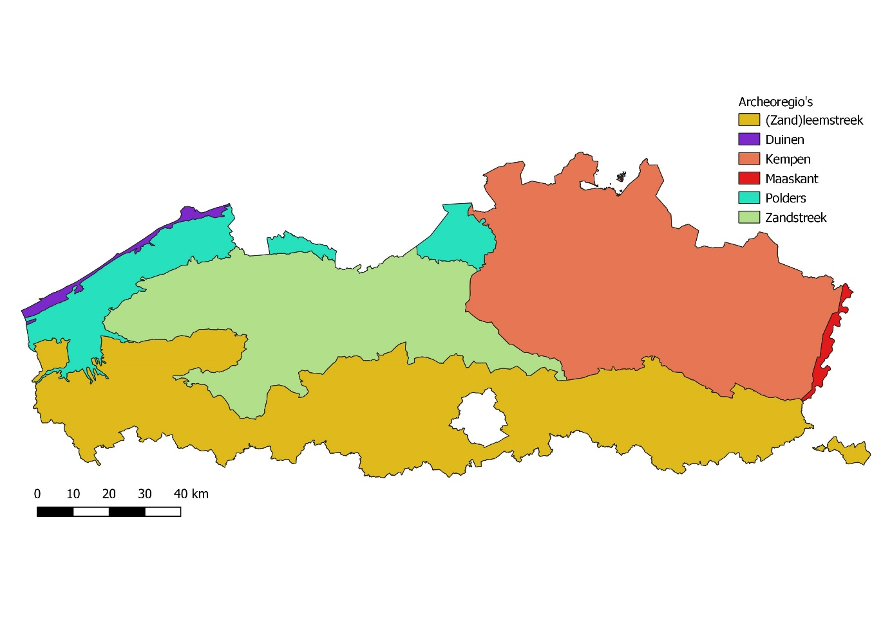
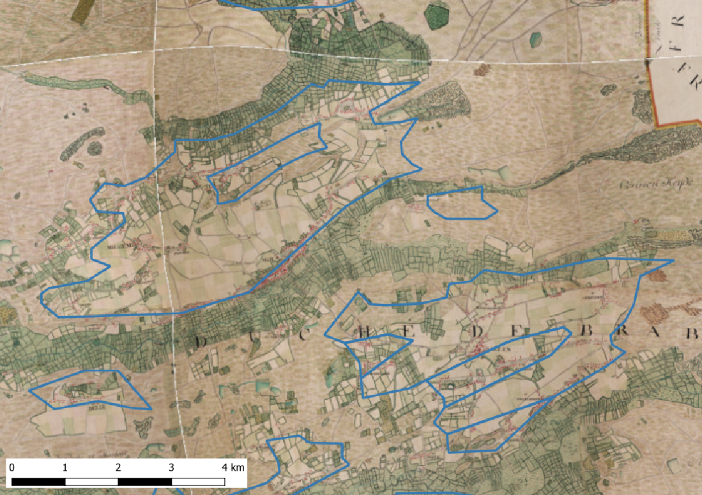
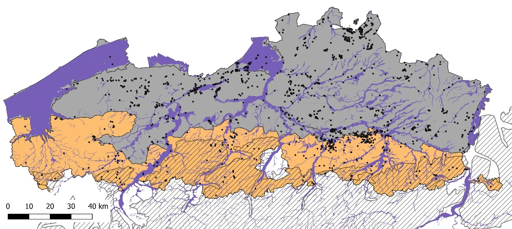
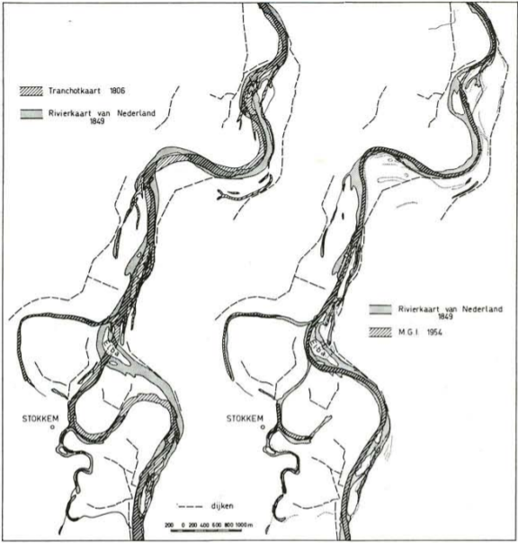

2 Bureauonderzoek
2.1 Inleiding
Het bureauonderzoek is steeds de eerste stap in het preventieve archeologische traject, en is uiteraard ook de fase waarin bepaald wordt welke verdere stappen gezet worden. In het algemeen wordt overgegaan tot de volgende stap, landschappelijk booronderzoek, indien uit bureauonderzoek de volgende vraagstellingen naar voor komen:
Het bewaringspotentieel voor steentijdsites: zijn er niveaus aanwezig die steentijdsites kunnen bevatten, bijvoorbeeld natuurlijke (paleo)bodems, die door de geplande werken bedreigd worden? Wat is hun bewaringstoestand?
De reconstructie van het paleolandschap of de geomorfologie, indien het gaat om complexe contexten.
In de huidige praktijk wordt prospectie naar steentijdsites ingezet wanneer blijkt dat het bewaringspotentieel voor steentijdsites voldoende is, en wanneer er een zekere verwachting is t.a.v. de aanwezigheid van steentijdsites.
In de fase van het bureauonderzoek moet je dus telkens de afweging maken of deze vraagstellingen aan de orde zijn. Hiervoor kunnen verschillende bronnen gebruikt worden: digitale hoogtemodellen, bodemkaarten, geomorfologische en quartairgeologische kaarten, luchtfoto’s, enz. Het meest complexe aspect van dergelijk onderzoek is de bepaling van de archeologische verwachting t.a.v. de aanwezigheid en bewaring van steentijdsites. Daarom wordt in de volgende hoofdstukken hier ruim aandacht aan besteed.
Na enkele meer beschouwende hoofdstukken over deze aspecten doen we dit via overzichten per archeoregio, en met een specifiek hoofdstukje aangaande rivier- en beekvalleien. We wijden ook een apart hoofdstuk aan het vroeg- en middenpaleolithicum.
2.2 Bronnen
2.2.1 Bodemkaarten
De kartering van de Belgische bodemkaart werd uitgevoerd van 1947 tot de jaren ‘70 van de 20ste eeuw. Hierbij werden vlakdekkend (met uitzondering van de bebouwde zones die als bodemserie ’OB’ zijn aangeduid) twee boringen per hectare uitgevoerd tot ca. 1,2m diepte1. Op basis daarvan werd het hele grondgebied van België bodemkundig in kaart gebracht. In Vlaanderen zijn met uitzondering van de Polders per zone substraat, textuurklasse, drainageklasse, profielontwikkeling, fase en variante aan de hand van een uniforme legende aangegeven. Voor de Polders is een andere legende gebruikt die de geomorfologische eigenschappen (substraat, serie, subserie, subtype en variante) in rekening brengt2. De gedrukte analoge bodemkaart op schaal 1:20.000 is ook online beschikbaar via de ‘bodemverkenner’ van de Databank Ondergrond Vlaanderen (DOV; zie 2.2.5)3. Via dit platform kan verder doorgeklikt worden naar een beschrijving met foto’s van referentiebodems, naar de verklarende ‘bodemboekjes’, en ook naar de oorspronkelijke ‘basiskaarten’ met de Popp-kaarten als achtergrond op schaal 1:5.000 (fig. 2.1). Afgeleid van deze bodemkaart zijn o.a. ook de ‘bodemassociatiekaart’ op schaal 1:500.000, die een aantal bodemkenmerken groepeert, en de bodemkaart van België naar de ‘World Reference Soil Units’ (schalen 1:40.000 en 1:250.000; World Reference Base of WRB kaart)4. Deze kaarten en afgeleiden ervan zijn ook te raadplegen via wfs5.
Uiteraard zijn de meest gedetailleerde bronnen, met name de oorspronkelijke ‘basiskaarten’ op schaal 1:5.000, het nuttigst om te gebruiken in het kader van concrete dossiers. De toepassingen hiervan kunnen velerlei zijn: aanduiding van stuifzanden, alluvium, colluvium, plaggenbodems, kreekruggronden (polders), veen, vergraven bodems, enz. Hier komen we verder op terug bij de bespreking van de verschillende archeoregio’s.
Wat betreft de kartering van bodems vermelden we ten slotte het project ‘waardevolle bodems’ uit 20066. Dit project omvatte de kartering en beschrijving van een aantal zones waarin specifieke goed bewaarde bodemkundige situaties (bijv. het voorkomen van Usselo paleobodems; zie 2.4.1.3.4) voorkomen. Dit is geen exhaustieve, vlakdekkende kartering voor Vlaanderen, maar biedt middels het rapport7 een aantal goede referentiebeschrijvingen voor diverse types bodems en hun genese. Aan de hand van de criteria bepaald in dit project, werd een GIS-laag opgemaakt met ‘bodemkundig erfgoed’. Per zone kan je een fiche met beschrijving raadplegen. Deze laag is eveneens beschikbaar via de wfs service van DOV8.
2.2.2 Quartairgeologische kaarten
Voor Vlaanderen werden per kaartblad vlakdekkend quartairgeologische kaarten gemaakt op schaal 1:50.000, die telkens worden begeleid door een rapport. Zowel de kaarten als deze rapporten kunnen eveneens via DOV geraadpleegd worden9. Deze kaarten werden gebundeld in een ‘samengestelde quartairprofieltypekaart Vlaanderen’ op schaal 1:50.000, die als een vector GIS bestand (shapefile) ook weer via de reeds genoemde wfs service van DOV kan opgehaald worden. Voor een groot aantal van de afgebakende zones kan via deze laag doorgeklikt worden naar een fiche over het aanwezige profieltype (fig. 2.2).
Deze quartairgeologische kaarten zijn uiteraard veel minder precies qua afbakening dan pakweg de bodemkaarten, en moeten dus begrepen worden als een algemeen kader. Meer precieze gegevens op lokaal niveau zijn indien beschikbaar raadpleegbaar via de boringen en sonderingen op DOV.
De quartairgeologische kaarten bakenen dus ‘profieltypes’ af, die de opeenvolging van verschillende quartairgeologische afzettingen in een bepaalde zone beschrijven. In die zin kunnen ze nuttig zijn om de kans in te schatten op de aanwezigheid van sedimenten met welbepaalde archeologische relevantie, bijvoorbeeld de aanwezigheid van laatglaciale duinzanden, of oudere quartaire afzettingen, die van belang zijn voor de mogelijke aanwezigheid van paleolithische sites.
Afgeleid van de boorgegevens gebruikt voor de opmaak van de quartairgeologische kaarten, zijn er eveneens enkele andere producten beschikbaar. Qua regionale en lokale resolutie en precisie zijn ze steeds, zoals de kaarten zelf, afhankelijk van de hoeveelheid boorgegevens in het gebied. Dit zijn o.a. de isospachenkaarten van het quartair (die dus de dikte weergeven van het quartair dek in een gebied; fig. 2.3), en de isohypsenkaarten van de top en basis van dit quartair. Samen kunnen deze gegevens bijvoorbeeld een indicatie bieden voor de diepte(s) onder het huidige maaiveld waarop een zeker potentieel voor de aanwezigheid van vroeg- en middenpaleolithische sites kan verwacht worden. Ook deze kaarten en bestanden zijn beschikbaar via DOV Vlaanderen en diens bodemverkenner en wfs service.
Met betrekking specifiek tot het voorkomen, de dikte en diepte van afzettingen van de Vlaamse vallei zijn de bestanden (isohypsen en isospachen) van de “voorkomensgrenzen van de formaties van Rozebeke, Kruishoutem, Meulebeke, Melle, Adegem, Oostwinkel, Eeklo, Oostende en Herzele”10 van belang (zie 2.4.6). Ook deze bestanden zijn via de DOV wfs service raadpleegbaar.
2.2.3 Geomorfologische kaarten
Geomorfologische kaarten beschrijven en delen het landschap in naar de morfologie en genese van de oppervlaktebegrenzende afzettingen11. Deze indeling houdt dus steeds een combinatie in van eigenschappen van ‘reliëfvorm’ (bijv. ‘vlakte’ – ‘rug’ – ‘dal’ -…) en genetische achtergrond (bijv. dekzandrug – stuifzandrug).
Voor Vlaanderen is geen vlakdekkende geomorfologische kartering beschikbaar. Voor de kustvlakte werd er wel een dergelijke kartering uitgevoerd op schaal 1:50.00012 (zie 2.4.4.1.2). Hetzelfde geldt voor het kaartblad Lokeren13. Enkele andere geomorfologische kaarten werden opgemaakt in het kader van academisch onderzoek, o.a. voor de Noorderkempen14.
Ook hier verwijzen we weer naar de bespreking per archeoregio voor enkele voorbeelden van concreet gebruik van deze kaarten. Voor een deelgebied van de Kempen werd in het verleden een zekere verwachting naar ‘bewaringspotentieel’ opgebouwd o.a. aan de hand van geomorfologische kenmerken15.
2.2.4 Digitale Hoogtemodellen op basis van laseraltimetrie
2.2.4.1 Beschikbare producten
De bijzonder grote mogelijkheden van laseraltimetrie (beter gekend als Airborne Laser Scanning (ALS) of Light Detection and Ranging (LiDAR) voor het in kaart brengen van landschappen en historisch en archeologisch erfgoed zijn ondertussen genoegzaam bekend16. Voor Vlaanderen werd in 2004 een eerste vlakdekkend Digitaal Hoogtemodel (DHM) gefinaliseerd17. In 2015 werd een nieuw dergelijk model afgewerkt, en algemeen beschikbaar gesteld als rasters met een 1m resolutie18. Van beide Digitale Hoogtemodellen zijn diverse rasters vrij beschikbaar, alsook de geklasseerde puntenwolken19. Van deze producten kan, o.a. aan de hand van vrij beschikbare Open Source Software (zoals QuantumGis, Fugrovieuwer, LAStools, …) een grote waaier aan afgeleide visualisaties en modellen afgeleid worden20. Systematisch onderzoek van deze producten en dergelijke afgeleide visualisaties hebben de laatste jaren geleid tot de ontdekking van diverse archeologische en cultuurhistorische relicten21.
Hoewel de algemeen beschikbare 1m resolutie rasters al bijzonder veel potentieel bieden voor het karteren van landschappen en het herkennen van (archeologische) structuren, werden in 2019 in samenwerking tussen het Agentschap Informatie Vlaanderen en het agentschap Onroerend Erfgoed op basis van de puntenwolken van de scan van het Digitaal Hoogtemodel Vlaanderen II zeer hoge resolutie (0,25m raster resolutie) visualisaties gemaakt, namelijk een multidirectional hillshade en een sky view factor verwerking. Dit laat naast het identificeren en karteren van landschapselementen en relicten ook toe om de fysieke toestand van deze elementen in bijzonder grote mate van detail te beoordelen, bijvoorbeeld de impact van bosbeheer op archeologische en cultuurhistorische relicten22. Beide producten zijn beschikbaar via verschillende online GIS-portalen23 en het ‘Open Lidar’ portaal van Informatie Vlaanderen24, en kunnen in een eigen GIS omgeving worden geraadpleegd via WMTS services25. In de loop van 2020 werd in samenwerking tussen het Agentschap Natuur en Bos (ANB) en het Agentschap GIS Vlaanderen ook een 1m resolutie DTM (Digitaal Terreinmodel) raster gemaakt op basis van de puntdata van de eerste versie van het DHM Vlaanderen van 200526. Dit laat bijvoorbeeld toe om reliëfwijzigingen te detecteren die zijn ontstaan tussen de opnames van de eerste en tweede versie van het Digitaal Hoogtemodel Vlaanderen. Dit product wordt beheerd door het Agentschap Natuur en Bos, en is echter nog niet algemeen beschikbaar.
2.2.4.2 Gebruik
Met de diverse beschikbare producten en de grote variatie aan mogelijke modellering- en visualisatietechnieken bieden de digitale hoogtemodellen gebruiksmogelijkheden op diverse schaalniveaus. In het kader van het bepalen van een verwachting naar de aanwezigheid en bewaring van steentijdsites zijn interpretatie in functie van het in kaart brengen van de geomorfologie van het landschap en het ‘bewaringspotentieel’ van dat landschap voor sites uit de prehistorie het belangrijkst. Reeds in 2006 werd een voorbeeld hiervan op basis van het Digitaal Hoogtemodel Vlaanderen I uitgewerkt27. Een aantal concrete mogelijkheden van gebruik van deze modellen, bijvoorbeeld het in kaart brengen van laatglaciale duinruggen, stuifzandgebieden, alluviale zones, komen verder aan bod bij de bespreking van de verschillende archeoregio’s (zie 0).
We illustreren hieronder kort enkele van dergelijke mogelijkheden en benaderingswijzen, maar dit omvat het volledige areaal aan toepassingsmogelijkheden en vraagstellingen niet. Een breed areaal aan mogelijke toepassingen is immers ondertussen beschikbaar in de (inter)nationale wetenschappelijke literatuur.
Een eerste aspect dat daarbij benadrukt dient te worden, is dat het geschikte schaalniveau waarop de DHM’s gebruikt worden uiteraard van groot belang is. Dit is sterk afhankelijk van de vraagstellingen en het type landschap waarin een projectgebied zich bevindt In het algemeen wordt elk projectgebied daarom steeds best bekeken met verschillende schaalniveaus, waarbij afhankelijk hiervan het perspectief op de geomorfologische positie van het gebied enorm kan variëren (fig. 2.4).
Een andere mogelijke benadering van het gebruik van de Digitale Hoogtemodellen is deze te vergelijken met historische (of recentere) topografische kaarten. Hier kan soms uit blijken dat ten aanzien van de historische situatie aanzienlijke verschillen in de topografie zijn opgetreden, waaruit kan worden afgeleid dat het oorspronkelijke reliëf bijvoorbeeld sterk is afgetopt (fig. 2.5).
De hoge resolutie en precisie van het DHM Vlaanderen en diens afgeleide producten laten ook toe om in complexe gebieden, en in combinatie met andere bronnen zoals bodemkaarten, in enige mate de geomorfologische dynamiek en zo de landschappelijke ‘gelaagdheid’ van landschappen te onderzoeken. Op basis hiervan kunnen gerichte vraagstellingen voor het landschappelijk booronderzoek worden bepaald. Als een illustratie hiervan fig. 2.6. Op dit beeld van de 0,25m resolutie multidirectional hillshade verwerking is een landschap te zien waarbij een mogelijk oudere dekzand(?)rug (1 op fig. 2.6) overdekt wordt door een sterk ontwikkelde stuifzandrug (2 op fig. 2.6). Mogelijk dekt dit stuifzandpakket dus nog een goed bewaard ouder niveau af. In de zone tussen de ‘armen’ van de stuifzandrug bevindt zich vermoedelijk een deflatiezone, waar de ronde stuifzandduintjes (3 op fig. 2.6) mogelijk een restant zijn van het vroegere oppervlak, en waar er dus mogelijk een deel van het oorspronkelijke oppervlak is verdwenen, en slechts heel plaatselijk bewaard is. Dit soort landschapsgenetische hypothesen moet uiteraard steeds verder worden onderzocht door landschappelijk bodemonderzoek (zie 3).

2.2.5 De Databank Ondergrond Vlaanderen (DOV)
In diverse andere hoofdstukken is al verwezen naar bestanden die beschikbaar worden gesteld in de ‘Databank Ondergrond Vlaanderen’ en diens wfs28 en wms29. De toegang tot de diverse gegevens en bestanden wordt ook voorzien middels de DOV website30, en de DOV ‘verkenner’, een online GIS- service31. Voor een uitgebreide beschrijving van alle gegevensbestanden van DOV kan je terecht op de DOV website, waar een pagina met een uitgebreide reeks handleidingen beschikbaar is32. We willen hier wel enkele mogelijkheden van de uitgebreide beschikbare data aanhalen, en meer bepaald de gegevens van de vele beschikbare boringen en sonderingen. Deze laten toe om in enige mate van detail de geologische opbouw, en bijvoorbeeld de quartairgeologie van een gebied, te reconstrueren, en daarmee ook het paleolandschap relevant voor steentijdonderzoek33. Zoals onder andere wordt aangehaald in het hoofdstuk van de Vlaamse Vallei (zie 2.4.6.2) bezitten ook de vele isohypsen en isospachen bestanden een belangrijke indicatieve waarde. Om een synthese te genereren van de opbouw van de ondergrond op één locatie kan ook de tool ‘virtuele boring’ worden gebruikt34. Daarnaast kan je ook de ‘3D Subsurface Viewer’ gebruiken om de opbouw van een zone te modelleren35. Voor een inschatting van bodemkundige bewaring, bijvoorbeeld in de top van het dekzand, bieden de boringen en sonderingen van DOV doorgaans te weinig detailinformatie. Aangezien het bestand ook een groot aantal oudere boorgegevens bevat, is er ook enige variatie in de kwaliteit en het detailniveau. De ‘Bodemverkenner’ is echter een handige tool, aangezien je ermee via de bodemkaarten meteen informatie kan verkrijgen naar onder andere referentie-bodemprofielen36.
2.2.6 Bronnen voor het inschatten van de impact van historisch en recent landgebruik
2.2.6.1 Algemeen: de impact van landgebruik op steentijdsites
Het historisch en recent landgebruik bepaalt in sterke mate de bewaringstoestand van archeologische sites. Voor steentijdsites is dit zeker ook het geval, maar aangezien zij vaak alleen bestaan uit mobiele artefacten, met weinig of geen antropogene bodemsporen, wijkt de precieze impact soms af van recentere archeologische sites.
De aard en impact van het bodemgebruik kan heel divers zijn, van grootschalige wijzigingen van de topografie (fig. 2.7) tot een lokale verstoring van het bodemprofiel door bijvoorbeeld landbouw (fig. 2.8). Uiteraard hebben verschillende types van landgebruik steeds een andere impact op het archeologisch erfgoed. Terwijl grootschalige terreinnivelleringen vaak desastreus zijn voor steentijdsites, kan de impact van (andere) land- en bosbouwactiviteiten sterk variëren. Zo vereisen verschillende landbouwgewassen vaak andere manieren van landbewerking (bijv. andere manier van ploegen), en is ook de manier van oogsten en de afvoer van gewasgebonden grond (en eventuele prehistorische artefacten in deze grond) sterk afhankelijk van het type gewas. Experimenteel onderzoek in Vlaanderen toont aan dat tot 26 ton grond per hectare per jaar samen met de geoogste gewassen kan afgevoerd worden37. Ook verdichting (compactie) van de bodem door het gebruik van zware machines en praktijken van bodemverbetering (fig. 2.9) kunnen een sterke impact hebben op de bodem en archeologische sites38. Maar uiteraard heeft niet alleen landbouw een zekere impact op archeologisch erfgoed, ook praktijken van natuurbeheer zoals plaggen in functie van heideherstel of bosontginning kunnen de bewaring van archeologische sites sterk beïnvloeden (fig. 2.10).
Prehistorische sites die door dit landgebruik werden beïnvloed hebben meestal niet al hun informatiewaarde verloren. Op terreinen met een lage hellingsgraad is de horizontale verplaatsing van artefacten door bijvoorbeeld ploegen relatief beperkt, in verhouding tot de verplaatsing die de artefacten voordien reeds hadden ondergaan door bodemvormende processen. Bovendien werden de artefacten door diezelfde processen meestal over een groot deel van het vroegere natuurlijke bodemprofiel verticaal verspreid, zelfs tot in de C-horizont, waardoor artefacten ook nog onder de ploeglaag aanwezig kunnen zijn.
De precieze impact van grondbewerking op de bewaringstoestand van steentijdsites varieert sterk met de precieze techniek ervan, de diepte, en het aantal keren dat deze werd herhaald. Aangeploegde mobiele artefactensites zijn altijd nog van belang in het kader van een landschapsarcheologische benadering, maar kunnen soms bijna even goed bewaard zijn als in een natuurlijke holocene bodem, zodat zelfs intrasite analyse mogelijk blijft39. De bewaringstoestand van steentijdsites in een bouwvoorcontext is daarom nooit a priori gekend maar moet steeds het onderwerp uitmaken van waarderingsonderzoek. Daarbij zouden in theorie de volgende vragen beantwoord moeten worden:
Hoe groot is het deel van de site dat in de bouwvoor is opgenomen?
Zijn er ook onder de bouwvoor artefacten bewaard in een natuurlijke bodem?
Hoe verhouden beiden zich kwantitatief?
Wat was de impact van de bouwvoor op de artefacten erin?
In welke mate werden de artefacten verplaatst?
Werden artefacten verwijderd, en zo ja in welke mate?
Heeft de bodembewerking de artefacten zelf aangetast (breuken, metaalglans, verweerde boorden en ribben, …)?
Als een deel van de site onder de bouwvoor bewaard is, kan dit als controle-ensemble gebruikt worden voor het beantwoorden van vraag 2. Hiervoor zijn meestal echter meer vondsten nodig dan waarderingsonderzoek doorgaans oplevert, en kan vraag 2 vaak alleen beantwoord worden na opgraving. Waarderingsonderzoek blijft in de praktijk meestal dus beperkt tot vraag 1. Dit verhoogt het belang van gedegen onderzoek naar het bodemgebruik in de fase van het bureauonderzoek.
Daarnaast kan de diepte van de bodembewerking in de natuurlijke bodem lokaal sterk variëren, vaak onder invloed van de vroegere (micro)topografie. Zelfs in sterk genivelleerde landschappen, zoals bijvoorbeeld door oude ruilverkavelingen, kunnen lokaal nog goed bewaarde bodemhorizonten en steentijdsites aanwezig zijn40. Ook in sterk bebouwde landschappen zoals historische steden is de aanwezigheid van steentijdsites verre van uitgesloten. In de stadskernen van bijvoorbeeld Antwerpen, Mechelen, Lier en Tongeren werden de laatste decennia steentijdsites aangetroffen in goed bewaarde natuurlijke bodems, begraven onder de historische en recente bebouwing41.
Naar de effecten van de diverse types van landgebruik werd in het laatste decennium bijzonder veel aandacht besteed in Nederland door de Rijksdienst voor het Cultureel Erfgoed, naar aanleiding van het project ‘Landgebruik in lagen’42. Dit project omvatte een groot aantal onderzoeken naar de effecten van diverse types landgebruik. Hiervan werd een goede synthese gemaakt in 201943. Een belangrijke conclusie van deze studie is: “Uit de hier beschreven studies komt naar voren dat de mogelijkheden om alleen op basis van bureauonderzoek een representatief beeld te geven van de verstoringssituatie op een perceel beperkt zijn. Aan de andere kant levert een bureaustudie kennis op die essentieel is om de mate van verstoring van een terrein ter plaatse te kunnen toetsen. Op basis van de veldstudies lijkt een methodiek uitgaande van een combinatie van boringen met proefputjes de beste resultaten op te leveren.”44.
2.2.6.2 Bodemgebruik en zijn effecten in kaart brengen
Deze beperking in het achterhoofd houdend, is het uiteraard wel mogelijk om met bureauonderzoek een eerste inschatting te maken van het effect van historisch en recent landgebruik op het bewaringspotentieel van (prehistorische) archeologische sites. We beschikken hiervoor over een groot aantal (GIS) bronnen.
Ten eerste kan je historische en recentere topografische kaarten raadplegen. Deze kunnen aangeven welk algemeen landgebruik (akker, weiland of grasland, bos, heide, enz.) in het verleden ter plaatse aanwezig was, en hoe dit evolueerde doorheen de tijd.
Eveneens indicatief op kleinschalig niveau zijn de GIS bestanden met de gebieden waar landinrichtingen, natuurinrichtingen en ruilverkavelingen hebben plaatsgevonden. Deze zijn beschikbaar via de Vlaamse Landmaatschappij45.
Gebieden met historisch stabiel landgebruik en historisch weinig antropogene impact bieden uiteraard de beste mogelijkheden voor het aantreffen van goed bewaarde landschappen en sites. In dit verband zijn de GIS lagen met ‘historisch permanent grasland’46 en het GIS bestand van de ‘Bosleeftijd’47 van belang.
De momenteel meest recente GIS laag met landbouwgebruikspercelen48 geeft de toestand van 2020 weer, maar deze serie GIS lagen gaat terug tot 200849. Deze percelenkaarten geven weer welk type landbouwgebruik en welke teelten plaats vonden per gebruiksperceel. Dit laat dus toe op een algemeen niveau de impact van landbouwbedrijfsvoering en eventueel bodemverlies door de oogst van bepaalde gewassen in te schatten vanaf 2008.
Het Digitaal Hoogtemodel Vlaanderen kan een belangrijke bron zijn voor het herkennen van reliëfwijzigingen, bijvoorbeeld bij genivelleerde terreinen zoals akker- en weilanden na ruilverkavelingen. De vergelijking tussen akkerlanden en zones in hetzelfde gebied onder bos, heide of historisch weiland biedt daarbij een indicatie van de mate van nivellering. Daarnaast kan een vergelijking met historische kaarten en orthofoto’s concreet aanduiden welke landschapselementen daarbij zijn verdwenen of sterk aangetast (fig. 2.11 en fig. 2.12).
Ook in historisch schijnbaar stabiele gebieden zoals onder bos kan er door historisch of recent bos- of natuurbeheer enige aantasting van de bodem zijn, bijvoorbeeld door de eenmalige beploeging bij de omzetting van heide naar bos in de eerste helft van de 20ste eeuw (fig. 2.13), de aanleg van drainagesystemen en rabatten50, of recentere ingrepen51. De impact hiervan is echter meestal zeer lokaal en beperkt. Ook hier kan het DHM-Vlaanderen en meer specifiek de hoge resolutie verwerkingen ervan zeer veel informatie leveren (fig. 2.14; zie 2.2.4).
2.2.7 Erosiekaarten
Een specifieke problematiek is deze van de water- en bewerkingserosie. De laatste decennia is de problematiek van bodemerosie immers zo groot geworden dat het nemen van erosiewerende maatregelen wordt gestimuleerd door de Vlaamse overheid. In functie hiervan werd door de KU Leuven een methodiek van modellering ontwikkeld die resulteert in diverse GIS modellen en -kaarten52. In verschillende testprojecten bleken reeds de mogelijkheden voor het gebruik van deze modellering voor de evaluatie van archeologische sites53. Gecombineerd met deze modellering kunnen ook luchtfoto’s, topografische kaarten en het Digitaal Hoogtemodel indicaties bieden van recente erosie54.
De ‘potentiële bodemerosiekaart per perceel’ wordt sinds 2012 jaarlijks bijgewerkt naar de nieuwe perceelsvormen en toont een schatting van de gemiddelde jaarlijkse bodemerosie door water en bewerking per perceel55. Deze kartering biedt een waardevolle basis voor het inschatten van de aanwezigheid van sterk geërodeerde gronden. Door het golvend reliëf en de sterke erosiegevoeligheid van leemgronden zijn voornamelijk in de leemstreek vrij veel terreinen als sterk erosiegevoelig gekarteerd.
Deze kaarten zijn een synthese van water- en bewerkingserosiemodellen die door de KULeuven werden ontwikkeld in 200656. Deze zijn echter niet online of als wms beschikbaar. Met deze modellen kan je zeer precies potentiële erosie in kaart brengen (fig. 2.15). Op basis van o.a. de digitale hoogtemodellen is het eveneens mogelijk om zelf dergelijke modelleringen uit te voeren op basis van het Watem/Sedem model, of op basis van de zogenaamde ‘Revised Universal Soil Loss Equation’ (RUSLE)57.
2.3 Het bepalen van een archeologische verwachting ten aanzien van steentijdsites
2.3.1 Archeologie van prehistorische jager-verzamelaars: enkele algemene bedenkingen
Mede door de grote tijdsdiepte van de periode is het archeologisch onderzoek van de steentijd complex. Doorheen deze lange periode veranderden niet alleen de ‘menselijke’ aspecten zoals economische en sociale organisatie, maar ook het landschap en milieu in soms ingrijpende wijze. En al deze aspecten: landschap, milieu, materiële cultuur, economie, religie, enz. zijn uiteraard enkel te begrijpen binnen hun continue onderlinge dynamiek. Om dit enigszins schematisch voor te stellen kunnen we teruggrijpen naar het schema van Clarke (fig. 2.16), dat op zijn beurt als basis kan dienen voor de ordening van archeologische vraagstellingen58. Bij toepassing op het onderzoek van prehistorische jager-verzamelaarsgemeenschappen kunnen we dit onderverdelen in een groot aantal subthema’s, bijvoorbeeld: de exploitatie en het gebruik van bepaalde grondstoffen (bijv. bepaalde vuursteensoorten); economische aspecten (handel, uitwisseling, …); mobiliteit; enz.
Het archeologisch archief van de prehistorische jager-verzamelaarsgemeenschappen is bovendien in zeer sterke mate bepaald door de partiële bewaring van sites en vondstcategorieën, lacunes in het onderzoek, moeilijkheden tot chronologisch houvast, enz. Voor de interpretatie van archeologische sites en vondsten wordt daarom dikwijls teruggegrepen naar antropologische studies en dus etnografische ‘parallellen’ (middle range theory). De literatuur en theorievorming hieromtrent is zeer uitgebreid. Eén van artikels die als klassieker van het genre wordt beschouwd is Lewis Binford’s artikel ‘Willow smoke and dogs’ tails’60, dat modellen van landgebruik opbouwt op basis van etnografische studies van verschillende jager-verzamelaars maatschappijen, rekening houdend met nederzettingspatronen, mobiliteit, grondstof- en voedselverwerking, enz. (fig. 2.17). Van dergelijke modellen zijn uiteraard vele varianten mogelijk, afhankelijk van de gebruikte theoretische achtergrond, en van de periode of samenleving dat het onderwerp is van de studie61. Dergelijke modellen tonen alvast aan dat het archeologisch archief meer is dan een verzameling ‘hotspots’ (sites, meestal de ‘nederzettingen’), en de neerslag vormt van een continuüm van verschillende soorten activiteiten (fig. 2.18) die zich in het hele landschap afspeelden62. Aspecten als mobiliteit, het verkrijgen van ‘grondstoffen’ (bijv. vuursteen), seizoenaliteit, enz. spelen hierin steeds een zekere rol63.
Voor een goed begrip van hoe prehistorische gemeenschappen zich in het landschap organiseerden en hoe ze dat landschap beleefden, zijn in ieder geval dus niet alleen de ‘sites’ (bewoningsplaatsen, activiteitenzones met een hoge densiteit aan vondsten, langdurig of kortstondig bezochte plaatsen64) van belang, maar evengoed de archeologisch vaak minder vatbare off site-fenomenen65. Daarbij is de landschappelijke context (geomorfologie, bodem, …) uiteraard steeds van groot belang.
Dergelijke modellen kunnen dienen als een basis voor interpretatie en studie van de archeologische gegevens, maar o.a. etnografische studies leren ons dat ook deze modellen de complexiteit van jager-verzamelaarsgemeenschappen uiteraard in sterke mate vereenvoudigen66. Ook in het verleden speelden aspecten van territorialiteit, religie, conflict, enz. ongetwijfeld een belangrijke rol67. De archeologische neerslag van dergelijke aspecten zullen zich dikwijls buiten de scope bevinden van de klassieke ‘verwachting’ (zie 2.3.2), maar zijn net daarom uitermate interessant. Daarentegen bevat het archeologisch archief wellicht niet het potentieel om dergelijke aspecten ooit ten volle of zelfs ten dele te doorgronden. Antropologische studies en verslagen van (tot recent) bestaande jager-verzamelaarsgroepen zijn meestal gebaseerd op tientallen jaren van intensief veldwerk en persoonlijke contacten, en pretenderen zelfs dan nog niet om geheel te kunnen doordringen in hun geesteswereld. Op basis van de duizenden jaren oude schaarse en geërodeerde overblijfselen kan de archeologie dan ook onmogelijk dergelijke mate van kennis verwerven, maar het moet uiteraard wel de ambitie van het vakgebied zijn om dit inzicht ‘in zoverre mogelijk’ te realiseren. Nieuwe onderzoekstechnieken, zoals DNA en isotopenonderzoek, of doorgedreven onderzoeken op lithisch materiaal (herkomstbepaling, functioneel onderzoek, …) kunnen hier op termijn in belangrijke mate aan bijdragen.

2.3.2 Verwachtingsmodellen
Traditioneel, en vooral sinds de opkomst van de ‘processuele archeologie’ (toen ook ‘New Archaeology’ genoemd) in de jaren 1970 en 198072, wordt de aanwezigheid van jager-verzamelaarssites, vooral in de zin van ‘bewoningsplaatsen’, sterk gelieerd aan ecologische parameters. Daarbij worden de zones waar mogelijk een hoge dichtheid en diversiteit aan voedsel- of andere bronnen aanwezig was, uitgelicht als potentiële hotspots voor de aanwezigheid van steentijdsites. Doorgaans zijn dit gebieden in ecologische gradiëntzones73, vooral droge zones gelegen vlakbij water (rivier, ven, meer, …). Heel dikwijls wordt de afstand tot open water hierbij vernoemd als een zeer bepalende factor. Vooral in de Nederlandse en Amerikaanse archeologie worden naar dergelijke modellen soms verwachtingskaarten opgemaakt, die gebruikt worden in kader van beleid en beheer74.
Dergelijke modellen werden ook in Vlaanderen sporadisch toegepast, bijvoorbeeld in het kader van ruilverkavelingsprojecten75. De modellen worden inductief (op basis van statistische GIS-modellering van de landschappelijke en archeologische data) of deductief (op basis van aannames van jager-verzamelaarsgedrag en het landschap) opgebouwd. De betere modellen gebruiken een combinatie van beide methodes76 (bijv. fig. 2.19), maar geven tegelijk de gebreken van dergelijke modellen aan77, zoals gebrekkige resolutie en aard van de voorradige landschappelijke data, en schaarsheid van de archeologische gegevens.
Archeologisch onderzoek in Vlaanderen bevestigt wel degelijk het bestaan van bepaalde ecologische niches waar duidelijk meer prehistorische menselijke activiteit was, of ten minste de prehistorische mens veel meer artefacten heeft achtergelaten. Hoger gelegen ruggen langs vennen en waterlopen in de Zandstreek en Kempen78, ruggen in en nabij het paleomeer van de Moervaartdepressie79, en duin- en kronkelwaardruggen in de Scheldevallei80 (fig. 2.20) zijn voorbeelden van dergelijke (paleo)landschappelijke situaties. Enkele van dergelijke gebieden werden tot op heden dan ook beschermd als Archeologische Site81, of vastgesteld als Archeologische Zone82.
Binnen deze gebieden zijn er bovendien dikwijls zones die ofwel gedurende lange tijd, ofwel op verschillende momenten, in de prehistorie gefrequenteerd werden, in de literatuur vaak gekarakteriseerd als persistent places. Bij gebrek aan sedimentatie tussen verschillende occupatiemomenten is de archeologische neerslag hiervan een lappendeken van overlappende structuren, een palimpsest, met een hoge densiteit aan artefacten tot gevolg83.
Dit patroon varieert echter sterk van regio tot regio. Met de wisselende karakteristieken van het lokale landschap varieerden immers de voorkeurslocaties van de prehistorische mens. Voor de Kempen en Zandstreek, en in toenemende mate ook voor de (Schelde)polders en riviergebonden alluviale zones, bieden de beschikbare archeologische gegevens een relatief goed inzicht in de geomorfologische en ecologische eigenschappen van deze persistent places. In andere regio’s, zoals de leemstreek, is dit nog veel minder het geval.
Voor elke regio is bovendien de kennis van het (toenmalige) landschap van groot belang. Het juiste landschappelijke schaalniveau moet gehanteerd worden, en er moet enige marge genomen worden bij het landschappelijk onderzoek (de aanwezigheid van paleobodems is bijvoorbeeld moeilijk voorspelbaar). Dit bespreken we verder per archeoregio.
De bestaande voorspellingsmodellen gaan vooral over zones met een hoge densiteit aan prehistorische activiteit en artefacten. Veel prehistorische activiteiten hebben echter een veel geringere archeologische afdruk nagelaten (zie 2.3.1). De variatie kan hierbij zeer groot zijn: kleine sites op eerder atypische locaties, geïsoleerde artefactenconcentraties, lage densiteitsspreidingen van artefacten, enz.84. Deze kleine en/of lage densiteit sites kunnen getuigen van andere activiteiten dan plaatsvonden op de hoge densiteit persistent places. Bovendien vertegenwoordigen ze waarschijnlijk een groot deel van de bestaande vindplaatsen. Dit is echter nauwelijks gekend omdat het meeste archeologisch onderzoek tot heden gefocust was op de ‘rijke’ persistent places. Dat betekent dat we nog zeer veel kunnen leren van onderzoek op kleine en/of weinig dense steentijdsites. Waar de bewaringsomstandigheden het toelaten moet bovendien rekening worden gehouden met de aanwezigheid van relatief zeldzame artefactcategorieën (bijv. bot).
Elk preventief vooronderzoek vertrekt daarom best van de premisse dat er steeds steentijdsites aanwezig kunnen zijn. Het (al te rigide) hanteren van voorspellingsmodellen houdt immers het gevaar in van cirkelredeneringen en ‘Self fulfilling prophecies’. M.a.w. het is goed om vanuit een zeker ’model’ en verwachtingspatroon te redeneren en onderzoeksstrategieën op te bouwen, maar het model zelf moet steeds met de nodige kritische zin benaderd worden, en in feite steeds in vraag worden gesteld.
Recent werd middels een syntheseonderzoek een doorlichting gemaakt van dergelijke selectiecriteria gebruikt in de preventieve archeologie in Vlaanderen voor het bepalen of er al dan niet ingezet werd op specifiek onderzoek naar de aanwezigheid van steentijdsites. Op basis van deze doorlichting wordt in deze studie een afwegingskader in de vorm van een tabel voorgesteld, waarbij in essentie wordt afgeraden om niet objectief meetbare aannames omtrent ‘verwachting’ te gebruiken (bijv. de invloed van afstand tot water, hellingsoriëntatie, enz.)85.
De huidige methodiek om steentijd artefactensites op te sporen heeft daarnaast ook zijn beperkingen. Archeologische boringen nemen slechts een relatief laag volume aan monsters en zijn daardoor enkel geschikt om op betrouwbare wijze sites op te sporen met een hoge vondstdensiteit. Ook kleine sites die uit slechts één of enkele artefactconcentraties bestaan worden gemakkelijk gemist (zie 4.2.2.3). In gebieden waar geen verwachting is voor steentijdsites met een hoge densiteit aan vondsten wordt daarom geargumenteerd dat de inzet van archeologische boringen doorgaans niet nuttig zal zijn.
Om kleine of lage densiteit sites op te sporen kan ervoor gekozen worden om de prospectiestrategie aan te passen door bijvoorbeeld meer boringen te plaatsen (dichter grid: zie 4.2.2.4.2) en/of grotere monsters te nemen (proefputten: zie 4.2.3). Dit brengt echter een gevoelige extra kost met zich mee, die in de huidige praktijk alleen als verantwoord wordt beschouwd als er een hoge verwachting is naar lage densiteit sites met een hoog kennispotentieel. Voorbeelden hiervan zijn zones met potentieel op het voorkomen van minder gekende subperioden (bijv. middenpaleolithicum), met uitzonderlijke bewaringsomstandigheden (bijv. afgedekte paleobodems), of in de periferie van hoge densiteit sites.
De beperkingen van de huidige prospectiemethodiek verantwoorden dus een focus op prospectie naar vindplaatsen met een hoge vondstdensiteit. Het gebruik van verwachtingsmodellen dient daarbij om de methodiek efficiënt in te zetten, namelijk alleen op plaatsen waar er een zekere verwachting is naar dergelijke sites.
Tegelijkertijd zorgt dit ervoor dat kleine en lage densiteit steentijdsites in de huidige praktijk onderbelicht worden. Dit kan in de toekomst alleen verholpen worden door verbetering van de prospectietechnieken of de inzet van extra middelen. In afwachting daarvan is het echter heel belangrijk dat we ons bewust zijn van het bestaan van deze sites en hun kennispotentieel. Wanneer ze toch gevonden worden (vaak eerder toevallig, bijvoorbeeld bij proefsleuvenonderzoek), geven we ze dan ook best de nodige aandacht door middel van grondige waardering en eventueel opgraving.
Bovendien dreigt het gebruik van verwachtingsmodellen ervoor te zorgen dat het preventief onderzoek vooral bestaande ideeën zal bevestigen en dus in cirkelredeneringen zal vervallen. Momenteel kan dit enkel worden ingeperkt door een bewustzijn van deze problematiek, samen met het kritisch en met de nodige nuance hanteren van de bestaande verwachtingsmodellen. Daarnaast zijn vindplaatsen op locaties die niet overeen komen met de bestaande verwachtingsmodellen van groot belang. Ze laten immers toe om de werkelijke variabiliteit in de aard en lokalisatie van steentijdsites beter te leren kennen, en daarmee cirkelredeneringen te doorbreken en de verwachtingsmodellen bij te stellen. Indien dergelijke sites ‘onverwacht’ worden aangetroffen, bijvoorbeeld bij proefsleuvenonderzoek of opgraving van recentere sites, verdienen ze dus zeker verder onderzoek (zie 6.3).
2.3.3 Het ‘bewaringspotentieel’ voor steentijd artefactensites
De postdepositionele tafonomische processen die een invloed hebben op de bewaring van het bodemarchief in het algemeen, en steentijdsites in het bijzonder, zijn sterk afhankelijk van landschappelijke aspecten (geologie, geomorfologie, bodemvorming, enz.).
Aan de uiterste uiteinden van dit spectrum kan bijvoorbeeld erosie de relevante bodemniveaus hebben weggeruimd, waardoor de kans op de aanwezigheid van steentijdsites onbestaande is. Aan de andere kant van dit ‘bewaringspotentieel’ kunnen latere afdekkingen en waterverzadigde contexten uitzonderlijk goede kansen bieden voor de bewaring van archeologische sites en vondsten. Tussen deze twee uitersten is er uiteraard nog een brede variabiliteit mogelijk, waarin o.a. ook processen van bioturbatie87 en landgebruik88 een rol spelen.
Een landschappelijke kartering aan de hand van bijvoorbeeld digitale hoogtemodellen, geomorfologische kaarten, luchtfoto’s, enz. kan al resulteren in een overzicht van een dergelijk ‘bewaringspotentieel’ op landschappelijk niveau89. Landschappelijk bodemonderzoek kan in een tweede fase dergelijke modellen al dan niet bevestigen, bijsturen, of in meer detail in beeld brengen (zie 3). Een moeilijke factor, die vaak enkel door terreinonderzoek kan worden in kaart gebracht, is de aanwezigheid van afgedekte paleobodems (zie o.a. 2.4.1.3.4).
De opdeling naar archeoregio’s weerspiegelt in feite al de bundeling van belangrijke tafonomische processen. De aspecten van belang voor de inschatting van dit ‘bewaringspotentieel’ worden dan ook in verder detail behandeld per archeoregio in het volgende hoofdstuk. Daarnaast worden, eveneens per regio, ook de belangrijkste bronnen geduid die van belang zijn voor het herkennen en karteren van deze aspecten.
2.4 Overzicht per archeoregio
2.4.1 Inleiding

Dit hoofdstuk biedt voor elke archeoregio een beknopt overzicht van de gekende steentijdarcheologie90, en van de relevante geomorfologie en bodems. Deze informatie vormt de beschikbare informatie voor het opmaken van een archeologische verwachting. Voor sommige archeoregio’s treden we in meer detail, bijvoorbeeld aan de hand van verder uitgewerkte voorbeelden van deelregio’s. Deze fungeren ter illustratie van de complexiteit van landschappen en hun evolutie doorheen de tijd.
De opdeling in ‘archeoregio’s’ werd in eerste instantie opgemaakt voor de opmaak van de eerste versie van de onderzoeksbalans archeologie in 200891. Omdat de aard van het pleistocene-holocene ‘dek’ en de daarmee gepaard gaande variabiliteit aan bodemontwikkeling en processen van erosie-sedimentatie een belangrijke rol spelen, werden de ‘archeoregio’s’ in grote mate geënt op de bodemkundige regio’s van Vlaanderen, hetzij enigszins vereenvoudigd92. Logischerwijze vertoont de opdeling van de archeoregio’s ook grote overeenkomsten met de opdeling van Vlaanderen in ‘ecoregio’s’93 en landbouwkundige streken94. Zo werden de volgende regio’s afgebakend: De Duinen (duinengordel langs de kust); de Poldergebieden (mariene en Scheldepolders); de Zandstreek; de Kempen; De Zandleem- en Leemstreek; en de Maasterrassen. Met het Belgische gedeelte van de Noordzee voegen we een zevende archeoregio toe (fig. 2.21).
Op geologische of bodemkundige gronden is het onderscheid tussen Zandstreek en Kempen (waarbij de grens (zoals deze van de ecoregio’s) gelegd werd op de rivierlopen van de Schelde, Rupel en Dijle) op het eerste zicht niet relevant, aangezien beiden gekenmerkt worden door de aanwezigheid van dekzanden. Maar op pedologisch vlak zijn er wel degelijk verschillen, zo zijn de dekzanden in de Zandstreek in het algemeen wat fijner en siltiger, en komen podzolbodems meer voor in de Kempen. Het dekzandgebied loopt trouwens nog door in de poldergebieden, maar wordt daar afgedekt (indien niet weggeërodeerd) door holocene afzettingen (veen, klei, …), wat uiteraard een groot belang heeft voor de bewaring van archeologische sites.
In de bodemkundige regio’s is er eveneens een opdeling naar Zandleem- en Leemstreek. Dit werd in de archeoregio’s samengevoegd, enerzijds omdat de grenzen tussen deze beide regio’s bodemkundig eerder ‘gradueel’ dan scherp zijn.
Voor de periode van het middenpaleolithicum kan gesteld worden dat deze opdeling in archeoregio’s op basis van de bodemkundige streken niet of nauwelijks relevant is, aangezien het landschap ten tijde van deze periode uiteraard ingrijpend is veranderd. Daar zou het ongetwijfeld relevanter zijn een opdeling te maken naar bijvoorbeeld de aanwezigheid van de afzettingen van de zogenaamde ‘Vlaamse Vallei’ en andere quartairgeologische aspecten. Desalniettemin zijn er wel enkele voor deze periode relevante kenmerken in de opdeling van de archeoregio’s, zoals bijvoorbeeld de aanwezigheid van bepaalde paleobodems in de leemstreek.
2.4.2 Het dekzandgebied (archeoregio’s Kempen en Zandstreek)
De archeoregio’s Kempen en Zandstreek worden hier samen besproken omdat ze voor de finaalpaleolithische en mesolithische archeologie een gelijkaardige situatie bieden, namelijk deel uitmaken van het uitgestrekte Noordwest-Europese dekzandgebied. Deze archeoregio’s worden in Vlaanderen begrensd door de mariene en Scheldepolders in het westen en noordwesten, het zandleemgebied in het zuiden, en de Maasvallei in het oosten (fig. 2.22). Zoals al werd gesteld in de inleiding over de archeoregio’s loopt het dekzandgebied in feite nog door in de archeoregio van de Polders, waar de dekzanden echter ofwel worden afgedekt door jongere sedimenten (klei, veen, enz.), ofwel werden geërodeerd door holocene mariene en fluviatiele invloeden.
2.4.2.1 Een beknopt overzicht van de archeologische kennis
De spreidingskaart van gekende finaalpaleolithische en mesolithische vindplaatsen in Vlaanderen toont in de eerste plaats aan dat het overgrote deel hiervan zich in het dekzandgebied bevindt (fig. 2.23). De spreiding hierbinnen is echter niet gelijkmatig. Een aantal concentraties aan vindplaatsen tekenen zich af, terwijl in andere gebieden nog geen vindplaatsen gekend zijn. De sites met een datering ‘steentijd-onbepaald’ (doorgaans prospectievondsten of zgn. ‘bijvondsten’ bij proefsleuven of opgravingen, bestaande uit een klein aantal lithische artefacten zonder overtuigende chronologisch-diagnostische kenmerken) volgt grofweg dit patroon.
Dit spreidingspatroon van gekende vindplaatsen is uiteraard geen reflectie van de archeologische realiteit, maar weerspiegelt voornamelijk enerzijds de historiek van het onderzoek, en anderzijds de ‘zichtbaarheid’ van de sites (bijv. door de aanwezigheid van afdekkingen door o.a. alluvium). Voor een algemeen overzicht van het steentijdonderzoek in deze regio’s verwijzen we eveneens naar de stand van zaken zoals deze werd geschetst in de ‘Onderzoeksbalans Archeologie’95. We beperken ons hier tot een beknopt overzicht van de belangrijkste trends.
De eerste Kempense jagers-verzamelaarsvindplaatsen werden kort na 1900 beschreven. Deze trokken in de volgende decennia de eerste professionele onderzoekers aan, in de eerste plaats J. Hamal-Nandrin uit Luik. Hij voerde de eerste opgravingen uit te Zonhoven en Lommel96.
Vanaf de jaren 1960 startte de KU Leuven in de regio van de Kempen systematisch onderzoek door de opgraving van een reeks finaalpaleolithische en mesolithische vindplaatsen, zoals o.a. Opglabbeek-Ruiterskuilen, Meer-Meirberg, Weelde-Paardsdrank, Zonhoven-Molenheide, Meeuwen-In Den Damp, Lommel-Vosvijvers, Helchteren-Sonisse Heide, Opgrimbie-Onder de Berg en Opgrimbie-De Zijp97. Ook de site Oosthoven-Heieinde past in deze onderzoekstraditie en blijft tot heden de enige opgegraven middenpaleolithische site in het dekzandgebied98. De meeste van deze sites werden door amateurarcheologen aangedragen. De gedetailleerde analyse van de finaalpaleolithische site Meer-Meirberg99 bleef voor twee decennia een internationaal voorbeeld voor het combineren van ruimtelijke analyse en gebruikssporenonderzoek, tot een nog rigoureuzere analyse van een site te Rekem het in 2000 oversteeg.
Vanaf de jaren 1990 werd eveneens een aantal karterings- en opgravingsprojecten uitgevoerd in het kader van ruilverkavelingen, bijvoorbeeld te Weelde100, Merksplas101, en Herenthout-Bouwel102. Deze projecten verklaren een aantal clusters van gekende sites.
Een aantal andere clusters aan vondsten komen voort uit het project ‘Archeologische Inventaris Vlaanderen’, in het kader waarvan aan de Universiteit Gent een groot aantal zogenaamde ‘prospectiethesissen’ werd opgemaakt, meestal per gemeente103.
Een groot aantal sites is eveneens afkomstig van prospectie door amateurarcheologen. Voornamelijk vanaf de jaren 1980 werd een aantal amateurcollecties systematisch geregistreerd104. Een bijzonder rijke collectie is deze van de heren De Meireleir & De Bock, die een groot aantal prehistorische sites hebben gelokaliseerd in de regio van het Waasland105. In de Zandstreek werd een groot aantal collecties van amateurarcheologen geïnventariseerd door projecten aan de Universiteit Gent106. Hierin zijn een aantal opvallende regionale clusters te bemerken, bijvoorbeeld de zone van de Moervaartdepressie, de randen van de vallei van De Kale, en de dekzandrug Maldegem-Stekene. Deze systematische inventarisatie leidde eveneens tot een beperkt aantal opgravingen107.
In 1999 en 2000 werden te Meer-Meirberg en Bocholt-Smeetshof de eerste systematische evaluatieonderzoeken met archeologische boringen uitgevoerd in de Kempen108. Dit leidde tot een onderzoeksproject109, met als doel het systematisch verkennen van voornamelijk duinruggen met een goede bodemkundige bewaring. Hierbij werden verschillende sites aangetroffen, afgebakend en geëvalueerd naar bewaringstoestand110.
Eén van deze evaluaties vond plaats in het uitgestrekte duinmassief van Landschap De Liereman111. Dit leverde een groot aantal vindplaatsen op, ten dele in associatie met de laatglaciale Usselobodem (zie 2.4.1.3.4), en leidde tot een bescherming als archeologische site112.
Twee andere grootschalige projecten werden in Lommel uitgevoerd: naar aanleiding van de zandwinningen op de Maatheide113, en langs de Molse Nete op het bedrijventerrein Kristalpark114. Op beide vindplaatsen werd een groot aantal vondstenconcentraties onderzocht, waarvan ook een deel in de Usselobodem115. Lommel-Kristalpark wordt momenteel nog verder verkend, waaruit alvast blijkt dat de Usselobodem er over een grote oppervlakte aanwezig is116.
2.4.2.2 Quartairgeologische en geomorfologische aspecten
2.4.2.2.1 Algemeen overzicht
Een belangrijk morfologisch element in het dekzandgebied, en in Vlaanderen in het algemeen, is de aanwezigheid van de Vlaamse vallei, een grote paleovallei die in het middenpleistoceen werd gevormd117. Tijdens de Saale en Weichsel ijstijden werd deze depressie opgevuld met voornamelijk fluviatiele sedimenten. De kern van deze depressie is gelegen ten noorden van Gent, de randen van deze depressie strekken zich verder uit voornamelijk langs huidige riviervalleien, bijvoorbeeld langs de vallei van de Grote Nete tot voorbij Lier. De vorm van deze grote depressie bepaalt dan ook in grote mate de hoofdlijnen van het reliëf van het dekzandgebied en het afwateringspatroon van de grote riviervalleien (fig. 2.24). Een nadere bespreking van de Vlaamse vallei volgt in het hoofdstuk waar we het middenpaleolithicum nader onder de loep nemen (zie 2.4.6.2).
Het gebied kan onderverdeeld worden in twee rivierbekkens. Het Scheldebekken is het omvangrijkst, en omvat o.a. de valleien van de Schelde, Dijle, Demer, Leie, Nete en Zenne. De oppervlakte van het Maasbekken is beperkt in Vlaanderen en omvat een zone in de Noorderkempen en in het noorden en oosten van Limburg.
In de Noorderkempen vormt de zogenaamde ‘Kempense cuesta’, een opvallende rug die van west naar oost loopt, van Kalmthout tot Arendonk, de waterscheiding tussen deze twee bekkens. In Limburg wordt de waterscheiding gevormd door het ‘Kempens Plateau’. Dit is een tot 103 m hoog plateau dat in het vroegpleistoceen werd gevormd door grindafzettingen van de Maas118. In het oosten vertoont het een opvallende steilrand naar de terrassen van de Maasvallei.
In het gebied komen op verschillende plaatsen opvallende hoger gelegen ruggen en plateau’s voor, die bestaan uit tertiaire opduikingen, die niet werden geërodeerd door de processen van erosie en sedimentatie die de Vlaamse Vallei hebben gevormd, en dus nu hoger gelegen delen van het landschap vormen. Voorbeelden hiervan zijn de cuesta’s van het Waasland en Boom, de Kempense Heuvelrug van Retie tot Grobbendonk, de Beerzelberg in Putte, …
De evolutie van de riviervalleien buiten beschouwing gelaten (zie 2.4.2), wordt de topografie van het gebied verder voornamelijk bepaald door de afzetting van dekzanden tijdens het pleniglaciaal (oudere dekzanden), en latere periodes van verstuiving, voornamelijk in het laatglaciaal (jongere dekzanden). Vanaf voornamelijk de middeleeuwen komen door de invloed van de mens nieuwe verstuivingen voor (stuifzanden).
De toenemende impact van de mens op het landschap gedurende het laatholoceen, met onder andere de ontwikkeling van plaggenbodems, impact van landbouwerosie, verstedelijking, enz. heeft uiteraard een belangrijke impact op de tafonomie van het archeologisch bodemarchief van het finaal-paleolithicum en mesolithicum.
2.4.2.2.2 Dekzanden (pleistoceen)
Het Europese dekzandgebied strekt zich uit van Groot-Brittannië tot voorbij de Pools-Russische grens (fig. 2.25). Deze dekzanden werden door windwerking (eolisch) afgezet in de poolwoestijn van het pleniglaciaal (vanaf ca. 28000 BP), met een piek in afzettingen tussen 17000 en 14000 BP119. Een jongere belangrijke piek van verstuivingen volgde in het laatglaciaal, met voornamelijk herwerking van de eerder afgezette dekzanden.
De dekzanden zijn in de literatuur gekend onder diverse benamingen. In Nederland werd in het verleden gesproken van het ‘Ouder’ en ‘Jonger’ dekzand, waarbij deze laatste term gebruikt wordt voor de afzettingen uit het laatglaciaal (zie 2.4.1.2.3). Zo identificeert Kasse121 bijvoorbeeld Ouder dekzand I & II (pleniglaciale dekzanden), en Jonger Dekzand I & II (laatglaciale dekzanden). Tegenwoordig maken de dekzanden in de Nederlandse geologische terminologie lithostratigrafisch deel uit van de ‘formatie van Boxtel’, meer specifiek het ‘Laagpakket van Wierden’, waarbinnen verschillende onderverdelingen kunnen gemaakt worden122. In de Belgische quartairgeologische terminologie wordt het dekzand, dat deel uitmaakt van de ‘formatie van Gent’, onderverdeeld in de’leden van Dilsen, Tisselt en Opgrimbie’’123. Naar hun vorm en voorkomen worden de laatglaciale afzettingen ook wel ‘duinzanden’ genoemd.
De variatie en chronologie in de afzetting van de dekzanden is complex. Zo toont onderzoek via o.a. OSL dateringen aan de zuidelijke flank van de dekzandrug Maldegem-Stekene dat daar diverse sedimentatiefasen in zijn te herkennen, geïntercaleerd met verschillende organische lagen. Er is eveneens sprake van een deflatiefase gedurende de laatste fasen van het pleniglaciaal, waardoor een ‘desert pavement’ (‘laag van Beuningen’) ontstond, en een belangrijke accumulatie van zanden tijdens de laatglaciale periode124. Onderzoek in de regio van Bree, via diverse dateringsmethodes, identificeerde eveneens afzettingen uit verschillende periodes van verstuiving, zowel uit de Saale-ijstijd, het vroeg- en midden-Weichseliaan, het Weichsel-pleniglaciaal, als het laatglaciaal125 en holoceen. Ook hier werd de laag van Beuningen vastgesteld. Deze ‘desert pavement’ is ontstaan door deflatiefasen, waarbij de fijnere zanden wegwaaiden en een laagje met grovere zanden en kiezels achter bleef. Gewoonlijk wordt deze laag als de grens tussen het Ouder Dekzand I en II beschouwd.
Het ‘Jonger Dekzand’ werd gevormd tijdens het laatglaciaal, en dan vooral in de laatste koude fase van deze periode: de Jonge Dryas. Zoals het onderzoek op de dekzandrug van Maldegem-Stekene en Bree tonen OSL dateringen ook op andere plaatsen deze belangrijke verstuivingsfase in de Jonge Dryas126.
De afzetting van de dekzanden resulteerde in een doorgaans relatief vlakke topografie, waarin echter diverse geomorfologische vormen kunnen herkend worden127. We bieden hieronder een beknopt overzicht van de belangrijkste vormen.
Tussen de valleien biedt het dekzandreliëf in het algemeen een vrij vlak, licht glooiend uitzicht, met beperkte hoogteverschillen: de dekzandvlaktes.
Binnen deze dekzandvlaktes komen plaatselijk hoger gelegen dekzandruggen voor, die enkele tientallen tot honderden meters breed zijn, en tot enkele meters hoger gelegen zijn in het landschap (fig. 2.26: A). In vele gevallen dragen deze ruggen ‘-donk’ toponiemen, en zijn het vaak zones waarop ook in latere periodes zich nederzettingskernen ontwikkelden. Soms kunnen dergelijke dekzandruggen zeer uitgestrekt zijn of complexen vormen, zoals de reeds vermelde dekzandrug Maldegem-Stekene (fig. 2.26: B).
Aan de randen van de laatglaciale valleivloeren (zie 2.4.1.2.3) vertonen de dekzanden dikwijls iets geprononceerdere ruggen (in de literatuur soms ook wel ‘windwallen’ genoemd), zoals o.a. beschreven in de regio Mechelen-Battel-Rumst128 (fig. 2.27).
De dikte van de dekzanden varieert, zowel door verschillen in afzetting als door latere erosie. Soms zijn ze zelfs afwezig. Op het Kempisch Plateau betekent dit dat de grindrijke vroegpleistocene Maasafzettingen zich vaak op beperkte diepte bevinden, en soms dagzomen. Ook tijdens het laatglaciaal en vroegholoceen was dit soms het geval, waardoor steentijdsites zich ook op een grindrijke bodem konden vormen. Het is hier dus mogelijk dat steentijdsites zich in contexten met veel natuurlijk grind bevinden.
2.4.2.2.3 Laatglaciale duinen
In het laatglaciaal werden smallere en meer geprononceerde ruggen gevormd door windwerking (het ‘Jonger dekzand’). Ze vertonen hetzij langgerekte vormen (in de Nederlandse terminologie soms ‘streepduinen’ genoemd), hetzij een paraboolvorm (‘paraboolduinen’; fig. 2.28), maar komen ook in onregelmatige vorm voor (fig. 2.29).
Deze duinen bevinden zich veelal ten westen tot noorden van depressies en beekvalleien. De ‘opening’ van laatglaciale paraboolduinen is steeds min of meer naar het westen gericht. Ze worden dikwijls geassocieerd met paleobodems, o.a. de Usselobodem (zie 2.4.1.3.4) en goed ontwikkelde holocene bodems zoals de podzolbodem.
Wanneer deze duinen in de prehistorie langs waterlopen of natte depressies lagen, vormden ze door hun hogere en drogere positie , voorkeurslocaties bij uitstek (‘persistent places’) voor de prehistorische mens. Herhaaldelijke menselijke activiteit op deze plaatsen, vaak gespreid over honderden en zelfs duizenden jaren, zorgde vaak voor een accumulatie van sites uit zowel dezelfde als verschillende periodes, met ruimtelijke en/of cumulatieve palimpsesten tot gevolg. Sommige laatglaciale sites (bijv. van de Federmessercultuur) werden tijdens de Jonge Dryas afgedekt door lokale verstuivingen en bleven bewaard in een paleobodem (vaak de Usselobodem), stratigrafisch gescheiden van latere mesolithische sites. Meestal komen alle perioden echter gemengd voor in de holocene bodem (vaak de podzolbodem).
2.4.2.2.4 Stuifzanden (holoceen)
De zogenaamde stuifzanden zijn doorgaans relatief jonge holocene eolische afzettingen. De vorming van stuifzanden wordt, naast factoren van klimatologische aard, voor het overgrote deel gerelateerd aan menselijke impact (ontbossing, akkerbouw, begrazing, …)130. Hoewel sommige archeologische onderzoeken en OSL dateringen aantonen dat kleinschalige zandverstuivingen al plaats vonden vanaf het neolithicum of zelfs vroeger131, vonden de meeste grootschalige verstuivingen plaats vanaf de late middeleeuwen132. Onderzoek in Nederland, gebaseerd op OSL, 14C en TL dateringen, toont een nagenoeg constante lage dynamiek van stuifzandvorming tussen 1000 vóór en 1000 na Christus. Vanaf de 9de eeuw n. Chr. neemt deze dynamiek gestaag toe, om een piek te bereiken in de periode van de ‘kleine ijstijd’ tussen 1570 en 1850 n. Chr.133. Deze ontwikkeling van grote stuifzandgebieden vanaf de late middeleeuwen is een fenomeen dat in het gehele Noordwest-Europese dekzandgebied kan herkend worden. Op historische kaarten van de 18de en 19de eeuw zien we dat gebieden met stuifzanden, meestal herkenbaar als heidegebieden met een grillige topografie, in de Zandstreek en vooral in de Kempen, zeer uitgestrekt zijn. Door de aanplant van uitgestrekte naaldbossen in de 19de en 20ste eeuw werden de meeste van deze stuifzandgebieden ‘gefixeerd’.
Op de bodemkaart worden de stuifzanden weergegeven met de bodemserie ‘X’, maar soms worden er met deze bodemserie echter ook laatglaciale duinen aangeduid. In algemene zin stemt deze bodemserie wellicht vrij goed overeen met de realiteit, hoewel door vergelijking met onder meer het Digitaal Hoogtemodel Vlaanderen duidelijk wordt dat in sommige zones de perimeters niet geheel correct zijn weergegeven. Ook op diverse historische topografische kaarten is de grillige topografie van stuifzandgebieden dikwijls in enige mate van detail weergegeven (fig. 2.30: boven).
Op Digitale Hoogtemodellen worden stuifzandgebieden op het eerste zicht vaak gekenmerkt door een grillige, chaotische topografie (fig. 2.30: onder), hoewel op verschillende schaalniveaus er dikwijls wel een zekere ordening kan herkend worden. In stuifzanden kunnen een groot aantal diverse types morfologische structuren herkend worden134. Koster135 beschrijft o.a. voor veel gebieden een algemene opbouw in langgerekte zuidwest-noordoost gerichte ‘cellen’, met een opeenvolging van ‘kopjesduinen’, uitgestoven laagtes met een sporadisch voorkomen van stuifzand-‘forten’ en plateauduinen, en ten slotte systemen van ‘parallelle kamduinen’.
In het algemeen valt het echter ook op dat tot nog toe nog relatief weinig onderzoek is gedaan naar de morfologische ontwikkelingen van dergelijke stuifzandgebieden. Een blik op verschillende stuifzandgebieden op verwerkingen van de Digitale Hoogtemodellen toont immers dat de variatie in vormen zeer groot is (fig. 2.31). Veel stuifzandgebieden kenden wellicht dan ook verschillende periodes van verstuiving, met een complex geheel aan vormen en fasen tot gevolg. Bovendien vormden ze zich door lokale verstuiving van dekzandruggen en laatglaciale duinen, waardoor de oudere oppervlakken en bodems plaatselijk geërodeerd kunnen zijn, of afgedekt door stuifzanden, of beiden (fig. 2.32). Het inzicht dat dergelijke stuifzandgebieden dus heel complex kunnen zijn is uiteraard van groot belang voor het onderzoek naar steentijdsites. In uitgestoven zones is het vroegere oppervlak verdwenen, en zijn steentijdsites niet of slecht bewaard. Maar datzelfde vroegere oppervlak kan enkele meters verderop afgedekt zijn onder een stuifzandafzetting en goed bewaarde sites herbergen136 (fig. 2.33). Een mooi voorbeeld hiervan is Lommel-Vlasstraat, waar een goed bewaarde vroegmesolithische vindplaats werd aangetroffen in een door stuifzanden afgedekte podzolbodem137 (fig. 2.34).


2.4.2.3 Bodems
Voor het dekzandgebied zeer kenmerkende bodemkundige situaties zijn de podzolbodems, bodems met een dikke humeuze aanrijkingshorizont (Bh-horizont) en plaggenbodems 141. Van groot belang is ook het plaatselijk voorkomen van afgedekte, inactieve bodems, ook paleobodems genoemd.
2.4.2.3.1 Podzolbodems
Een goed ontwikkelde podzolbodem in een goed gedraineerde situatie bezit een typische (licht)grijze uitspoelingshorizont (de E-horizont), op een aanrijkingshorizont (B-horizont), humeus en dikwijls eveneens met ijzeraanrijking (fig. 2.35 en fig. 2.36). Hierbij zijn er allerlei varianten mogelijk, met sterker of zwakker ontwikkelde uitspoelings- en/of aanrijkingshorizonten. De mate van podzolisering en de morfologie hiervan is sterk afhankelijk van lokale factoren, voornamelijk drainage, textuur en de eraan gelinkte chemische kenmerken. Arme grove kwartszanden zullen in een goed gedraineerde situatie bijvoorbeeld een veel duidelijkere podzol ontwikkelen dan fijnere en iets lemigere zanden.
De aanwezigheid van goed ontwikkelde podzolbodems kan een goede indicator zijn voor van mogelijke bewaring van eventuele steentijd artefactensites. Aangezien goed ontwikkelde podzolbodems wellicht honderden tot duizenden jaren nodig hadden om zich te ontwikkelen, is hun aanwezigheid een aanwijzing dat die bodem al ruime tijd stabiel is, mogelijk al sinds het vroegholoceen of zelfs laatglaciaal, en waarin dus sites uit die perioden kunnen bewaard zijn. De tijd die nodig is voor de vorming van podzolbodems varieert sterk, maar de goed ontwikkelde podzolen in de Zandstreken lijken al van voor de historische beakkering te stammen. Hun aanwezigheid onder bronstijd grafheuvels geeft bovendien aan dat ze zelfs heel wat ouder kunnen zijn. Er wordt algemeen aangenomen dat goed ontwikkelde podzolen zich in de Zandstreken pas na het mesolithicum hebben gevormd. Momenteel zijn er echter geen aanwijzingen voor grootschalige reliëfwijzigingen en menselijke bodemverstoringen in de periode tussen het mesolithicum en deze bodemvorming. Daarom wordt aangenomen dat een goed bewaarde bodem ook een goede bewaring aangeeft voor erin aanwezige steentijdsites.
Een vaak gemaakte misvatting is echter dat podzolbodems automatisch een hoge ‘trefkans’ voor steentijdsites met zich mee zouden brengen. Deze bodems hebben zich echter eveneens ontwikkeld in zones die in de steentijd niet aantrekkelijk waren voor bewoning of andere activiteiten met een archeologische neerslag.
Een andere misvatting is dat de afwezigheid van een goed bewaarde podzol zou wijzen op een lage verwachting voor of slechte bewaringsomstandigheden van eventuele steentijdsites. Maar zoals we al aangaven is de mate van podzolisering sterk afhankelijk van lokale factoren, zoals drainage en textuur en de eraan gelinkte chemische kenmerken van het moedermateriaal. Minder sterk ontwikkelde bodems, bijvoorbeeld met ‘slechts’ de ontwikkeling van een relatief dunne humeuze aanrijkingshorizont, vertonen dus even veel potentieel voor de aanwezigheid en bewaring van steentijd artefactensites.
De bewaringstoestand van natuurlijke bodems en dus ook podzolbodems zijn echter wel een goede indicator voor de tafonomie en dus bewaringstoestand van steentijd artefactensites. Waar (delen en/of resten van) een podzolbodem aanwezig zijn, kan je bij benadering de mate van bewaring van het oorspronkelijke bodemprofiel inschatten. Je kan bijvoorbeeld bij een gedeeltelijke bewaring van de E-horizont inschatten hoeveel van het oorspronkelijk profiel werd verstoord, mits je kan vergelijken met referentieprofielen met volledig bewaarde bodems uit de onmiddellijke omgeving (fig. 2.37). Daarnaast geeft de mate van homogenisering van een verstoord deel van de bodem aan hoe intensief de verstoring was. In een homogene ploeglaag zijn artefacten bijvoorbeeld vaker verplaatst dan bij een kortstondige ploegactiviteit die een horizont veroorzaakte waarin brokken van de oorspronkelijke horizonten nog herkenbaar zijn.
Je moet echter steeds in rekening brengen dat steentijdsites ook in natuurlijke bodems bloot staan aan allerlei tafonomische processen. Door bioturbatie migreerden immers de artefacten doorheen de gehele actieve bodem. Hierdoor werden ze verticaal verspreid over de verschillende horizonten, vaak zelfs tot in de C-horizont, terwijl ze oorspronkelijk op het oppervlak waren achtergelaten dat overeenkomt met de top van de podzolbodem142 (fig. 2.38). Zelfs in een perfect bewaarde podzolbodem bevinden artefacten zich daarom zelden werkelijk in situ . Een perfect bewaarde en een licht verstoorde podzol bieden daarom maar weinig verschil in effectieve bewaringstoestand voor steentijd artefactensites. Ook het onderscheid met bouwvoorcontexten is soms niet erg groot, te meer aangezien is vastgesteld dat ploegen op een vlak terrein maar een beperkte horizontale verplaatsing van artefacten te weeg brengt. Daarnaast betekent dit dat indien bijvoorbeeld de E-horizont geheel of gedeeltelijk werd verstoord, een aanzienlijk deel van de site nog goed bewaard kan zijn in de nog bewaarde delen van de bodem.
Bodems met een duidelijke humus en/of ijzer B-horizont worden op de bodemkaart aangeduid met profielontwikkelingsklasse ‘g’. Deze aanduiding wijst dus alleen op de aanwezigheid van de aanrijkingshorizont van goed ontwikkelde podzolbodems, maar niet op de bewaringstoestand van de natuurlijke bodem. Profielklasse ‘g’ duidt in de praktijk zowel gebieden aan met volledig bewaarde podzolen als gebieden waar onder de ploeglaag alleen restjes van de B-horizont bewaard zijn. Je kan het bodemgebruik nagaan om een betere inschatting van die bewaring te maken - onder bos of heide kan je bijvoorbeeld doorgaans een betere bewaring verwachten dan onder akkerland (zie 2.2.6) - maar alleen met landschappelijk bodemonderzoek kan je de werkelijke bewaringtoestand vaststellen.
Profielontwikkelingsklasse ‘f’ duidt op de aanwezigheid van een weinig duidelijke humus en/of ijzer B-horizont. Dit kan echter op verschillende bodemkundige situaties wijzen:
Zwak ontwikkelde podzolbodems, met een uitlogings- en aanrijkingshorizont (fig. 2.39). Dit kunnen relatief recent ontwikkelde bodems zijn (bijvoorbeeld in stuifzandgebied, zie 2.4.1.2.4), maar vaak gaat het om bodems die zich door bijvoorbeeld een zwaardere sedimenttextuur (bijv. lemig zand) niet verder ontwikkelden. In dat geval is hun betekenis voor steentijd artefactensites gelijk aan die van profielontwikkelingsklasse g.
Bodems met enkel een humeuze aanrijkingshorizont (zie 2.4.1.3.2).
2.4.2.3.2 Bodems met enkel een humeuze aanrijkingshorizont
Naast de podzolen is het meest voorkomende bodemtype in de Kempen en Zandstreek de bodem met een humeuze aanrijkingshorizont (Bh-horizont). De ontwikkeling van deze horizont is het resultaat van biologische activiteit, uitlogings- en aanrijkingsprocessen. Deze processen worden sterk beïnvloed door lokale omstandigheden, waardoor de dikte van de Bh-horizont sterk kan variëren (fig. 2.40). De dikte van de Bh-horizont is dus niet noodzakelijk een indicatie van de mate van bewaring van het oorspronkelijke bodemprofiel. Dergelijke inschatting kan je alleen maken door vergelijking met lokale referentieprofielen.
Zoals bij andere natuurlijke bodems hebben deze bodemvormende processen ook hun invloed uitgeoefend op de tafonomie van eventueel aanwezige steentijd artefactensites, met name op de verticale spreiding van de artefacten doorheen deze Bh-horizont. Recent werd aan de hand van twee opgravingen (Bazel-Sluis en Haelen-Broekweg) vastgesteld dat dergelijke bodems een ‘latente stratigrafie’ kunnen vertonen met artefactencluster uit verschillende periodes145. In Bazel-Sluis bijvoorbeeld bleken de vroegmesolithische artefacten zich over het algemeen duidelijker dieper te bevinden dan de finaalmesolithische en neolithische artefacten146 (fig. 2.41).
2.4.2.3.3 Dikke antropogene bodems (plaggenbodems en bolle akkers)
Plaggenbodems komen voornamelijk voor in de Antwerpse en Limburgse Kempen. Traditioneel wordt hun ontstaan en ontwikkeling gelieerd aan een systeem van bemesting dat werd toegepast vanaf de late middeleeuwen147. Heide- en andere plaggen werden in de stallen gelegd, waar ze door het vee werden aangerijkt met mest en urine. Vervolgens werden de traditioneel arme zandgronden hiermee bemest, waardoor de akkers in de loop van eeuwen geleidelijk werden opgehoogd met een dik humeus pakket. Deze bodems komen dan ook vooral voor op de historische akkergronden rond de middeleeuwse dorpskernen, een associatie die duidelijk zichtbaar bij vergelijking met de historische kaarten (fig. 2.42). In de Nederlandse terminologie worden plaggenbodems ‘enkeerdgronden’ genoemd, soms ook ‘esdekken’, en internationaal ‘plaggic anthrosols’.
Op de Belgische bodemkaart en de bodemassociatiekaart zijn gronden met een meer dan 50 cm ‘diepe antropogene humus A-horizont’ aangeduid door profielontwikkelingsklasse ‘m’. Het is niet zeker dat al deze bodems zijn ontstaan via de plaggenbemesting, of dat er ook andere bewerkingsvormen plaatsvonden die geleid hebben tot een dergelijke dikke humeuze horizont. De dikte van de ploeglaag geeft ook niet aan hoeveel er werd opgehoogd. Vaak werd het oorspronkelijke bodemprofiel hierin immers gedeeltelijk opgenomen vanaf de eerste bodembewerking. In profielen van plaggenbodems kunnen vaak meerdere bewerkingsfasen of ploeglagen herkend worden (fig. 2.43).

Soms wordt verondersteld dat de intensiteit van initiële bewerking (diepspitten) bij de ontwikkeling van deze bodems het oorspronkelijk bodemprofiel heeft afgetopt (fig. 2.44 en fig. 2.45), waardoor de kans op goed bewaarde steentijd artefactensites in deze gebieden zeer klein zou zijn. Dit is echter zeker niet altijd zo. Het oorspronkelijke reliëf werd vaak in zekere mate geëgaliseerd, waarbij de oorspronkelijke bodem, bijvoorbeeld een podzolbodem, bijvoorbeeld in opgevulde lagere delen nog heel gaaf bewaard kan zijn. Op die plaatsen heeft het plaggendek een afdekkende, conserverende werking gehad (fig. 2.46). Indien de natuurlijke bodem (gedeeltelijk) werd opgenomen in een plaggenbodem, en hierin meerdere bewerkingsfasen aanwezig zijn, kan je steentijd artefacten vooral in de onderste/oudste bewerkingsfase verwachten (naast natuurlijk in het restant van de natuurlijke bodem).
Wat betreft de potentiële bewaring van steentijd artefactensites kunnen bij deze bodems verder dezelfde varianten van bewaring verwacht worden als bij terreinen met een dunnere ploeglaag. Uiteraard bestaat ook hier de mogelijkheid van de aanwezigheid van paleobodems.
De bolle akkers van het Waasland worden op de bodemkaart eveneens met profielontwikkeling ‘m’ aangeduid. Deze akkers zijn eveneens goed te herkennen op het Digitaal Hoogtemodel Vlaanderen (fig. 2.47). Anders dan de plaggenbodems zijn deze bolle akkers het resultaat van een doelbewuste en grootschalige ontginning in de 15-16de eeuw. Hierbij werden de randen van de akkers weggegraven en errond grachten aangelegd (fig. 2.48). Met deze grond werd het centrale deel van de akker opgehoogd.
Door deze aanlegwijze kan je verwachten dat aan de randen van de bolle akkers het oorspronkelijke, pleistocene oppervlak werd afgetopt, maar dat in het centrale deel van de bolle akkers het oorspronkelijk bodemprofiel, en dus ook steentijd artefactensites, goed bewaard kunnen zijn. Door (sub)recente beakkering werden de bolle akkers echter grotendeels afgevlakt, waardoor ook het centrale deel van de akkers soms door diepere bodembewerking werd verstoord151 (fig. 2.48).

2.4.2.3.4 Paleobodems
Paleobodems of paleosols zijn bodems die niet meer actief zijn, als het ware fossiele resten van een vroegere bodem. Doorgaans is de bodemvormende activiteit van paleobodems gestopt doordat ze afgedekt werden, vooral door recentere eolische of fluviatiele afzettingen zoals duinzanden of beekalluvium.
De diversiteit en het voorkomen van dergelijke bodems kan zeer groot zijn, een variabiliteit die zeker nog onvoldoende is bestudeerd en onderzocht. De twee voor de Kempen en Zandstreek bekendste en best onderzochte paleobodems zijn de Usselobodem en de Opgrimbiebodem. Deze bodems ontstonden in het laatglaciaal. Oorspronkelijk werd Opgrimbiebodem in de Bølling gedateerd en Usselobodem in de Allerød, maar recenter dateringsonderzoek suggereert dat de Opgrimbiebodem eerder uit de vroege Allerød stamt en de Usselobodem uit de late Allerød tot vroege Jonge Dryas153. Zowel de Bølling als Allerød waren warmere fazen in het laatglaciaal waarin geen dekzanden werden afgezet. Het oppervlak was daardoor stabiel, wat bodemvorming mogelijk maakte154.
De Usselobodem wordt gekenmerkt door een witte tot lichtgrijze uitlogingshorizont. Deze is meestal 5 à 10 cm dik. Hierin bevindt zich vaak houtskool, afkomstig van (bos)branden uit de Allerød en (de aanzet van) de Jonge Dryas. De hoeveelheid en het voorkomen hiervan varieert lokaal sterk, van nagenoeg niets, over duidelijke vlekken houskoolstof, tot een doorlopend laagje aan de top van de bodem (fig. 2.49, fig. 2.50 en fig. 2.51). Onder de uitlogingshorizont is soms een bruine aanrijkingshorizont zichtbaar.
De Usselobodem is vaak geassocieerd met de laatglaciale langgerekte duinruggen (zie 2.4.1.2.3), maar kan overal in het dekzand voorkomen. Hij heeft zich oorspronkelijk nagenoeg overal in het ouder dekzand gevormd, maar werd alleen bewaard waar hij door het jonger dekzand werd afgedekt, zoals werd vastgesteld op o.a. de zandrug Maldegem-Stekene en Bree155. Nadien heeft zich vaak een podzolbodem in de dekzanden ontwikkeld, die de Usselobodem ‘opslokte’ waar hij niet of onvoldoende was afgedekt (fig. 2.52). Ook tot in de podzol C-horizont kan homogenisering van de bodem een Usselobodem onzichtbaar maken (fig. 2.53). Usselobodems kunnen daardoor sterk variëren in zichtbaarheid, van een zeer vaag bleker bandje tot een duidelijke witte band met houtskoolvlekken.
Dergelijke paleobodems zijn daardoor vaak moeilijk te herkennen in landschappelijke boringen. Profielputten zijn daarom meestal aangewezen om ze op te sporen, maar ook daarin zijn paleobodems soms nagenoeg onzichtbaar. Eén of meerdere lithische artefacten die schijnbaar ergens willekeurig in de dekzanden aanwezig zijn kunnen dan een aanwijzing vormen voor het voorkomen van een dergelijk paleoniveau156.
In de Kempen werd de Usselobodem al op een relatief groot aantal plaatsen aangetroffen en gedocumenteerd, bijvoorbeeld in Grobbendonk157, Oud-Turnhout, Arendonk, Lommel158, Mol159 en Opgrimbie160. Op diverse sites is deze bodem geassocieerd met de aanwezigheid van finaalpaleolithische Federmessercultuur sites, zoals te Lommel-Maatheide161, Lommel-Nieuwe Koop162, Lommel-Kristalpark163, en Landschap de Liereman te Oud-Turnhout en Arendonk164. Waar het laatglaciaal niveau een natte depressie bereikt gaat de Usselobodem vaak over in een laatglaciale veenlaag (fig. 2.54), zoals te Lommel-Maatheide165, Lommel-Nieuwe Koop166, Landschap de Liereman167 en Opgrimbie-Kikbeek168. Ook in Oost- en West-Vlaanderen werd de Usselobodem al aangetroffen.
De Opgrimbiebodem werd tot op heden enkel beschreven te Opgrimbie-Kikbeek169 en heeft hier het voorkomen van een lichtgrijze, gebleekte horizont (fig. 2.55). Ook deze bodem liep in de aanpalende depressie door in een veenlaag. Deze bodem kan alleen bewaard zijn waar er tussen de Bølling (of vroege Allerød) en (late) Allerød sediment werd afgezet, wat ongetwijfeld alleen lokaal gebeurde.
Op de dekzandrug Maldegem-Stekene manifesteert de laatglaciale bodem zich doorgaans als een dun (licht) organisch bandje. Deze bodem komt op deze dekzandrug erg vaak voor. Het is daarom aanbevolen om de eventuele aanwezigheid ervan steeds te toetsen met een landschappelijk bodemonderzoek.
Recent kwam bij werken in de voormalige Sint-Jozefkerk van Battel (Mechelen) eveneens een paleobodem te voorschijn. Deze had een ‘podzol-achtig’ voorkomen, en bevond zich onder ca. 2 m dek- of duinzanden waarin cryoturbate verschijnselen (vorst- of ijswiggen) voorkwamen (fig. 2.56). OSL dateringen bevestigen dat de bodem eveneens in de Allerød moet gesitueerd worden, en de afzettingen van de bovenliggende zanden dateren uit de Jonge Dryas periode170. Hoewel er geen steentijd artefacten werden aangetroffen toont deze vondst het potentieel voor de aanwezigheid van dergelijke paleoniveaus en geassocieerde archeologische sites in dek- en duinzanden, zowel in deze regio als quasi overal in het dekzandgebied.
Andere voorbeelden van paleobodems geassocieerd met steentijd artefactensites werden te Nijlen-Varenheuvel171 (fig. 2.57) en Wichelen-Bergenmeersen aangetroffen. Op deze laatste locatie had de paleobodem het uitzicht van een ‘opgeloste’ oude A-horizont (fig. 2.58)172.
2.4.3 Rivier- en beekvalleien
De rivier- en beekvalleien zijn in algemene zin deze zones langsheen de beken en rivieren waar de bovengrond wordt gekenmerkt door de aanwezigheid van (holocene) alluviale afzettingen afgezet door rivier- of beekactiviteit. Dit is met vrij grote mate van nauwkeurigheid af te leiden uit de bodemkaart, waar deze door alluvium gekenmerkte zones worden aangeduid met de profielontwikkeling -p176 (fig. 2.59). Op de bodemassociatiekaart is dit gegroepeerd tot natte en droge ‘alluviale gronden zonder profielontwikkeling’. In algemene zin, omdat we dit hier enigszins uitbreiden met zones die behoren tot het laatglaciale ‘terras’ van beken en rivieren, en waar de ondergrond dus grotendeels bestaat uit laatglaciale en holocene sedimenten, maar die niet werden afgedekt door alluviale afzettingen. Een voorbeeld van een dergelijke zone is een deel van het gebied binnen de grote meanderlus van Overmere, die zoals het digitaal hoogtemodel duidelijk aantoont deel uitmaakt van het laatglaciale rivierterras en gekenmerkt wordt door fluviatiele (kronkelwaard-) afzettingen, maar waar geen holoceen alluvium is gekarteerd (fig. 2.60). Dit beeld maakt ook duidelijk dat de precisie van aanduiding van de alluviale zones op basis van bodem- en bodemassociatiekaart ook met enige marge dient te worden geïnterpreteerd, en dat bijvoorbeeld het Digitaal Hoogtemodel in vele gevallen een betere bron zal zijn om de deze zones te begrenzen.
In Vlaanderen zijn de beek- en riviervalleien op te delen in drie stroombekkens: het overgrote deel hiervan wordt gevormd door het Scheldebekken, met o.a. de Zenne, Dijle, Demer, Grote en Kleine Nete, enz. Het Maasbekken bestaat in Vlaanderen uit de Maasterrassen zelf, en enkele beken die afwateren vanaf het Kempens plateau, en in de Antwerpse Kempen enkele beken ten noorden van de rug van de Kempense cuesta. Het derde bekken ten slotte bestaat uit de rivier de IJzer en enkele beken die daarin uitmonden.
Het ‘potentieel’ van de rivier- en beekvalleien voor de aanwezigheid en het onderzoek van steentijd artefactensites is bijzonder groot177. Deze gebieden kenden in de loop van het finaalpaleolithicum tot neolithicum immers een bijzonder rijke biodiversiteit, en waren voor de prehistorische mens dan ook bijzonder aantrekkelijk voor bewoning en andere activiteiten. Bovendien biedt een eventuele afdekking door latere alluviale sedimenten kans op bijzonder goed bewaarde sites, terwijl waterverzadigde contexten de mogelijkheden bieden voor bewaring van organische materialen en ecofacten, en de studie van het paleomilieu (zie 2.4.2.3).
Omwille van dit belang van de riviervalleien voor de studie van de prehistorie werd een aantal gebieden afgebakend als Archeologische Zone178. Deze zones werden eveneens gedeeltelijk afgebakend als vastgestelde Archeologische Zone. Enkele zones werden beschermd als archeologische site179.
2.4.3.1 Een beknopt overzicht van de archeologische kennis
Contrasterend met hun bijzonder rijk archeologisch potentieel zijn er slechts relatief weinig prehistorische sites gekend en onderzocht in de rivier- en beekvalleien in Vlaanderen. Met name in de Scheldevallei zijn er de laatste decennia wel systematische prospecties en enkele opgravingen uitgevoerd. Voor het overige is de archeologische kennis gebaseerd op oudere vondsten en sporadische onderzoeken.
Het potentieel voor de bewaring van organische materialen in de riviervalleien van het Scheldebekken wordt onder meer geïllustreerd door het relatief grote aantal (bagger)vondsten die werden gedaan in de loop van de 19de en begin van de 20ste eeuw. De aanwezigheid van finaalpaleolithische en vroegmesolithische sites wordt o.a. geïllustreerd door de aanwezigheid van een serie benen spitsen, waarvan sommige met ‘weerhaken’ (‘barbed points’), aangetroffen op diverse locaties180 (fig. 2.61). In totaal zijn uit de Scheldevallei en haar bijrivieren een 30-tal van dergelijke artefacten aangetroffen.
Vrij veel mesolithische en neolithische artefacten in been of gewei werden aangetroffen bij baggerwerken in het Scheldebekken, voornamelijk in de Beneden Schelde tussen Gent en Antwerpen, de sluis bij Wintam aan de Rupel, en in de buurt van Battel te Mechelen182. Een bijzonder grote concentratie aan dergelijke objecten, daterend uit verschillende periodes (laatmesolithicum tot middenneolithicum, mogelijk ook nog andere periodes), werd aangetroffen op de site van de ‘Paardeweide’ te Wichelen183. Dit ensemble toont de grote variatie aan objecten, met de typische werktuigen als geweibijlen, maar ook met productieafval in alle stadia van bewerking (fig. 2.62). Tot op heden werd een dergelijk ensemble met enige omvang in Vlaanderen nog maar één keer in situ opgegraven, op de site van Bazel-Sluis184.

Systematisch prospectieonderzoek in de valleien van het Scheldebekken startte in feite pas rond 2006, met de inzet van archeologische boringen als prospectiemethodiek185. De resultaten van deze projecten gecombineerd met de gegevens van een beperkt aantal oudere terreinonderzoeken186 toonden al snel het potentieel van deze valleicontexten voor het archeologisch onderzoek187. Ook in de periode 2006-2007 werd in de vallei van de Kleine Nete naar aanleiding van enkele oppervlaktevondsten een prospectie- en opgravingscampagne uitgevoerd, waarbij naast mesolithische artefacten een vermoedelijk laatglaciaal site geassocieerd met een paleobodem werd aangetroffen188.
Enkele grootschalige prospectiecampagnes werden uitgevoerd in het kader van het ‘Sigmaplan’, in verschillende alluviale zones van de Benedenschelde, langs de Dijle-Zenne, en de Durme. Deze multidisciplinaire projecten leverden onder meer ook een groot aantal nieuwe data over de geomorfologische ontwikkeling en paleo-ecologie van deze gebieden189, maar toonden vooral ook de enorme rijkdom aan prehistorische artefactensites in deze valleien190.
Opgravingen ter evaluatie en in het kader van preventief onderzoek volgden in het Zennegat te Mechelen191 en op de site van Bazel-Sluis192 (fig. 2.63). In beide gevallen leverde dit palimpsestsituaties op van occupatie in diverse periodes van de prehistorie, met naast de aanwezigheid van de ‘gebruikelijke’ artefactcategorieën als lithisch materiaal en aardewerk, ook bewaarde ecofacten en organische artefacten.
Een andere belangrijke recente opgraving in alluviale context werd uitgevoerd te ‘Kerkhove-Stuw’193. Hier werden concentraties van lithisch materiaal en faunaresten uit diverse periodes in het mesolithicum aangetroffen op de rug van een uitgestrekte oeverwal die de loop van een fossiele geul van de Schelde flankeerde. Een beperkt aantal vondsten wees ook op aanwezigheid in het (midden) neolithicum. Aan de hand van de studie van de sedimenten van de geulvulling in de opgravingszone en aan de hand van monsternames met Begemann boringen in de diepere gedeelten van de geul buiten de opgravingsszone, kon het landschap en milieu tijdens de prehistorie goed worden gereconstrueerd194.
Een zeer specifieke context vormt de regio van de ‘Moervaartdepressie’, een meer uit het laatglaciaal. Hier werd door de UGent heel wat (paleo)landschappelijk onderzoek (zie 2.4.2.2.4) en archeologisch onderzoek uitgevoerd. De gekende archeologische gegevens wijzen er op dat dit gebied intensief werd bezocht tijdens het finaal paleolithicum en het (vroeg-) mesolithicum. In mindere mate wijst een aantal vondsten ook op aanwezigheid in het neolithicum. Deze gegevens komen voornamelijk van een aantal prospecties aan de rand van en in de depressie195. Hieruit blijkt een zeer dicht patroon aan vindplaatsen, met een nagenoeg continue ‘keten’ van sites op de noordelijke rand van de depressie, en eveneens een groot aantal sites gelegen op de duinruggen, zoals deze van Mendonk, en andere hoger gelegen opduikingen in of op de rand van de depressie. Recent werd via een booronderzoek ook vastgesteld dat ook in de lagere gedeelten van de depressie steentijdvondsten aanwezig zijn196.
Het bovenstaande overzicht toont in de eerste plaats aan dat het potentieel voor steentijdonderzoek in alluviale gebieden enorm groot is, en dat er in de laatste twee decennia op dat vlak heel wat vooruitgang in Vlaanderen werd geboekt. Er blijft uiteraard nog zeer veel ruimte voor nieuwe kenniswinst. Het onderzoek in deze gebieden is echter heel complex en vereist vooral een goed inzicht in hun paleolandschappelijke opbouw, wat ook heel complex en regionaal of lokaal heel divers kan zijn. In de volgende deelhoofdstukjes illustreren we dit onder andere aan de hand van enkele voorbeelden.
2.4.3.2 Quartairgeologie en geomorfologie
2.4.3.2.1 Inleiding
De geologische en geomorfologische ontwikkeling van rivier- en beekvalleien is gebonden aan een groot aantal factoren (klimaat, bodems, impact van menselijke activiteiten, enz.), die soms spelen op een regionaal of bovenregionaal niveau, maar soms ook zeer lokaal zijn (bijvoorbeeld lokale variaties in topografie, aard van de bodem, enz.). Dit kan enerzijds resulteren in complexe situaties, met grote variaties zelfs op lokaal niveau, anderzijds kan in een aantal gevallen, bijvoorbeeld op het niveau van het bekken van de Benedenschelde, een aantal trends herkend worden. Het inschatten van de aard en impact van geologische en geomorfologische processen op het lokale vlak (projectniveau) is in de rivier- en beekvalleien uiteraard van groot belang voor de inschatting van de kans op enerzijds aanwezigheid (bijv. locatie van fossiele rivierlopen en aangrenzende ruggen), anderzijds de mogelijke bewaring van prehistorische artefactensites (bijv. processen van erosie of afdekking).
Het bepalen van dergelijke potentiëlen dient dus steeds op projectniveau bepaald te worden, en is niet gebaat bij het poneren van algemeenheden zoals ‘het terrein is altijd zeer nat geweest, dus ongeschikt voor bewoning’. Met name deze veralgemening, die regelmatig in de preventieve archeologie wordt aangehaald om van verder onderzoek af te zien, is immers bij uitstek bijzonder problematisch. Zoals we later in het hoofdstuk over het Scheldebekken zullen illustreren zijn de watertafels immers vanaf het laatglaciaal en gedurende het hele holoceen geleidelijk aan maar sterk gestegen. Daarnaast kunnen zowel de positie van de waterlopen als de lokale waterhuishouding sinds de prehistorie gewijzigd zijn andere natuurlijke en/of menselijke factoren. De geomorfologische en geologische ‘aard’ van gebieden gelegen in riviervalleien kan dan ook meestal slechts ontrafeld worden door een adequaat programma van landschappelijke onderzoeken (boringen, proefputten, geofysisch onderzoek, 14C dateringen, pollenonderzoek, …).
Het is niet de bedoeling om hier een exhaustieve beschrijving te maken van de huidige stand van zaken van de kennis van de geomorfologische en geologische ontwikkeling van de beek- en riviervalleien in Vlaanderen. We illustreren deze complexiteit wel aan de hand van een aantal voorbeelden die kenschetsend is voor de mogelijke variabiliteit: het Beneden Scheldebekken, de Moervaartdepressie, en de vallei van de Mark. Hierbij kunnen we ook het hoofdstuk van de archeoregio Maaskant als een voorbeeld aanhalen. Naast de geomorfologie en geologie bespreken we daarbij telkens beknopt wat dit betekent voor de inschatting van het potentieel van de aanwezigheid en bewaring van prehistorische artefactensites.
Maar eerst bieden we een korte introductie tot de algemene morfologische elementen en terminologie betreffende riviervalleien in de regio van de lage landen.
2.4.3.2.2 Algemeen: geomorfologische elementen van riviervalleien
Laaglandrivieren in noordwest-Europa zijn in de periode van het laatglaciaal en holoceen doorgaans bijzonder dynamische milieus geweest, gekarakteriseerd door diverse en veranderende riviervormen (vlechtend: fig. 2.64, anastomiserend, meanderend: fig. 2.65), en daarmee samenhangend veranderingen in processen van erosie en intensiteit en aard van de sedimentatie.
De processen van insnijding van rivieren en hun laterale verplaatsing veroorzaakt daarbij de creatie van één of meerdere alluviale ‘terrassen’. Meanderende rivieren en beken schuren zo op plaatsen dergelijke terrassen van variabele breedte uit, soms tot verschillende kilometers breed (fig. 2.66).
Deze laterale migratie van rivieren veroorzaakt de afzetting van ‘kronkelwaarden’, met een systeem van ruggen en depressies (fig. 2.67 en fig. 2.68), een patroon dat kenmerkend is voor de laatglaciale rivierterrassen van het Beneden-Scheldebekken (zie 2.4.2.2.3).
Gedurende de loop van het holoceen steeg in het algemeen de grondwatertafel, en verminderde de rivierdynamiek in eerste instantie. Hierdoor werden vele valleien (bijv.: zie 2.4.2.2.3) geleidelijk opgevuld met veen en sedimenten, en verwerden sommige van de vroegere rivierlopen tot opgevulde, fossiele kanalen.
Door de opvulling van de valleien en geregelde overstromingen werden de alluviale of overstromingsvlaktes opgebouwd, waarbij vlak langsheen de stroomdraad van rivieren en beken de grovere sedimenten werden afgezet (bijv. zand), en zo plaatselijk oeverwallen werden opgeworpen.
In Vlaanderen werden vanaf de middeleeuwen vele van de alluviale vlakten ingepolderd en voorzien van dijken.
Periodes van verhoogde rivierintensiteit kunnen soms leiden tot intensere afzettingsregimes, bijvoorbeeld door het doorbreken van oeverwallen of dijken. Dit heeft plaatselijk geleid tot het uitschuren van ‘wielen’, of de afzetting van zogenaamde crevasse-lobben (fig. 2.69 en fig. 2.70).
2.4.3.2.3 Voorbeeld: het Benedenscheldebekken
De alluviale zones van het Benedenscheldebekken bezitten in het algemeen de volgende kenmerken197. De oudste elementen zijn de laatglaciale geulrelicten van meanderende rivieren, en hun geassocieerde kronkelwaardafzettingen (fig. 2.71). De juiste datering van de insnijding van dit riviersysteem is niet geheel duidelijk, maar aan de hand van de 14C datering van de oudste opvulling van deze geulen dateert dit zeker van vóór de Allerød periode198 (fig. 2.73). Deze geulen creëerden op diverse plaatsen brede hoefijzervormige meanderlussen, die het laatglaciaal terras dikwijls begrenzen (fig. 2.74)199. Zoals reeds gezegd in de inleiding hogerop creëerde de insnijding en vervolgens migratie van deze grote en brede (tot meer dan 100 meter breed en meer dan 10 m diep) riviergeulen op vele plaatsen een systeem van kronkelwaardruggen- en depressies, systemen die plaatselijk (doordat ze later niet of nauwelijks werden afgedekt door latere sedimenten) duidelijk op via het DHM Vlaanderen zichtbaar zijn (fig. 2.72). Naast deze hoofdgeulen kwamen plaatselijk ook zijgeulen (avulsies, chute channels) voor200.
De opvulling van de basis van de geulen startte dus in de Allerød periode of nog vroeger, initieel met zgn. gyttja afzettingen201.
Een ander kenmerk van de laatglaciale riviervlakten (en de randen ervan) is het plaatselijk voorkomen van ‘rivierduinen’. Deze dateren in hoofdzaak wellicht van de periode van de Jonge Dryas, in overeenstemming met gelijkaardige dergelijke ruggen in naburige landen202 (zie ook 2.4.1.2.3 en 2.4.5.1.4).
Het begin van het holoceen, door een toename van de begroeiing en het dalen van de grondwatertafel, werd gekarakteriseerd door een sterke vermindering van de rivieractiviteit, en de verdere aanzet van de opvulling van de geulen, initieel met fijn klastische afzettingen (klei). De grote brede geulen werden daardoor mini valleien waarin een systeem van kleine ‘underfit’ riviertjes hun weg zocht.
Deze drastische vermindering van rivieractiviteit wordt verder geïllustreerd doordat in de loop van het Preboreaal de opvulling van de geulen sterker organisch (humeuze tot venige klei en veen) werd203.
De globale grondwaterstijging en (vanaf het Laat-Atlanticum) de zeespiegelstijging204 zorgde gedurende het Boreaal en Atlanticum voor een verdere, gestage opvulling van de fossiele geulen. Op sommige plaatsen al vanaf het Laat-Atlanticum maar meer algemeen vanaf het Subboreaal was de opvulling van deze laatglaciale geulen voltooid, en breidde de overstromingsvlakte zich verder uit, buiten de grenzen van deze, nu fossiele, geulen205 (fig. 2.75).

Hierdoor werden delen van de laatglaciale rivierterassen omgevormd tot brede, moerassige vlaktes. Pollenonderzoek wijst in deze periode dan ook op de ontwikkeling van uitgestrekte moerasbossen (elzenbroekbossen)207. In deze periode waren er wellicht geen grote meanderende rivierlopen in deze vlaktes aanwezig, maar bestond het regime uit een vlechtend riviersysteem van kleinere geultjes (fig. 2.76). Op verschillende plaatsen binnen het alluviaal terras vond veenvorming plaats, of werden overstromingssedimenten afgezet. Vanaf ca 4000 BP wordt de menselijke invloed in het Scheldebekken (ontbossing, akkerbouw, …) duidelijk zichtbaar, wat zich uitte in de afzetting van meer klastische sedimenten208.
Wellicht in de periode van de transitie van het Subboreaal naar het Subatlanticum (overgang bronstijd-ijzertijd) vond een nieuwe transitie van rivierregime plaats, namelijk de insnijding van het (opnieuw) meanderende riviersysteem dat we ook vandaag nog kennen209. Deze evolutie, die in diverse rivierbekkens in Europa wordt waargenomen, werd wellicht veroorzaakt door veranderende klimatologische omstandigheden210. Dit ging plaatselijk gepaard met de insnijding van kleinere zijgeultjes en het ‘opwerpen’ van crevasse-lobben (fig. 2.77). Deze verhoogde rivieractiviteit in deze periode is dus plaatselijk verantwoordelijk voor het eroderen van het laatglaciale-vroegholocene oppervlak.
Niettegenstaande een schijnbaar drogere periode in de loop van de 2de en 3de eeuw n.Chr., waardoor Romeinse exploitatie van en zelfs bewoning in de valleivloer plaatselijk mogelijk was211, werd de verdere evolutie van de riviervlakten gedurende het Subatlanticum, tot de oprichting van uitgebreide netwerken van dijken in de middeleeuwen, gedomineerd door verdere opbouw van de alluviale vlakte met vooral kleiige afzettingen. Dit werd vooral veroorzaakt door intensere menselijke impact, met erosie door landbouw in de bovenloopse gebieden, dus meer sedimentlading in de rivieren, en dus intensere overstromingen en afzetting van sedimenten in de alluviale vlakten meer stroomafwaarts. Door deze verdere laterale en verticale uitbreiding van de alluviale sedimentatie werd het laatglaciale en vroegholocene (steentijd) oppervlak plaatselijk verder afgedekt. Deze algemene toename van alluviale afzettingen in deze periode is een algemeen fenomeen in Europa212.
2.4.3.2.4 Voorbeeld: de Moervaartdepressie
Volgend op eerder onderzoek217, werd door de UGent in de zone van de Moervaartdepressie veel landschappelijk onderzoek verricht, gericht op het in kaart brengen van de geomorfologie en sedimentaire opbouw van het gebied, en de chronologie hiervan218. In het kader van mogelijke natuurontwikkeling werd door het agentschap Onroerend Erfgoed eveneens een landschappelijk, archeologisch en cultuurhistorisch onderzoek uitgevoerd in het uiterste westen van de depressie219 (fig. 2.78). Bij deze onderzoeken werd gebruik gemaakt van het Digitaal Hoogtemodel Vlaanderen, geofysische meetmethodes, een groot aantal boringen, en een brede waaier aan natuurwetenschappelijke onderzoeksmethoden (fig. 2.79, fig. 2.80, fig. 2.81 en fig. 2.82).
De onderzoeken tonen aan dat het meer vrij ondiep was, met een maximale dikte van de meersedimenten ter hoogte van Moerbeke ‘Suikerfabriek’ van ca. 2 m. Een belangrijke sequentie bevindt zich eveneens bij Klein-Sinaai Boudelo220. Naar de aanwezigheid van de zaden van een aantal plantensoorten (o.a. waterlelie) en andere aquatische indicatoren (diatomeeën, macrophyten, …) was de maximum diepte van het meer ca. 3 tot 4 m. De meersedimenten zijn opgebouwd met een alternatie van kalkrijke gyttja afzettingen en meer humeuze/venige sedimenten. Aan de hand van 14C dateringen op deze afzettingen is duidelijk dat het meer bestond tijdens nagenoeg de volledige periode van het laatglaciaal, van ca. 14890 tot ca. 13255 cal BP (jaren vóór heden). Tijdens de warmere Allerød periode kende het meer wellicht zijn grootste omvang en diepte. Vanaf het einde van de Allerød en tijdens de daaropvolgende koude Jonge Dryas fase droogde het meer op.
In het westelijke gedeelte van de depressie is een anastomoserend netwerk van vroegere kleine (ca. 15 tot 20 m breed en tot ca. 2 m diep) waterloopjes aanwezig221. Dit netwerk van waterloopjes waterde vermoedelijk af naar het meer open water in het oosten van de depressie. Het natuurwetenschappelijk en dateringsonderzoek op enkele van deze geultjes tonen aan dat deze geultjes nagenoeg gelijklopend met de oostelijke meersedimenten werden opgevuld.
Naast deze geultjes is een veel grotere, meanderende fossiele waterloop aanwezig in het gebied van de Moervaartdepressie. Deze geul is ca. 30 tot 50 m breed en tot 4-6 m diep. Deze waterloop loopt in het noorden van het westelijke gedeelte van de depressie, en buigt af naar het zuid-zuidwesten ongeveer halverwege de depressie, om daar connectie te maken met de vallei van de Durme. Dit is vermoedelijk de vroegere loop van de Kale/Durme222. De opvulling van deze geul begint naar de beschikbare dateringen naar het einde van de Allerød periode, i.e. de periode waarin het meer zelf begon op te drogen. De opvulling van deze geul is verder te traceren tot tenminste het einde van het Boreaal, met een datering voorhanden voor het einde van de opvulling van ca. 9000/8800 cal BP.
Aan de hand van luchtfoto’s en het Digitaal Hoogtemodel Vlaanderen kan het verloop van deze vroegere meanderende waterloop door een groot deel van de Moervaartdepressie gevolgd worden (fig. 2.80). Aan de randen van deze geul werden in het verleden al prehistorische sites aangetroffen223. De randen van deze geul hebben dan ook een zeer groot potentieel voor de aanwezigheid van dergelijke sites van het mesolithicum. In de geul zelf kunnen afvaldumps van dergelijke nederzettingen verwacht worden, met potentiële bewaring van organische materialen (zowel arte- als ecofacten).
De noordelijke rand van de Moervaartdepressie wordt gevormd door de dekzandrug Maldegem-Stekene. Recent onderzoek hier door de UGent toont aan dat hier in het laatglaciaal, en zowel in de Allerød als de Jonge Dryas periodes, nog belangrijke verstuivingen plaats vonden226. Dit heeft zelfs tot gevolg dat deze noordelijke rand tot 100 meter naar het zuiden opschoof, en dat dus deze herwerkte dekzanden een deel van de Moervaartdepressie afdekken. Deze complexe situatie betekent dat op deze noordelijke rand enerzijds in de zanden verschillende niveaus met archeologische sites kunnen aanwezig zijn, anderzijds dat deze noordelijke rand nog potentieel archeologische sites en ecologische sequenties van de Moervaatdepressie afdekt. Deze noordelijke rand van de depressie heeft, ook al gezien de veel gekende prehistorische sites hier, een bijzonder groot potentieel voor de aanwezigheid van sites uit het finaalpaleolithicum en in mindere mate het mesolithicum. Met name de hoge concentratie aan finaalpaleolithische Federmesser vindplaatsen is opvallend227. In het mesolithicum vond de meeste occupatie in het gebied plaats langs de fossiele waterloop van de Kale/Durme. In 2012 werd een benen werktuig uit het mesolithicum aangetroffen te Klein-Sinaai, dat zich bevond in de meersedimenten. Radiokoolstofdateringen wijzen er op dat dit werktuig te situeren is in de eerste helft van het 8ste millennium vóór Christus228.
2.4.3.2.5 Voorbeeld van een kleinere vallei: het bekken/ de vallei van de Mark (Noorderkempen)
De vallei van de Mark en diens bijlopen behoort tot het bekken van de Maas, en ontspringt op de ‘Kempense cuesta’, die de waterscheiding tussen Schelde- en Maasbekken vormt. De bovenlopen van de Mark hebben hun oorsprong vrij dicht tegen de kam van de cuesta, op een hoogte tussen ca. 25 en 30 m TAW. In hoofdzaak watert het bekken af in noordelijke richting, consequent met het naar het noorden afhellende vroeg-middenpleistocene substraat229. De bovenlopen van deze beken kennen een relatief sterk verval. Aan de grens met Nederland, slechts ca 18 km ten noorden van de brongebieden, stroomt de Mark immers al op een hoogte van ca. 8 m TAW.
Het Markbekken kan opgedeeld worden in een ‘boven’ en ‘beneden’ gedeelte. Met het bovengedeelte bedoelen we hier het dendritisch patroon van kleine waterlopen en smalle valleien op de Kempense cuesta, in hoofdzaak tot aan de samenvloeiing van de Keurschotsebeek en de westelijke Mark enkele honderden meter ten zuiden van Wortel. Het benedengedeelte is het gedeelte van de vallei vanaf deze samenvloeiing, waarna de Markvallei in het lager geleden dekzandlandschap zijn overwegend noordelijke oriëntatie aanneemt, en een veel bredere valleivloer kent. Dit is eveneens het punt waar de holocene opvulling van de vallei zijn grootste dikte bereikt, een dikte die in stroomafwaartse zin vanaf dan ongeveer gelijk blijft, conform de vlakke dalbodem die de vallei vanaf deze locatie kenmerkt230.
De evolutie van de Markvallei werd bestudeerd op verschillende transecten en plaatsen, zowel in Vlaanderen als net over de grens in Nederland (fig. 2.83). De Ploey231 bespreekt verschillende ontsluitingen in de regio, en de paleo-ecologie en opvulling van een sectie door de vallei ter hoogte van Wortel. Vandenberghe et al. 1987 en Bohnke et al. 1987 omvatten de studie (geomorfologie, paleo-ecologie) van een sectie van de Markvallei ter hoogte van Notsel (Nl). Beyens bespreekt verschillende paleo-ecologische onderzoeken op sequenties in het Mark bekken232, met de nadruk op de sequenties van het Ipenrooi-Ven233 en de ‘landnam’ fasen van de sequentie te Wortel234.
Het substraat waarin de Markvallei is ingesneden is in hoofdzaak van vroegpleistocene, pré-Eemien ouderdom, en bestaat aan de basis uit kleien en kleiige zanden (‘zanden en kleien van de Kempen’)235, en grofzandige afzettingen met kleiige en lemige intercalaties (‘zanden van Alphen’)236. De insnijding van de vallei is te situeren in het vroeg Weichseliaan. Vandenberghe et al. plaatsen de finale erosieve fase die dit terras vorm gaf in de overgangsperiode van het vroeg- naar het midden-Weichseliaan237. Aan de basis van de vallei-afzettingen bevinden zich slecht gesorteerde grofzandige afzettingen238 die een scherpe, erosieve grens vertonen t.a.v. de onderliggende zanden van Alphen.
Deze afzettingen zijn te relateren aan een vlechtend riviersysteem, dat in het Weichsel pleniglaciaal geplaatst wordt239. Naar het einde van het pleniglaciaal toe lijkt er een nieuwe fase van rivieractiviteit plaats te hebben gevonden, getuige kleine depressies in de top van eenheid 3, die plaatselijk herwerkt dekzand bevatten240. Ook in deze fase is er sprake van een vlechtend riviersysteem. De pleniglaciale dekzandafzettingen zelf, die plaatselijk aan de basis gekenmerkt worden door de Beuningen ‘desert pavement’, bevinden zich buiten en aan de rand van de vallei, en zijn over het algemeen in het gebied niet dik241.
In de overgangsperiode naar of vroeg in het laatglaciaal ontstond er een nieuwe rivierdynamiek, gekenmerkt door een smalle maar diepe (tot 8m) nieuwe insnijding van een meanderend riviersysteem. Doordat de onderliggende zandige afzettingen weinig weerstand boden tegen erosie kon deze meanderende waterloop plaatselijk een brede valleivloer uitschuren242. Het veen aan de basis van de opvulling van deze geul ter hoogte van Notsel (Nederland)243 dateert, naar zowel het pollenonderzoek als 14C dateringen, uit de Bølling- overgang Jonge Dryas periode. Eolische activiteit tijdens het laatglaciaal, vnl. ook tijdens de drogere periode van de Jonge Dryas, was verantwoordelijk voor de vorming van duinen langs en in de valleivloer, en zorgden lokaal voor obstructies van de waterlopen, waardoor langsheen de beken van het Mark-bekken verschillende depressies en vennen werden gevormd244. Veenvorming vond in het laatglaciaal ook plaats buiten de rivierbedding, in depressies in het pleniglaciale terras245. In de sectie van Notsel is veen uit de Bølling- Allerød periode aanwezig, dat gegroeid is in ‘backswamp’ posities van dit terras. Te Bergen en Halle wordt de vroegste opvulling gevormd door gyttja, die naar pollenonderzoek te plaatsen is in de Allerød periode246.
De verdere laatglaciale opvulling van de geul zelf bestaat vooral uit klastische afzettingen, die een ‘fining up’ sequentie vertonen (fijner van textuur worden naar boven toe)247. Zoals ook elders op het pleniglaciaal terras komen plaatselijk ook in de geulvulling eolische afzettingen voor, bestaande uit fijne zanden, die werden opgestoven in de Jonge Dryas248.
Vanaf het vroeg Preboreaal wordt de laatglaciale geul gekenmerkt door veengroei249. Deze opvulling met veen loopt door tot in het Atlanticum. Het einde van deze fase is gekenmerkt door een zandig riet veen. Rivieractiviteit schijnt in deze periode minimaal te zijn, getuige het ontbreken van fluviatiele afzettingen. Vermoedelijk is er in deze periode sprake van een ‘diffuus’ afwateringspatroon, met een stelsel van kleinere geultjes. Lateraal werden ook venige kleien afgezet250. Op het einde van het Atlanticum is er sprake van een nieuwe fluviatiele cyclus, met de afzetting van grovere beddingsedimenten met kleinodules en herwerkt organisch materiaal. Vandenberghe et al. (1984) plaatsen in deze periode de insnijding van een nieuwe meanderende waterloop.
De overgang tussen Atlanticum en Subboreaal werd in de sequentie van Wortel gedateerd op 4680 +/-75BP. De recentere opvulling bestaat uit klastische alluviale afzettingen waarin een hoog zandgehalte aanwezig is251. In de depressies aan de rand van de vallei is de veengroei plaatselijk nog doorgegaan tot laat in het Subatlanticum, bv. in het Ipenrooi-Ven252. In de loop van het Subatlanticum wordt de vallei verder opgevuld met klastische overstrominsafzettingen, die plaatselijk tot 2m dik kunnen zijn253. Deze afzettingen zijn dikwijls vrij zandig, o.a. door een ‘aanrijking’ met eolische afzettingen, verklaard als het gevolg van ontbossingen vanaf de periode van de vroege middeleeuwen254.
De randen van de huidige vallei zijn plaatselijk zeer duidelijk, en stemmen overeen met de spreiding van de vlechtende rivierafzettingen van het Weicheliaan. Dit pleniglaciaal terras vormt in hoofdzaak ook nog de huidige valleivloer van de Mark. Het diep ingesneden laatglaciale riviernetwerk veroorzaakte ook laterale erosie255, maar schijnt slechts plaatselijk de randen van het pleniglaciale terras te hebben geërodeerd. Dit is bijvoorbeeld vermoedelijk het geval ter hoogte van Wortel, waar de oostelijke oever in reliëf schijnt gezet te zijn door enkele opeenvolgende meanderbochten, resulterend in een zeer uitgesproken steilrand (fig. 2.84).
Voornamelijk in de bovenlopen hebben zich door laatglaciale eolische activiteit plaatselijk duinen dwars op de vallei gevormd, die lokaal obstructies vormden. De meanderende waterlopen zijn hierdoor hetzij omgeleid, of hebben zich plaatselijk ook door deze duinen gewerkt. Hier en daar ontstonden door deze ‘afdammingen’ langs de waterlopen depressies en vennen. Verschillende van dergelijke depressies zijn te vinden in het gebied, o.a. langs de ‘Moerkensloop’. De basis van deze depressies is dikwijls opgevuld met gyttja in het laatglaciaal256.
De loop van de laatglaciale Mark wordt aan de oppervlakte gemaskeerd door overstromingsafzettingen van de laatholocene rivier. Plaatselijk bereiken deze kleiig- zandige afzettingen diktes tot 2m. De opvulling met dit alluvium geeft de vallei over grote delen een vrij vlak uitzicht, zonder uitgesproken steilranden. De meanderende holocene loop van de Mark en de bovenlopen zijn over grote stukken rechtgetrokken. De afgesneden meanderbochten zijn plaatselijk nog wel via hetzij historische kaarten, hetzij remote sensing bronnen (bv. DHM2) traceerbaar. De holocene vallei is op de bodemkaart zichtbaar als een complex van slecht gedraineerde gronden zonder profielontwikkeling, die de waterlopen flankeren. Deze alluviale afzettingen worden in het gebied meestal aangeduid met een zandig-silteuze, tot soms zandige textuur (textuurklassen S, P en Z op de bodemkaart). Lokaal is deze gordel van alluviale afzettingen langs de waterlopen vrij breed (tot meer dan 1km). Op verschillende plaatsen is een substraat met veen aanwezig op relatief geringe diepte (<1,20m, de diepte van de karteringen van de bodemkaart).
In de Markvallei werden verschillende sequenties bemonsterd en bestudeerd in functie van paleo-ecologie (fig. 2.83).
De opvulling van de vallei te Meerle-Bergen-Bruggen begon wellicht in de vroege Allerød periode. De start van de holocene opvulling wordt gedateerd op ca. 10300 à 10400BP, gekenmerkt door de toename van Pinus, de introductie van Corylus en andere warmteminnende soorten, en het verdwijnen van de kenmerken van een steppevegetatie (bv. Artemisia). Het laatglaciale spectrum vóór deze klimaatsverbetering toont een steppevegetatie en een dominantie van berk in de boompollen257.
Te Ipenrooi-Ven begon de holocene veengroei ca 10230BP. Pollenonderzoek toont aanvankelijk een open parklandschap met Betula als dominante boomsoort, gevolgd door een relatief dens Betula en Pinus bos. De zgn. Piottino oscillatie, een koudere periode tijdens het Preboreaal, wordt hier gedateerd op ca 9660 BP, en komt vooral tot uiting door de uitbreiding van het berkenbestand. Een andere kortstondige klimaatsverslechtering (Mark-oscillatie) is zichtbaar naar het einde van het Preboreaal. In deze periode gaat het aandeel van Pinus licht achteruit, maar neemt vooral het aandeel van Gramineae toe. Zoals elders in het Markbekken258 blijft tijdens het Boreaal Pinus enigszins dominant in het bosbestand. Tijdens het Atlanticum vindt te Ipenrooi-ven hernieuwde veengroei plaats, maar wordt de vallei ter hoogte van Wortel gekenmerkt door een sterke waterstijging. Het pollenbestand toont voor dit Atlanticum een dicht bos met een goed ontwikkeld hazelaarsbestand. Verder zijn ook Pinus en Betula nog talrijk. Quercus, Ulmus, Tilia en Fraxinus vormen ca 7% van het bosbestand. In de kruidlaag zijn vooral Gramineae aanwezig. Aan de rand van het Ipenrooi-ven was een Alnus-broekbos aanwezig. Tijdens de eerste helft van het Subboreaal waren de condities gelijkaardig aan die van het laat-Atlanticum, met drogere condities tijdens de zomers. In de verdere loop van het Subboreaal lijken de duinen voornamelijk begroeid met Quercus, Pinus en in minder mate Betula.
In het Ipenrooi-ven werd een fase van middeleeuwse veengroei gedateerd op ca 785AD (1165 +/-105BP). In het pollenbestand zijn voor deze perioden ook Cerealia aanwezig, o.a. Secale. Het landschap rond het ven was erg ontbost, Corylus was zo goed als verdwenen en de weinige bossen bestaan uit Pinus, Betula en Quercus. Daarnaast was een heidevegetatie zichtbaar met Gramineae, Calluna en Rumex.
Na de middeleeuwen is de herbebossing met den in de loop van de 17e eeuw duidelijk zichtbaar. In de nabijheid van het Ipenrooi ven zijn ook in deze periode duidelijk graangewassen aanwezig, vnl. rogge (Secale) en boekweit (Fagopyrum).
Verschillende paleo-ecologische sequenties in het bekken van de Mark tonen menselijke invloed vóór de periode van de middeleeuwen. Beyens ziet landnam fasen in de loop van de bronstijd bij de sequenties genomen aan de Strijbeek en te Zondereigen, en tijdens het vroeg subboreaal (neolithicum) en de ijzertijd te Grote Gammel259. De Ploey concludeert ook voor de sequentie genomen te Wortel een vroeg-subboreale en een ijzertijd landnamfase260.
Andere studies van Beyens261 te Wortel bevestigen dit beeld, maar identificeren nog oudere landnamfasen, o.a. in het laat-Atlanticum (middenneolithicum/Michelsberg?), en zelfs nog twee oudere landnamfasen, die aan de hand van een 14C datering op de hoger gelegen afzettingen door hem ouder worden geplaatst dan 5980 +/-80 BP (4982-4782 cal BC; 5071-4687 cal BC). De vroegste landnamfase wordt daarbij gekenmerkt door pollen van cerealia en Plantago lanceolata. Een piek van Betula in deze periode wijst vermoedelijk op het open maken van het bos (pioniersvegetatie). Aan de hand van de inschatting van de snelheid van de veengroei (veen tussen de landnamfasen en de 14C datering) schat Beyens zelfs in dat deze fasen zelfs vóór 6400 BP moeten geplaatst worden, dus ruim vóór de introductie van de landbouw door de boeren van de ‘Bandkeramiek’ in de leemstreek ca. 5300 cal BC (!).
2.4.3.3 Steentijdsites in beek- en riviervalleien: specifieke kenmerken en mogelijkheden
Zoals gekend bieden steentijd artefactensites op niet afgedekte ‘droge’ gronden buiten de rivier- en beekvalleien meestal ‘slechts’ de kans op bewaring van lithische artefacten, eventueel aardewerk (vanaf het finaalmesolithicum), en verbrande ecofacten (verbrand bot, verbrande hazelnoten, enz.).
Zoals de overzichten van de verschillende voorbeelden van regio’s hierboven al duidelijk maakten bieden de rivier- en beekvalleien plaatselijk een hoger en bijzonder bewarings- en onderzoekspotentieel.
In de eerste plaats is dit doordat, ook op de hogere delen van het toenmalige oppervlak, de sites dikwijls zijn afgedekt door veen en alluviale sedimenten, zodat deze beschermd werden tegen latere verstoringen zoals landbouw. De integriteit en volledigheid van arte- en ecofactenclusters is dan ook doorgaans hoger dan in de niet afgedekte pleistocene landschappen. Ook ‘sporen’ bieden in deze omstandigheden uiteraard een beter potentieel op bewaring (fig. 2.85).
Ten tweede laat de aanwezigheid van met de prehistorische occupatie contemporaine organisch rijke opvullingssedimenten, doorgaans in de lagere delen van het landschap (bijvoorbeeld in fossiele geulen), de mogelijkheid om in hoge mate van detail het toenmalige milieu en eventuele impact van de menselijke aanwezigheid hierop te bestuderen262 (fig. 2.86, fig. 2.87, fig. 2.88 en fig. 2.89).
Zoals de voorbeelden van de sites van o.a. Bazel-Sluis263, Mechelen-Zennegat264 en Kerkhove-Stuw tonen biedt de aanwezigheid van dergelijke contemporaine afzettingen ook het potentieel voor de bewaring van artefacten uit organisch materiaal, of niet verbrande planten en dierenresten (fig. 2.90 en fig. 2.91). De lager gelegen nattere delen van het landschap, zoals de randen/oevers van de vroegere geulen, werden immers dikwijls gebruikt als ‘dumpzones’ voor afval door de prehistorische mens.
Ten slotte bieden deze contexten uiteraard ook de mogelijkheid op aanwezigheid en bewaring van restanten van zeer specifieke, ‘watergebonden’ activiteiten en sites. In Bazel-sluis wijst de aanwezigheid van bijzonder veel visresten op het belang van de visvangst in deze periode. In de baggervondsten van de Schelde vermeldden we al de aanwezigheid van benen spitsen/harpoenen, maar ook vishaken. In Nederland werden op sites in de Maas-Rijn delta eveneens al visfuiken aangetroffen (fig. 2.92). De sites van Hardinxveld toonden daar ook al de mogelijkheid van de aanwezigheid van watergebonden transportmiddelen zoals kano’s (fig. 2.93). Maar ook goed bewaarde ‘jachtsites’ kunnen in deze omstandigheden voorkomen en bijzonder goed bewaard zijn. Op de site van Bazel-Sluis bijvoorbeeld werden vrij veel resten van groot jachtwild (oerrund, everzwijn, ree, …) aangetroffen in de ‘dumpzone’ bij de site. De site van Jardinga-Johannahoeve in Nederland biedt het voorbeeld van een goede bewaring van een ‘kill site’ van een oerrund, bewaard in beekdalafzettingen265.

2.4.4 De zandleem- en leemstreek
2.4.4.1 Een beknopt overzicht van de archeologische kennis

In de Zandleem- en Leemstreek zijn relatief weinig sites gekend uit het finaalpaleolithicum en mesolithicum274 (fig. 2.94). Het overgrote gedeelte van de gekende sites situeert zich op de tertiaire heuvelruggen van het Hageland, die intensief werden geprospecteerd door een aantal amateurarcheologen. Het resultaat hiervan werd gebundeld in het proefschrift van P. Vermeersch275. Ook op andere tertiaire heuvelruggen zijn sites gekend, zoals bijvoorbeeld te Ronse-Muziekberg276.
De meeste andere gekende sites bevinden zich in de zandleemstreek in de valleicontexten, zoals in de Wingevallei in Holsbeek, of bij het Schulensbroek in de Demervallei (zie 2.4.2.1).
In de leemstreek is het aantal gekende sites bijzonder schaars, en bestaat bovendien voor het grootste deel uit ‘losse vondsten’, sites uit deze periodes die onderzocht zijn geweest via opgravingen zijn nagenoeg onbestaande277. Dit is enerzijds wellicht te wijten aan de erosieproblematiek daar, waardoor enerzijds op de toppen en flanken van heuvelruggen eventuele sites zullen geërodeerd zijn, en waardoor anderzijds onderaan de hellingen en in de valleien eventuele sites diep bedekt zijn onder dikke pakketten colluvium (zie 2.4.3.2.4).
Een uitzondering wordt gevormd door de site Tongeren-Plinius, waar een goed bewaarde finaalpaleolithische site werd aangetroffen in een afgedekt niveau. Vijf vondstconcentraties werden opgegraven, waarvan enkele een haard vertoonden. Verbrand bot uit één hiervan werd op de overgang van de Allerød naar Jonge Dryas gedateerd, maar de geomorfologische betekenis van de afgedekte context bleef onduidelijk278.
Ook uniek is van de laatpaleolithische magdaleniaansite van Kanne, ontdekt tijdens de uitbreiding van het Albertkanaal en opgegraven in 1978279. Ook deze site bevond zich in een afgedekte context. Het betreft nog steeds de enige gekende goed bewaarde magdaleniaansite in Vlaanderen.
Opvallend is dat in Tongeren op verschillende plaatsen, en telkens geassocieerd met ‘zandlichamen’, mesolithische artefacten aan het licht kwamen, bijvoorbeeld te Tongeren-Vermeulenstraat280. Recent onderzoek wees echter uit dat dit ‘wit zand’, dat van Tertiaire oorsprong is (Formatie van Berg) in Tongeren vooral in secundaire context voorkomt, en afkomstig is van tertiaire heuveltoppen dichtbij de stad281. Het zand werd wellicht tijdens de Romeinse periode gebruikt als nivellering. Dit betekent evenwel dat deze zandige tertiaire toppen wellicht wel werden gefrequenteerd tijdens het mesolithicum (en neolithicum).
De schaarste aan sites uit deze periodes in de leemgebieden is wellicht echter ook deels een archeologische realiteit. Ook elders in Europa wordt het grotendeels ontbreken van sites op de leemgronden immers opgemerkt282. Een mogelijke verklaring hiervoor is, t.a.v. de dekzandgebieden, de kleinere variatie aan ecotopen, en de mindere aanwezigheid van grotere rivieren en ander open water. Deze kleinere biodiversiteit had dus wellicht een mindere ‘aantrekking’ op de jager-verzamelaarsgroepen. Vanaf de komst van de Bandkeramische groepen speelt mogelijk ook de concurrentie met deze nieuwkomers een zekere rol, hoewel er ook zeker contacten waren tussen de jager-verzamelaars en de boerengemeenschappen op de leemgronden283.
Hierbij moeten we wel nog de rol aanhalen die de regio’s van de zandleem- en leemstreken speelden bij de ‘ontginning’ van diverse steensoorten. Het gebruik van Wommersomkwartsiet, waarvan de ontsluiting gelegen is op een plateau bij het dorpje Wommersom in de regio van Tienen, tijdens het mesolithicum is uiteraard zeer bekend. Een andere kwartsietsoort (‘kwartsiet van Tienen’ of ‘Tienen Kwartsiet’) komt ook uit deze regio284. Hiervan zijn momenteel ‘extractiezones’ gekend te Hoegaarden en Jodoigne285. Daarnaast werd eveneens ftaniet ontgonnen en ‘verhandeld’ uit de regio van het Boven-Dijlebekken286, en verschillende vuursteen ‘soorten’ uit Belgisch Haspengouw. Hoe deze ontginning en transport van deze grondstoffen precies plaats vonden is niet gekend, maar de aanvoerlijnen liepen dus sowieso doorheen de leem- en zandleemstreek.
Specifiek en kenmerkend voor de leemstreek is de aanwezigheid van sites van de ‘Bandkeramiek’. Een overzicht van de gekende sites en vondsten en de problematiek van het beheer van deze sites werd recent gepubliceerd in een overzichtsrapport287.
2.4.4.2 Geologie en geomorfologie, bodems
2.4.4.2.1 Algemeen overzicht
Buiten de bovenlopen van verschillende rivieren van het Scheldebekken zijn de voornaamste kenmerken van de zandleemstreek en leemstreek die hier relevant zijn, de aanwezigheid van een groot aantal tertiaire heuvelruggen (in het Hageland en de Vlaamse Ardennen; een aantal hiervan lopen door tot in de archeoregio’s Kempen en Zandstreek), en het glooiende landschap van de leemstreek met zijn erosiegevoelige lössbodems.
2.4.4.2.2 De tertiaire heuvelruggen
De tertiaire heuvelruggen van het Hageland vormt een opvallend geheel van langwerpige parallelle smalle ruggen van telkens verschillende kilometer lang en minder dan een kilometer breed288 (fig. 2.95). Ze bevinden zich ten oosten van de vallei van de Dijle en tussen het Kempens Plateau. De Demervallei heeft zich een weg gebaand tussen de heuvelruggen. Net ten zuidoosten van dit punt van ‘doorbraak’ vloeit de Demer samen met de Herk, de Gete en de Velp. Zoals al gezegd in 2.4.3.1 is een vrij groot aantal sites uit het finaalpaleolithicum/mesolithicum gekend van op de heuvelruggen, vooral gekend van oppervlakteprospecties289. Deze sites zijn voornamelijk gesitueerd op de toppen van deze heuvelruggen. Ook oppervlaktevindplaatsen van het middenpaleolithicum zijn hier gekend.
Deze toppen worden gekenmerkt door zandige bodems waar soms de tertiaire Diestiaan bruinrode ijzerzandsteen dagzoomt. Op verschillende plaatsen, vooral op de flanken, komen oude groeves voor waar deze zandsteen werd ontgonnen. Op de locatie van deze groeves is de kans op de aanwezigheid van bewaarde steentijdsites uiteraard onbestaande.
De Vlaamse Ardennen, een serie getuigenheuvels van Noord-Frankrijk tot Kester, met onder andere de Kemmelberg, Koppenberg en Kesselberg, vertonen een gelijkaardig archeologisch potentieel. Ook hier zijn oppervlaktevondsten gekend uit het middenpaleolithicum, en vondsten en sites uit andere periodes van de steentijd, van finaalpaleolithicum tot neolithicum (bijv. op de Muziekberg, Patersberg en Kemmelberg). Recent wordt beargumenteerd dat de genese van de Hagelandse heuvels verschilt van deze van de Vlaamse Ardennen, maar dat is verder niet relevant voor het archeologisch potentieel290.
2.4.4.2.3 De leemgronden
De zogenaamde lössgordel loopt van Frankrijk, door het zuiden van Vlaanderen en het noorden van Wallonië, over Nederlands Limburg en Duitsland, tot in Rusland (fig. 2.96). Deze löss werd, zoals de dekzanden, afgezet in periglaciale omstandigheden, in diverse periodes (fig. 2.97 en fig. 2.98). De laatste periode van afzetting is gesitueerd in de laatste fase van het pleniglaciaal. De dikte van deze lösspakketten varieert, en kan tot ca. 20m zijn. In deze löss kunnen diverse paleobodems voorkomen, waarin soms archeologische sites uit het middenpaleolithicum aanwezig zijn.
De leemstreek kent een typisch golvend reliëf, door het reliëf van het tertiaire substraat en de wisselende dikte van de afgezette lösspaketten. Dit golvend reliëf in combinatie met de leembodems zorgt voor een extreme gevoeligheid van deze gronden voor erosie. Het inschatten van dit aspect is dan ook van essentieel belang voor het inschatten van het ‘bewaringspotentieel’ voor sites uit het finaalpaleolithicum en mesolithicum, van deze bodems (zie 2.4.3.2.4).

2.4.4.2.4 Bodems
Op de bodemkaart worden de lössbodems aangeduid met textuurklasse ‘A’. Zoals eerder al opgemerkt is een groot deel van de bodems voornamelijk onder de invloed van landbouw in de leemstreek in meer of minder mate onderhevig geweest aan processen van erosie en colluviatie. In een aantal gebieden komen wel nog grote oppervlakken voor met relatief ongeschonden bodems. In dergelijke ongestoorde bodemprofielen, bijvoorbeeld in het Zoniënwoud, zijn de meeste bodems van het Abc-type: lemig (A..) , goed gedraineerde (.b.) bodems met een sterk verbrokkelde of gevlekte textuur B-horizont (..c).
Hier kan de bodemopbouw van de lössbodems goed afgeleid worden: “Het bodemprofiel op het plateau en langs zachte hellingen wordt gekenmerkt door een zeer dunne A horizont (enkele cm dik) en een gebioturbeerde of biologisch actieve (grotendeels door wortels) bruine B-horizont tot 30 cm diepte. Vanaf 30-45 cm tot 100-120 cm komt een verdichte B-horizont met kleiaanrijking (B2t-horizont) voor. De wortels en vooral water geraken dieper in de bodem langs een grove prismastructuur. Daaronder begint een kleiaanrijkingshorizont (B3t-horizont) onder de vorm van kleiuitlogings- en aanrijkingsbanden en waar de wortels terug uitspreiden. Op een diepte tussen 250 tot 350 cm bereikt men ten slotte het moedermateriaal, de kalkrijke löss (C-horizont)”294. Het ontbreken van grootschalige erosieprocessen in het Zoniënwoud kan worden afgeleid aan de hand van de bovengrens van de Bt-horizont, die altijd op dezelfde diepte voorkomt in de verschillende landschapsposities (fig. 2.99).
In de gebieden onder landbouw bieden de bodems, en dan ook de profielontwikkelingsklassen op de bodemkaart, een ander beeld. Op de plateaus zijn dit doorgaans droge leembodems met een textuur-B-horizont en een relatief dikke A-horizont (bodemserie Aba0), op zachte hellingen droge leembodems met een textuur B-horizont en een dunne A-horizont (<40 cm)(bodemserie Aba1), en op zachte hellingen droge leembodems met een textuur B-horizont en een dunne A-horizont (<40 cm)(bodemserie Aba1). Langsheen steile hellingen kan de Bt-horizont afwezig zijn en komen droge leembodems met een bruine B-horizont (bodemserie Abb) voor. In de valleien zijn bodems dikwijls ontwikkeld op colluviale sedimenten: droge tot matig gleyige leembodems zonder duidelijke B-horizont en zonder profielontwikkeling (bodemseries Abp tot Adp). Onder deze colluviale gronden kunnen de oorspronkelijke profielen bedolven liggen onder dit colluvium dat plaatselijk tot verschillende meter dik kan zijn296 (fig. 2.100).
De erosie van bodems is in deze regio dus zeer ingrijpend297. Dit is vooral menselijk geïnduceerd door de impact van landbouw, en startte vermoedelijk al (op kleine schaal) vanaf de periode van de Bandkeramiek298. Onderzoek in o.a. Meerdaalwoud toonde aan dat de ontwikkeling van grote erosiegeulen op de hellingen gerelateerd kan worden aan de bewoning en landbouw in de Romeinse periode299
Zoals vast te stellen is in o.a. het alluvium van riviervalleien300 is deze erosie echter sterk toegenomen in recentere periodes, en te relateren aan de enorme uitbreiding van de landbouw in de 20ste eeuw301. In sommige zones, op de toppen van de plateaus bijvoorbeeld, is de erosie in dergelijke mate ver gevorderd dat de tertiaire zanden hier dagzomen, dikwijls gekenmerkt door de aanwezigheid van veel keien en grind.
Hierbij moet wel de kanttekening gemaakt worden dat op sommige van deze heuvelruggen nooit een lösspakket schijnt afgezet te zijn, zoals het voorbeeld van het ‘witte zand’ in Tongeren duidelijk maakt302.
Het in kaart brengen van deze mate van erosie is uiteraard belangrijk voor de inschatting van het bewaringspotentieel van archeologische sites uit de finaalpaleolithicum en mesolithicum. Hiervoor kunnen in eerste instantie de erosiekaarten gebruikt worden die werden opgemaakt door de KULeuven303. In verschillende testprojecten bleken reeds de mogelijkheden voor het gebruik van deze modellering voor de evaluatie van archeologische sites en zones304. Gecombineerd met deze modellering kunnen luchtfoto’s gebruikt worden in functie van indicaties van recente erosie305.
Bij de ‘potentiële bodemerosiekaart per perceel’ (2016) is te zien dat hellingen dikwijls worden gekarteerd als zones met een medium tot hoog erosiepotentieel. Op de percelen op de plateaus wordt dit potentieel aan bodemerosie doorgaans als ‘laag’ of ‘medium’ gekarteerd. Wanneer we dit nader bekijken op de watererosie- en bewerkingserosiemodelleringen dan zien we dat de erosie door waterafvoer voornamelijk op de hellingen zelf wordt gemodelleerd. De locatie van de gemodelleerde bewerkingserosie is vooral aanwezig op concave landschapsdelen, zoals de bovenzijde van hellingen306.
Zoals hierboven al werd aangegeven zijn ook de dieptes van voorkomen van de natuurlijke bodemhorizonten in de lössbodems een mogelijke indicatie van de mate van historische en recente erosie. De belangrijkste referentiedieptes zijn die van de boven- en ondergrens van de maximum klei-aanrijkingshorizont en de bovengrens van de nog kalkhoudende löss. De oorspronkelijke diepte van deze bodemhorizonten hangt echter af van verschillende factoren, waaronder topografie (hellingsconfiguratie, -oriëntatie en -graad) en oorspronkelijke hoeveelheid kalk in de löss. Dat variaties in elk van deze factoren de diepte beïnvloeden betekent dat de vergelijking van dieptes met gekende referentiewaarden of best mogelijke benadering van de oorspronkelijke/natuurlijke dieptes voorzichtig moeten worden geïnterpreteerd307.
Dieper in de löss kunnen verschillende (complexen van) paleobodems voorkomen308 (fig. 2.97, fig. 2.98 en fig. 2.101). Deze hebben zich in verschillende interstadialen gevormd, wanneer geruime tijd geen lössaccumulatie plaatsvond. Het Rocourt pedocomplex is waarschijnlijk het bekendste, en bestaat uit drie afzonderlijke pedogenesen uit het Eemiaan en de interstadialen van het vroeg Weichseliaan. De Hees, Montenaken en Pottenberg pedocomplexen zijn nog ouder. In deze bodems kunnen vroeg- en middenpaleolithische sites bewaard zijn, zoals Veldwezelt-Hezerwater, Kesselt-Op De Schans309.
2.4.5 De poldergebieden, kustzone en de Noordzee
2.4.5.1 De kustzone en de Noordzee
2.4.5.1.1 Beknopt overzicht van de archeologische kennis
De Noordzee en het kustgebied maakten in de prehistorie deel uit van het dekzandgebied, het is pas later gedurende het holoceen dat door mariene invloed dit landschap tot zijn huidige vorm werd gekneed, via complexe processen van erosie en sedimentatie (zie 2.4.4.1.2). Het ‘gebruik’ van dit landschap in de prehistorie was dus gelijkaardig aan de rest van het dekzandgebied, maar door de latere ontwikkelingen werden enerzijds grote delen van dit dekzandlandschap geërodeerd, anderzijds afgedekt door veen en mariene sedimenten. Wat betreft het vroeg- en middenpaleolithicum geldt ook dat op grotere diepten de afzettingen van de Vlaamse vallei zich verder uitstrekken onder de afzettingen van de kustvlakte (en de Noordzee), zodat er op grotere diepten ook nog potentieel is op de aanwezigheid van sites en vondsten uit deze periodes (zie 2.4.6.2). Het potentieel aan paleolithisch en mesolithisch erfgoed in de Noordzee wordt duidelijk gemaakt door diverse ‘opgeviste’ vondsten310.
Uit het gebied van de kustvlakte en de Belgische Noordzee zijn echter slechts weinig vondsten en sites uit de steentijd gekend (fig. 2.102), maar er is ook maar weinig gericht onderzoek naar uitgevoerd. Op de dekzandrug Gistel-Brugge-Stekene net ten zuiden van de kustvlakte, en met enkele ‘uitlopers’ in de kustvlakte, is vooral via veldkartering een vrij groot aantal sites gerapporteerd.
In de kustvlakte zelf beperkten de vondsten tot vrij recent zich veelal tot losse vondsten van lithisch materiaal uit de strandzone311, of vondsten van gepolijste bijlen die aan het licht kwamen bij veenwinning312. Deze, alsook de recentere vondst van een paleolithisch artefact uit een context van jonger veen313, komen echter steeds wellicht uit secundaire, herwerkte contexten.
Recenter kwamen bij preventieve archeologische onderzoeken in de oostelijke kustvlakte ten noorden van Brugge echter ook enkele sites uit finaalpaleolithicum en mesolithicum aan het licht, die zich nog in een primaire context bevonden: op restanten van het plaatselijk niet geërodeerde dekzandlandschap, afgedekt door veen en klei, en geassocieerd met podzolbodems, nl. de sites Brugge-Landslag Oost 2314, Koolkerke-Arendstraat315, en Dudzele-Zonnebloemweg316. Zoals een projectie van de locaties van deze sites op het DHM Vlaanderen mooi toont bevinden deze sites zicht in de lagere gedeelten tussen de kreekruggronden (fig. 2.103; 2.4.4.1.2).
2.4.5.1.2 Geologie en geomorfologie, bodems
De processen die de huidige kuststreek hebben gevormd zijn complex, en sterk afhankelijk van de invloed van de zeespiegelstijging tijdens het holoceen, en voor de laatste 2000 jaar ook van menselijke ingrepen317.
Zoals reeds hogerop gesteld maakte de huidige kustvlakte tijdens de prehistorie deel uit, samen met het gebied van de Noordzee, van het dekzandgebied. Op het einde van de laatste ijstijd lag het zeepeil ongeveer 100 tot 130m lager dan nu, waardoor het gebied van de Noordzee grotendeels droog lag en deel uitmaakte van een oud valleisysteem waarin rivieren als Schelde, Maas, Rijn, Theems en Seine uitmondden318. In de westelijke kustvlakte was in de periode van het laatglaciaal ook een dergelijke paleovallei aanwezig met diverse rivierlopen, in de vallei waar nu de IJzer stroomt. De oorspronkelijke vallei was enkele kilometer ten westen van de huidige rivierloop. In het algemeen was het dekzandreliëf in de westelijke kustvlakte, met de aanwezigheid van deze paleovallei met dieptes tot -12 en -18m TAW, heel wat lager gelegen dan dit reliëf in de oostelijke kustvlakte, met de top van het dekandlandschap daar tussen -5 en +5m TAW. De mariene invloed liet zich dan ook heel wat later gelden in dit oostelijke gedeelte319. In de westelijke kustvlakte was deze invloed via de IJzer-paleovallei al aanwezig vanaf ca. 9500 cal BP, waar de stijgende grondwatertafel ook resulteerde in vorming van veen (het ‘basisveen’). Onder invloed van de verdere zeespiegel- en grondwaterstijging breidde deze veengroei zich verder uit, zodat rond 6800 cal BP deze veengroei plaats vond op een meer regionale schaal, plaatselijk onderbroken door afzettingen van getijdengeulen. Deze veenpakketten kunnen plaatselijk een dikte bereiken van ca. 4m. Vanaf ca. 5500-5000 cal BP verliep de zeespiegelstijging veel minder snel, waardoor sedimentatie buiten de hoofd getijdegeulen nagenoeg stil viel. In deze periode, tussen ca. 5500 en 4500 cal BP, ontwikkelde zich een uitgebreid zoetwatermoeras, en werd een pakket ‘oppervlakteveen’ gevormd, met een dikte variërend tussen 1 en 3m. De toenmalige kustlijn, met een strook schorren en duinen, lag een stuk meer naar het noordwesten dan nu het geval is (fig. 2.104).
In het laatholoceen werd de mariene invloed terug intenser, waardoor via de getijdengeulen klastische sedimenten werden afgezet en de veenvorming werd afgeremd. De veenvorming in de kustvlakte stopte wel niet overal tegelijkertijd, maar liep plaatselijk zeker nog door tot in de late Romeinse periode/vroege middeleeuwen. Vanaf ca 2800 cal BP (begin van de ijzertijd), onder invloed van klimatologische omstandigheden (het zgn. Van Geel event320), en mede gevoed door toenemende waterafvoer van het dekzandgebied ten zuidoosten door menselijk ingrijpen (toenemende ontbossing voor landbouw) intensifieerde deze impact, met de insnijding van een denser netwerk van getijdengeulen tot gevolg (fig. 2.105). Dit netwerk werd gedurende de volgende eeuwen nog verder uitgebreid, waarbij sommige geulen tot op een diepte van 25m de onderliggende pleistocene afzettingen erodeerden321. Doordat de waterafvoer voornamelijk via deze geulen gebeurde, en door veenexploitatie vanaf de Romeinse periode, droogde het veen uit en compacteerde, waardoor de met klastische sedimenten opgevulde geulen nu doorgaans hoger liggen in het landschap (inversie van de topografie). Zowel de grotere als de kleinere van deze voormalige kreken (kreekruggronden) kunnen dan ook gemakkelijk herkend worden via het DHMV (fig. 2.106). Ook op de geomorfologische kaart van de regio rond Oostende322 is dit netwerk van kreekruggronden in enige mate van detail weergegeven (fig. 2.107). Gezien de bodemkaart voor de kustvlakte eerder ook de plaatselijke opbouw eerder dan de bodemvorming beschrijft kan deze voor dit gebied eerder ook beschouwd worden als de combinatie van een quartairgeologische en geomorfologische benadering. Zo worden op deze kaart ook de ‘kreekruggronden’ aangeduid, alsook zones met ‘overdekt pleistocene gronden’ (fig. 2.108). Bij deze laatste categorie moeten we uiteraard opmerken dat dit enkel zo is gekarteerd wanneer dit overdekt pleistoceen zich binnen het boorbereik van de karteerders bevond.
2.4.5.2 De Scheldepolders
2.4.5.2.1 Beknopt overzicht van de archeologische kennis
Een belangrijk element in de Scheldepolders is uiteraard de aanwezigheid van het Schelde-estuarium. Zoals in het Beneden-Scheldebekken werd het archeologische potentieel van deze gebieden op het vlak van de prehistorie reeds vroeg aangetoond aan de hand van vondsten afkomstig van baggerwerken, en de aanleg van dokken in de Antwerpse haven. Tot de oudste van deze vondsten behoort een aantal vuurstenen artefacten die werden aangetroffen ter hoogte van de bedrijfsterreinen van Bayer in Lillo. Het betreft hierbij een nagenoeg volledige, middenpaleolithische vuistbijl en een relatief grote klingkern die op basis van zijn technomorfologische kenmerken als finaalpaleolithisch wordt gedateerd324. Uit het mesolithicum en neolithicum zijn onder deze oudere vondsten eveneens verschillende vuurstenen artefacten gekend, waarvan een aantal zonder enige twijfel werd aangetroffen bij de aanleg van de havendokken of rechtstreeks uit de Schelde zijn opgebaggerd325. Opvallend is het grote aantal aan quasi volledige, gepolijste bijlen bij deze vondsten, ongetwijfeld een gevolg van selectieve inzameling326.
Georges Hasse, die ook de grote havenwerken van 1902 tot 1907 volgde, maakt ook melding van enkele prehistorische vondsten: ‘… des ossements entaillés au silex, des silex utilisés et taillés, un marteau en bois de cerf, des poids de filets en grès bruxellien, et enfin … des ossements entaillés au silex et au métal.’327.
Naast een bijlhouder en een doorboorde basisbijl uit het Kattendijkdok bezitten de verschillende museumcollecties nog andere artefacten uit been of gewei die uit het Scheldealluvium afkomstig zijn. De vindplaatsgegevens van deze vaak zeer oude vondsten ontbreken echter bijna altijd328. Bij recentere ontdekkingen zijn de contextuele gegevens gelukkig iets beter. Zo werden begin jaren 1970 door R. Waterschoot een groot aantal vondsten geborgen uit de baggerspecie ter hoogte van de Krankeloonpolder (Zwijndrecht)329. Naast artefacten uit vuursteen gaat het voor de prehistorie om drie volgtakbijlen, een fragment van een geweikroon, twee benen spitsfragmenten en een dolk. Deze objecten moeten opgebaggerd zijn uit het Scheldetraject tussen het nauw van Bath en de Krankeloonpolder. In de jaren 1990 ten slotte kwamen nog op twee locaties langs de Schelde artefacten aan het licht. De eerste locatie is te vinden ter hoogte van de Scheldebocht Kallo Ketelplaat330 aan het Ketenisseschor. Hier werden door B. Vergauwen tussen 1995 en 1999 een volgtakbijl, drie fragmenten van een geweibasis evenals drie geweistangfragmenten aangetroffen. De objecten kwamen door oevererosie bloot te liggen. De tweede locatie bevindt zich in Lillo, wederom vlakbij de terreinen van Bayer331. Hier werden in 1991 door J. Claessens verschillende prehistorische artefacten ontdekt bij controle van de dijkwerken in het kader van het Sigmaplan. Onder de artefacten bevindt zich o.m. een volgtakbijl.
In de Scheldepolders werden de laatste decennia eveneens diverse onderzoeken uitgevoerd, naar aanleiding van ruimtelijke ontwikkelingen in het kader van de haven van Antwerpen.
Naar aanleiding van de aanleg van het Verrebroekdok en het Deurganckdok332, en de uitbreiding van de ambachtelijke zone te Verrebroek ‘Aven Ackers’333 werden verschillende grootschalige noodopgravingen uitgevoerd op steentijdkampementen uit verschillende fasen van het finaalpaleolithicum, en het (finaal)mesolithicum (Swifterbant). De sites bevonden zich op de toppen en flanken van de pleistocene (dekzand)ruggen. In de periode van het finaalpaleolithicum en vroegmesolithicum waren dit hoofdzakelijk vrij ‘droge’ landschappen334. In de periode van het finaalmesolithicum kende het gebied toenemende invloed van getijden335. Verschillende van deze sites vertoonden een goede bewaring van de archeologische resten. Door hun topografisch lage ligging (< 3 m TAW) genieten de prehistorische relicten in deze regio een natuurlijke afdekking van veen (gevormd vanaf ca. 6000-5000 BP) en alluviale klei (vanaf de middeleeuwen), die zorgt voor een natuurlijke bescherming.
Een belangrijk geomorfologisch element in het gebied is de dekzandrug Maldegem-Stekene336. Tijdens het finaalpaleolithicum (Federmessercultuur) en het mesolithicum vormde deze zandrug een belangrijke trekpleister. Bij veldprospecties uitgevoerd door amateurarcheologen337 binnen de zeldzame zones met dunne kleiafdekking (zandsubstraat binnen boorbereik) zijn over een afstand van bijna 7 km langsheen de zuidelijke rand van deze zandrug resten van prehistorische bewoning aangetroffen. Enkele van deze locaties werden tevens met archeologische boringen aan een eerste waardering onderworpen338. Booronderzoek in het ca. 25 ha groot uitbreidingsgebied van de ambachtelijke zone van Verrebroek ‘Aven Ackers’ toonde aan dat in de polders ten zuiden van de hoge dekzandrug eveneens steentijdsites aanwezig zijn, die bovendien beter bewaard zijn omwille van een dikker afdekkend pakket339. Ze bevinden zich doorgaans op kleine, vaak geïsoleerde (dek)zandopduikingen, die gemiddeld 1 à2 m lager gelegen zijn dan de grote dekzandrug en daardoor bedolven liggen onder een veen/kleipakket.
Ten zuiden van de ambachtelijke zone ‘Aven Ackers’ werd in het kader van de aanleg van het ‘Logistiek Park Waasland West’ te Beveren eveneens een zeer rijk, uitgestrekt en goed bewaard prehistorisch (voornamelijk mesolithisch) sitecomplex aangetroffen340. Het onderzoek toont hier een zeer dicht patroon van mesolithische vindplaatsen, die voornamelijk aanwezig zijn op de hoger gelegen zandige ruggen. Door de afdekking met veen en klei is het vroegere reliëf en de bodem (plaatselijk met een uitgesproken podzolbodem) hier zeer goed bewaard. Deze hoger gelegen zones zijn eveneens op het Digitaal Hoogtemodel Vlaanderen II relatief goed te herkennen.
De ‘Vrasenepolder’341, onmiddellijk ten westen van de zone van het ‘Logistiek Park Waasland West’ gelegen, biedt een gelijkaardige archeologische rijkdom. Het onderzoek in dit gebied is tot nog toe enkel van verkennende aard geweest. Dit omvatte veldprospecties van amateurarcheologen en boringen in het kader van enkele wetenschappelijke onderzoeksprojecten342. Hierbij kwamen meerdere steentijdsites aan het licht. De gekende vindplaatsen bevinden zich allen in het noorden van de zone en vormen een nagenoeg aaneengesloten sitecomplex op de zuidelijke flank van de dekzandrug.
2.4.5.2.2 Geologie en geomorfologie, bodems
Zoals hogerop al werd gesteld bestaat de ondergrond van de Scheldepolders grotendeels uit dekzandformaties, die zijn afgedekt door holocene sedimenten344. Deze eolische zanden dateren uit het pleni- en laatglaciaal, analoog aan de situatie in de Zandstreek en Kempen (zie 2.4.1.2.2). Lokaal komen laatglaciale/vroegholocene fluviatiele afzettingen voor (kronkelwaardafzettingen) van een meanderend riviersysteem. In veel zones worden deze formaties afgedekt door veen geaccumuleerd in een moerasomgeving, daterend uit het holoceen, dat in dikte kan variëren van slechts een dun laagje van enkele centimeters tot ca. 6 m in de lagere delen van het pleistocene reliëf (fig. 2.109). Vanaf het middenholoceen (vanaf ca. 6000 BP) kwam het noordoostelijke deel van de Waaslandse Scheldepolders onder mariene invloed, waardoor een estuarien getijdenlandschap ontstond. De sedimenten van deze ontwikkeling (hoofdzakelijk grijze tot zwarte kleien) overdekken er in het algemeen het veen, en hebben plaatselijk de top van dit veen opgeruimd. Over het hele gebied komen sequenties van laatholocene estuariene zandige en kleiige afzettingen voor, afgezet in een getijdenlandschap345. Deze afzettingen zijn zeer variabel, zowel in voorkomen als in dikte (variërend van enkele centimeters tot ca. 10 m). De meest recente afzettingen zijn postmiddeleeuwse alluviale hoofdzakelijk kleiige afzettingen.
De bodemvorming in de top van de pleistocene dekzanden is analoog aan de situatie in de Kempen en de Zandstreek, met podzolen en bodems met een humeuze aanrijkingshorizont als veel voorkomende bodemtypes (zie 2.4.1.3.1 en 2.4.1.3.2).
2.4.6 De Maasvallei en Maasterrassen
2.4.6.1 Geologie, geomorfologie, bodems
2.4.6.1.1 Algemeen
De archeoregio Maasvlakte omvat een relatief smalle strook aan de linkeroever van de Maas, met enkel de holocene vallei. In dit hoofdstuk bespreken we echter een ruimere zone, met inbegrip van de verschillende terrassen die de Maas heeft gevormd (fig. 2.110). In principe hoort ook het Kempens Plateau bij de maasterrassen, maar deze zone wordt verder besproken in het hoofdstuk van de archeoregio Kempen (zie 2.4.1).
De vorming en de huidige morfologie van deze terrassen is het resultaat van een complex samenspel van tektonische activiteit en verschillende uitschurings- en sedimentatiefasen van de Maas. In Belgisch Limburg stroomt de Maas door twee tektonische zones: het opheffingsgebied van het Kempens blok in het zuiden (tussen Visé en Dilsen), en de Roerdalslenk, een dalingsgebied dat gesitueerd is tussen Rotem en Neer (Nl). De overgang tussen deze zones wordt gevormd door de Feldbiss-breuk.
De beddingafzettingen van de Maas, zowel de huidige als alle vroegere beddingen van de rivier, bestaan op het Vlaamse grondgebied voornamelijk uit grinden, zodat zowel de oude als de jongere maasterrassen heel grindrijk zijn (Stokkemgrinden).
De fasen van sedimentatie en uitschuring waren voornamelijk afhankelijk van klimatologische omstandigheden gedurende de stadialen van het (laat) Saalien en Weichselien. In deze koude perioden vertoonde de Maas een vlechtend riviernetwerk en werd de dalvlakte voornamelijk gekenmerkt door accumulatie van sedimenten (aggradatie). In de warmere tussenijstijden kreeg de Maas een meanderend karakter en kon de rivier zich insnijden en een vallei uitschuren. Daardoor verplaatste de dalvlakte zich en bleven de oudere afzettingen achter als hoger gelegen terrassen aan de rand van de nieuwe vlakte. De oudste terrassen liggen dus het hoogste in het huidige reliëf.
Paulissen maakte voor de Belgische Maasvallei een belangrijke synthese346 en een vlakdekkende geomorfologische kartering (fig. 2.111) op basis van eerdere publicaties, en eigen veldwerk en analyses. Hij onderscheidde daarbij enkele belangrijke eenheden en terrassen die nog steeds fungeren als een belangrijk algemeen landschappelijk kader. Via recentere paleogeografische karteringen van het volledige Nederlandse Maasdal en diens terrassen werd, op basis van o.a. 14C dateringen en de nauwkeurige topografische opnames van de beschikbare Digitale Hoogtemodellen, de ‘geomorfogenetische kaart van het Maasdal’ opgemaakt347 (fig. 2.112 en fig. 2.113). Deze kartering biedt meer details over de datering van de genese van de verschillende terrasniveaus en holocene afzettingen.
2.4.6.1.2 Pleistocene terrassen
Paulissen348 onderscheidde op het grondgebied van Vlaanderen vijf terrasniveaus boven de holocene dalvlakte, telkens begrensd door duidelijke randen. Vooral de terrassen van Eisden-Lanklaar, Maasmechelen en Geistingen zijn hier van belang.
Het jongste van deze terrassen is dit van Geistingen, gevormd tijdens de Jonge Dryas. Dit terras komt in grote delen van het Maasdal voor349. Naar de geomorfogenetische kaart van het Maasdal omvatten deze Jonge Dryas afzettingen in Vlaanderen zones bij en ten zuiden van Geistingen. Deze afzettingen bestaan voornamelijk uit grindpakketten en zandig alluvium afgezet door een verwilderd riviersysteem in kleine ondiepe beddingen (tot 2 m diepte). Omdat deze afzettingen werden gevormd na het pleniglaciaal ontbreekt een afdekkende dekzandmantel.
Het terras van Maasmechelen dateert uit het laat Weichselien (pleniglaciaal). Zoals het terras van Geistingen is het een sedimentatieterras met afzettingen van een vlechtend riviersysteem in een koude periode. Het terrasniveau is ten zuiden van Eisden gemiddeld ongeveer 1 km breed, maar wordt vanaf Dilsen naar het noorden waaiervormig breder. In dit vlak komen diverse fossiele geulen voor die al dan niet bij elkaar aansluiten. Ze vormen depressies met een breedte tot soms enkele honderden meters. Deze depressies zijn op het Digitaal Hoogtemodel goed te onderscheiden, en zijn in algemene zin ook afgebakend op de geomorfogenetische kartering van het Maasdal (fig. 2.114). De grindrijke afzettingen van dit terras worden, in tegenstelling tot het terras van Geistingen, afgedekt door een continue mantel van dekzandafzettingen. De dikte hiervan variëert. Plaatselijk komen ook laatglaciale (parabool)duinen voor.
Het terras van Eisden-Lanklaar dateert uit het laat Saalien en komt continu voor doorheen de Maasvallei. Het terras wordt in het oosten begrensd door het terras van Maasmechelen en in het westen door de rand van de Maasvallei (in Vlaanderen grotendeels de oostelijke rand van het Kempens Plateau). Ook dit terras werd opgebouwd met grindrijke afzettingen van een verwilderde rivier tijdens een koude periode. Deze worden afgedekt door verschillende afzettingen van dekzanden, waarin Paulissen een roodbruine aanrijkingshorizont vermeldt, die wordt gekenmerkt door posterieure cryoturbatieverschijnselen. Deze bodem wordt geïnterpreteerd als een fossiele bodem gevormd tijdens het Eem interglaciaal, dus een equivalent van de Rocourtbodem in het lössgebied (zie 2.4.3.2.4). Op het terras komen ook duidelijke laatglaciale paraboolduinen voor (fig. 2.115). Verschillende beken draineren het Kempens Plateau en snijden het plateau van Eisden-Lanklaar in west-oost-richting in. Aan de randen van het Kempens Plateau hebben deze beken op diverse plaatsen in de loop van het Weichselien puinwaaiers afgezet, die min of meer zijn afgebakend op de quartairprofieltypenkaart.
De bestaande vlakdekkende geomorfologische en quartairgeologische kaarten van het Maasdal, en de Geomorfogenetische kaarten die werden opgemaakt in 2014 en 2018, bieden een belangrijk en goed algemeen kader voor het begrijpen van de structuur en genese van de Maasterrassen. Intensief landschappelijk en archeologisch onderzoek in het kader van het grindwinningsproject Elerweerd350 toont echter aan dat de lokale realiteit complexer is. In het studiegebied Elerweerd bakenen de auteurs, aan de hand van o.a. landschappelijke boringen, geologische profielsleuven, 14C dateringen en sedimentanalyses, zones af van verschillende ouderdom in de holocene dalvlakte, alsook diverse vroegholocene en pleistocene terrasniveaus, respectievelijk gevormd in het Preboreaal, de Jonge Dryas en Allerød periodes (fig. 2.116). De overgang tussen het Allerød terras en het Jonge Dryas terras wordt gemarkeerd door de aanwezigheid van een restgeul, tot ca. 4 m diep onder het huidige maaiveld, met aan de basis een ca. 100 cm dik kleiig humeus en deels venig pakket gevormd in het vroegholoceen (fig. 2.117). De insnijding en migratie van een Maasgeul zorgde in het studiegebied in het Atlanticum voor een gedeeltelijke opruiming van het Jonge Dryas terras en de vorming van kronkelwaarden (5 op fig. 2.116). De restgeulen binnen het Jonge Dryas terrasrestant waren nog actief als overloopgeulen voor deze laat-Atlantische Maasgeul. Deze terrasniveaus zijn allen zeer grindrijk en werden vanaf de Romeinse periode en late middeleeuwen afgedekt door alluviale sedimenten.

2.4.6.1.3 Afdekking met dekzand of löss
Hogerop werd al vermeld dat de terrassen van Maasmechelen en Eisden-Lanklaar worden afgedekt door dekzanden, en dat in de oudere dekzanden (Saale ijstijd; ‘formatie van Dilsen’) op het Eisden-Lanklaar terras een fossiele bodem uit het Eem is vastgesteld353. Tijdens het Weichsel pleniglaciaal werden hierop nieuwe dekzanden afgezet (‘formatie van Kessenich’). In het zuiden, ten oosten van Riemst, bestaat de afdekking van de terrassen uit löss afzettingen. De verdere kenmerken van de dekzand- en lössbodems worden besproken in de hoofdstukken van de archeoregio’s Kempen en Zandstreek, en Zandleem- en Leemstreek (zie 2.4.1.3 en 2.4.3.2.4).
2.4.6.1.4 Laatglaciale duinen
Op verschillende plaatsen op de pleistocene terrassen komen vrij uitgesproken (parabool)duinen voor die werden opgewaaid in de periode van de Jonge Dryas (fig. 2.115). Deze zijn gelijkaardig aan deze in de Kempen en Zandstreek, zodat we hier verwijzen naar het betreffende hoofdstuk bij deze archeoregio’s (zie 2.4.1.2.3).
2.4.6.1.5 De holocene dalvlakte en ‘dekzandeilanden’
Het laagst gelegen en qua genese jongste niveau is de holocene vallei van de Maas. Dit gebied is in Vlaanderen tot maximum 2 km breed en ligt aan de linkeroever van de huidige Maas. In deze vlakte zijn o.a. via het Digitaal Hoogtemodel Vlaanderen talrijke relicten herkenbaar van de activiteit van de Maas gedurende het holoceen: paleomeanders en andere geulen, gerelateerde kronkelwaardruggen en -depressies, oeverwallen, enz.
De datering van deze relicten is gespreid over nagenoeg het gehele holoceen. Paulissen dateerde bijvoorbeeld afzettingen in geulen rond 7000BP, met geassocieerde oeverwallen die van nog oudere datum moeten zijn, maar hij stelde door de vergelijking van historische kaarten en aan de hand van andere historische bronnen dat dit proces van vorming en verplaatsing van nieuwe geulen doorliep tot recente tijden354. In Nederland is de site van Well-Aijen een mooie illustratie van de activiteit van de Maas gedurende het vroegholoceen. Archeologische resten uit verschillende prehistorische periodes bevinden er zich in en op fluviatiele (kronkelwaard)afzettingen (zie 2.4.5.2.1).
De morfogenetische kaart van het Maasdal onderscheidt in de holocene dalvlakte van de Maas zes vormingsfasen, die kunnen samengevat worden in drie hoofdfasen (vroeg-, midden en laatholoceen; cf. fig. 2.113). De oudste fasen hierin worden in het Preboreaal geplaatst, o.a. aan de hand van dateringsonderzoek op enkele restgeulen. De jongste relicten dateren van de late middeleeuwen tot in de loop van de 19de eeuw. De recentste ontwikkelingen van de rivier zijn onder meer af te leiden door de vergelijking van historische kaarten355 (fig. 2.118).
Naast de relicten van deze holocene rivierdynamiek dagzomen op Vlaams grondgebied nog enkele oudere relicten van pleistocene ouderdom in deze vallei, door Paulissen ‘dekzandeilanden’ genoemd. Deze restanten van het dekzandreliëf dateren uit het Weichsel pleniglaciaal en omvatten inderdaad relatief kleine, iets hoger gelegen, ‘eilanden’ in het huidige reliëf. Dergelijk dekzandeilanden komen voor bij Leut, Boorsem en Stokkem.

2.4.6.1.6 Holoceen alluvium
Over heel het holocene Maasdal en gedeeltelijk ook op de oudere terrassen komen holocene alluviale afzettingen voor. Hierin wordt in de literatuur een onderscheid gemaakt tussen pakketten van verschillende ouderdom. De oudere pre-Romeinse afzettingen worden doorgaans aangeduid als ‘oude klei’ of Mullem-klei357. In Nederland wordt de formatie van Wijchen onderscheiden, waarvan de afzetting al in het laatglaciaal aanvangt, en doorloopt in het Vroegholoceen. In Nederland wordt bodemvorming in deze oudere afzettingen al gedateerd vanaf het vroeg-Atlanticum, vóór 6430-6249 v. Chr.358
Deze afzettingen komen voor in de lagere delen van het terrassenlandschap. In de grindontginningszone Elerweerd werden in de top van deze oude klei vindplaatsen uit zowel het neolithicum als de ijzertijd aangetroffen359 (fig. 2.117). Vanaf de Romeinse periode en vooral de late middeleeuwen neemt de overstromingsactiviteit van de Maas toe, en wordt ook op hogere terrasdelen alluvium afgezet360. Dit zijn doorgaans zandig-siltige afzettingen waarin bodemvorming nagenoeg ontbreekt. In de literatuur worden deze jongere alluviale afzettingen de Heppeneert lemen genoemd361. De aanwezigheid van de holocene alluviale afzettingen is op een algemeen niveau af te leiden van zowel de bodemkaart (bodems met profielontwikkeling ‘p’) als de quartairgeologische kaart362.
In het onderzoek van de grindontginningszone Elerweerd werden beide alluviale pakketten herkend, waarbij de ‘oude klei’ omschreven wordt als “…stugger en toont vrij dicht onder de top fossiele gley-verschijnselen, zoals mangaanconcreties en vlekkerigheid”363. Deze afzettingen waren qua verspreiding beperkt tot het westelijke deel van het onderzoeksgebied Elerweerd. Hogere delen van het terraslandschap werden enkel afgedekt door jongere alluviale afzettingen, waarin geen bodemvorming werd herkend. De jongere alluviale afzettingen worden hier ook gekenmerkt door een hoger percentage aan (fijn) zand dan de oude klei. In het algemeen vertonen de alluviale afzettingen een ‘fining upward’ patroon.
Van belang voor de inschatting van het archeologisch potentieel in dit onderzoeksgebied is bovendien dat de laatholocene overstromingsdynamiek grote delen van de top van het Allerød-terras en de terrassen ten oosten van dit terras heeft geërodeerd. Deze specifieke situatie wordt door de onderzoekers verklaard door de ligging van dit gebied direct ten noorden van een uitgesproken meanderbocht van de holocene Maas364. De aanwezigheid van een Bølling-Allerød dalvlakte met kenmerkende sterk meanderende restgeulen, in de daaropvolgende Jonge Dryas omgevormd tot erosieterras, wordt eveneens in Nederlands Limburg herkend, bijvoorbeeld in het gebied tussen Ooijen en Wanssum (Broekhuizen terras)365.
2.4.6.2 Beknopt overzicht van de archeologische kennis
2.4.6.2.1 Het beeld vanuit Nederland
Op basis van de Geomorfogenetische kaart van het Maasdal werd voor Nederland en Vlaanderen een algemeen archeologisch verwachtingsmodel opgesteld366. Daarnaast verscheen voor het Nederlands grondgebied ook een synthese van de archeologische kennis, opgedaan via preventieve archeologische onderzoeken sinds de implementatie van het Verdrag van Malta367.
Hieruit wordt geconcludeerd dat voor het middenpaleolithicum de kans klein is om vondsten en sites in situ aan te treffen, gezien de ouderdom van de meeste afzettingen368. Er zijn uit het Maasdal wel enkele ex situ vondsten gekend369.
Voor de jongere periodes van het paleolithicum en mesolithicum werden vooral sites aangetroffen in de overgangszones van nat naar droog (zoals terrasranden naast restgeulen, kronkelwaarden met kronkelwaardgeulen en beekdalranden en -mondingen). Belangrijk daarbij is de site van Well-Aijen, met de aanwezigheid van sites van vroeg- tot laatmesolithicum op de oostflanken van kronkelwaardruggen. Op verschillende plaatsen lijkt natuurwetenschappelijk onderzoek op afzettingssequenties er op te wijzen dat deze jager-verzamelaars lokaal rietvegetaties afbrandden.
Vondsten en sites uit het neolithicum zijn in Nederland relatief schaars in het Maasdal, en voornamelijk aangetroffen op de pleistocene terrassen370. De vroegste sporen van neolithische landname (tussen ca. 4850 en 4280 v. Chr.) zijn aantoonbaar op de sites Maastricht-Vogelzang en Maastricht-Randwyck, beiden gelegen langs een Jonge Dryas restgeul, en in Well-Aijen werkvlak 2, op een vroegholocene kronkelwaard. De gegevens van pollenonderzoeken wijzen op een gedeeltelijke kap van het bos en lokale graanteelt. Vanaf het middenneolithicum zijn meer sites en vondsten gekend, hoofdzakelijk weer in de buurt van restgeulen op de pleistocene terrassen.
2.4.6.2.2 Sites en vondsten in het Maasdal in Vlaanderen
In de recent bijgewerkte onderzoeksbalansen voor paleolithicum371 en mesolithicum372 worden voornamelijk de zones van de laatglaciale duinen en de oeverwallen nabij de pleistocene Maasbeddingen genoemd als gebieden met een hoge potentie voor de aanwezigheid van sites uit de steentijd, met o.a. de Federmessersite van Rekem373 en de mesolithische sites van Neerharen-De Kip374 als belangrijke voorbeelden. Beide onderzoeksbalansen benadrukken echter het gebrek aan systematische prospecties en desgevolg de geringe kennis in het Maasdal in Vlaanderen, en het belang van de kennis van het paleolandschappelijk kader voor de inschatting van het potentieel.
Afgaande op dat landschappelijk kader zoals dat hogerop werd geschetst, is er voor het middenpaleolithicum zoals in Nederland ook in Vlaanderen slechts een potentieel op ex situ vondsten voor een groot deel van het gebied. In principe kunnen middenpaleolithische vondsten echter wel in situ voorkomen op het pleistocene terras van Eisden-Lanklaar, door de aanwezigheid van verschillende dekzandniveaus en fossiele bodems daarin. Dit wordt mogelijk geïllustreerd door de enige melding van een middenpaleolithische vondst in de CAI in het Maasdal: een Levallois afslag gevonden bij het vooronderzoek in het kader van het Europark te Lanaken375.
Indien we de gekende steentijdsites en -vondsten (finaalpaleolithicum tot neolithicum) in het gebied plotten op de algemene morfogenetische kaart van het Maasdal in Vlaanderen (fig. 2.119), zien we enerzijds dat de meeste gekende sites inderdaad gelegen zijn op de pleistocene terrassen, maar anderzijds dat ook sites en vondsten gekend zijn in de zones met vroeg- en middenholocene afzettingen, alsook op de dekzandeilanden in de holocene dalvlakte. Ook zoals in Nederland lijken de laatglaciale duinen, de terrasranden en de randen van de fossiele geulen (cf. in het noorden van het terras van Maasmechelen) daarbij een belangrijk potentieel te bezitten.
Het recente onderzoek in de ontginningszone Elerweerd duidt op het belang van de tafonomische processen die dit landschap gevormd hebben, met een potentieel op de aanwezigheid van steentijdsites op de top van de ‘oude klei’, maar ook met grote delen van het landschap waar het potentieel door latere erosie is opgeruimd. In die laatste zones hebben de dieper ingesneden fossiele geulen en de randen daarvan nog wel enig potentieel, zowel voor de aanwezigheid van sites als voor paleolandschappelijk onderzoek van de geulvullingen. Zoals in Nederland te Well-Aijen en Ooijen- Wanssum kunnen we ook bij ons vermoeden dat de vroegholocene (kronkelwaard-)afzettingen ook diverse niveaus met een potentieel voor steentijdsites kunnen bezitten.
Een snelle analyse van de gegevens in de CAI leert dat de sites en vondsten op de middenholocene zones van de morfogenetische kaart allen te dateren zijn in het (voornamelijk midden)neolithicum. Op de zones gekarteerd als laatholoceen zijn logischerwijze geen sites en vondsten uit de prehistorie gekend. Daar geldt in principe enkel een potentieel van ex situ steentijdvondsten.
2.4.7 Het middenpaleolithicum
2.4.7.1 Inleiding: specifieke problematiek middenpaleolithicum
In de huidige preventieve archeologie komt het vroeg- en middenpaleolithicum nauwelijks aan bod. Slechts heel zelden, en dan doorgaans enkel bij de grootschalige ontginning van grondstoffen (bijv. leem), wordt een inschatting gemaakt op het voorkomen van sites en vondsten uit deze periodes in de projectgebieden. In de meer courante projecten wordt doorgaans wel een inschatting gemaakt betreffende het voorkomen en de bewaring van ‘jager-verzamelaarsites’, maar zelden of nooit is dit met inbegrip van het vroeg- of middenpaleolithicum. De relatief schaarse vondsten van deze periodes in de preventieve archeologie komen dan ook nagenoeg steeds aan het licht als ‘losse vondsten’, en geven ook bij het aantreffen dikwijls geen aanleiding tot de aanpassing van de strategie van het veldwerk.
Dit wordt vaak ingegeven vanuit het idee dat vroeg- en middenpaleolithische sites zich steeds op grote diepte zouden bevinden, buiten het bereik van de geplande werken. Het voorkomen en de mogelijke bewaring van deze sites is echter uitermate complex en kan enorm variëren, afhankelijk van de lokale (quartair)geologie. Het ‘potentieel’ ervoor inschatten is dan ook niet eenvoudig. De voorhanden zijn bronnen met betrekking tot deze geologie zijn bovendien van een dermate resolutie dat een inschatting van het potentieel op basis van bureauonderzoek slechts zeer indicatief kan zijn.
2.4.7.2 Overzicht van de archeologische kennis
Voor een uitgebreid overzicht van de kennis over en spreiding van de vroeg- en middenpaleolithische vindplaatsen in Vlaanderen verwijzen we naar de recentste update van de onderzoeksbalans paleolithicum376. Vindplaatsen uit het vroeg- en middenpaleolithicum377 zijn gekend zijn van alle archeoregio’s in Vlaanderen, met uitzondering van de Maasterrassen, de strandduinen en polders (fig. 2.120). In het bijzonder is er een zekere associatie van deze sites en vondsten met de verspreiding van de afzettingen van de ‘Vlaamse vallei’, een aantal paleobodems in de leemstreek, en de tertiaire heuvelruggen, bijvoorbeeld deze van het Hageland en de Vlaamse Ardennen. In de zandstreken buiten de contouren van de Vlaamse vallei bestaan de vondsten veelal uit oppervlaktevondsten. Daarbij zijn ‘concentraties’ (in relatieve zin, het gaat telkens om een vrij klein aantal sites) te bemerken op de Kempense cuesta en het Kempens plateau, twee regio’s waar de afdekkende dekzanden vrij dun zijn. Slechts weinig sites van het vroeg- of middenpaleolithicum in Vlaanderen zijn onderzocht geweest via opgravingen378.
Buiten de Vlaamse vallei is het middenpaleolithicum in zandig en zandlemig Vlaanderen vooral gekend aan de hand van tal van oppervlaktevindplaatsen die zich vaak op dagzomende tertiaire opduikingen bevinden waar het in oorsprong dun quartair dek geërodeerd is379. Ook voor de vindplaatsen die zich op de getuigenheuvels van het Heuvelland en de Vlaamse Ardennen bevinden, geldt deze problematiek. Ze bevinden zich over het algemeen aan het oppervlak of zijn gevangen in verplaatste sedimenten, zoals bijvoorbeeld te Vollezele-Congoberg waar het materiaal zich in colluviale afzettingen uit het Weichsel bevindt380.
Ten noorden van de Vlaamse Vallei, ter hoogte van de Kempen, kenmerken sites zich vooral aan de hand van oppervlaktevindplaatsen met een beperkt aantal vondsten. Onderzoek in het gebied van de Liereman heeft echter ook voor dat gebied het potentieel aangetoond voor beter bewaarde, afgedekte vindplaatsen381.
Het zandleem- en leemgebied van midden-België biedt dan weer potentieel op in situ bewaarde contexten, zoals het onderzoek op de diverse sites te Veldwezelt en Kesselt heeft aangetoond382. Maar ook daar zijn vindplaatsen door de afdekking van een dik pakket (zand)leem weinig zichtbaar. Ze getuigen van het bijzonder rijk potentieel dat aanwezig is in het loessgebied zowel voor alle fases van het middenpaleolithicum. Wat overigens ook aangetoond wordt aan de hand van goed bewaarde en gedocumenteerde vindplaatsen in Nederland (bijv. Maastricht-Belvédère383) en Wallonië (zoals Remicourt – En Bia Flo I384). Onderzoek net over de taalgrens, langs de Kleine Gete385, toont overigens aan dat ook ondiep bewaarde vindplaatsen in de beekvalleien kunnen aangetroffen worden.
In de kustpolders ontbreken vindplaatsen. In principe verschilt het middenpaleolithisch potentieel weinig van het zand(leem)gebied net ten westen ervan, maar zorgt de holocene geomorfologische ontwikkeling van het landschap hier voor een extra complexiteit omwille van de afdekking door veen en polderklei enerzijds en erosieve werking van getijdengeulen anderzijds. Op de huidige kaart wordt de kustlijn als begrenzing aangegeven, maar voor het paleolithicum gaat deze begrenzing uiteraard niet op. Terwijl tijdens koudere periodes de kustlijn verderaf lag of zelfs helemaal niet bestond, getuigen mariene afzettingen uit het Eem landinwaarts net van een omgekeerde beweging tijdens het interglaciaal. Onderzoek naar het potentieel van het pleistocene landschap ter hoogte van de litorale en sublitorale zones bleef echter lange tijd uit in België. Ter hoogte van het strand zijn weliswaar enkele vindplaatsen gekend, maar het betreffen voornamelijk oude vondstmeldingen waarvan het materiaal ondertussen deels verloren is gegaan. Deze collecties zijn niet opgenomen in de CAI. Ter hoogte van het strand van Walraversijde is materiaal aangetroffen dat onlangs werd geherevalueerd en deels in het finaalpaleolithicum kan geplaatst worden. Voor het middenpaleolithicum blijken vooralsnog enkel faunaresten gerapporteerd te zijn die op diverse locaties voor de kust zijn aangetroffen386. Dit staat in schril contrast met de rijkdom aan vondsten voor de kust van Nederland waar naast talrijke lithische en benen artefacten en faunaresten, ook een schedelfragment van een Neanderthaler werd gevonden387. Voor de Belgische sector wijst Pieters in zijn recent overzicht op een mogelijke relatie tussen de vondstlocaties en de aanwezigheid van verschillende opgevulde, pleistocene paleovalleien, die naar analogie van de Vlaamse vallei, aldus een bijzonder rijk onderzoekspotentieel bieden388.
2.4.7.3 De Vlaamse Vallei
De bepaling en de omschrijving389 van de ‘Vlaamse Vallei’ kent een lange voorgeschiedenis. Al in 1896 stelde Mourlon390 vast dat mariene afzettingen zich verder landinwaarts uitstrekten dan voordien was aangenomen. Een jaar later, in 1897, vestigde Rutot de aandacht op het feit dat ten noorden van Gent het Quartair zeer dik is391. Aan de omgeving gaf hij de benaming “Golfe de Gand”, een benaming die op mariene invloed wees. De mariene oorsprong van de quartaire sedimenten in de zogenaamde “Golfe de Gand” wordt voor het eerst in vraag gesteld door Lorie in 1910392. Hij opteert voor een fluviatiel afzettingsmilieu en verving de term “Golfe de Gand” door “la Vallée Gantoise”. De term “Vlaamse Vallei” is in 1943 ingevoerd door Tavernier393. De term “uitloper” (prolongement) van de Vlaamse Vallei wordt voor het eerst vermeld in een excursieverslag van Hacquart & Tavernier394. Hiermee wordt het vlakke gebied ten noorden van Brussel bedoeld. De term uitlopers is nu uitgebreid naar alle uitwiggingen van de Vlaamse Vallei langsheen de rivieren Leie, Schelde, Rupel, Dijle en Demer.
De Vlaamse Vallei is ontstaan als gevolg van de doorbraak van het Nauw van Calais tijdens het middenpleistoceen395. Vóór het tot stand komen van het Nauw van Calais waterden de rivieren van het Scheldebekken in noordelijke richting af omdat de kustlijn daar gelegen was (fig. 2.121). Door de doorbraak was de zee nu ook aanwezig in het westen en het noordwesten. Aangezien de afstand naar zee aanmerkelijk korter was langs het westen tot het noordwesten verlegden de rivieren hun loop en volgden de noordelijke afwatering minder en minder. Hierdoor ontstond de grote depressie die nu gekend is als de Vlaamse Vallei. De depressie is het breedst en het diepst (tot ongeveer 25m diepte) ten noorden van Gent en wordt daar ook het kerngebied van de Vlaamse Vallei genoemd396. Ten zuidwesten en ten oosten van Gent is de Vlaamse Vallei opgesplitst in een aantal vertakkingen die quasi alle belangrijke rivieren van het Scheldebekken tot een zeker niveau stroomopwaarts volgen. Deze vertakkingen worden de uitlopers van de Vlaamse Vallei genoemd. Het ontstaan van de Vlaamse Vallei en haar uitlopers is in verschillende fasen verlopen en heeft meerdere glaciale en interglaciale perioden in beslag genomen. De vorming van de Vlaamse Vallei moet gezien worden als een gecombineerd proces van erosie en afzetting dat zich verschillende keren heeft herhaald waardoor een diepe en brede depressie is ontstaan. De insnijdingfasen waren het gevolg van een onevenwichtstoestand tussen factoren zoals de temperatuur, de vegetatie, de evapotranspiratie, de precipitatie, het waterdebiet en de sedimentlading. Zo treedt een potentiële insnijdingfase op wanneer de watertoevoer stijgt en de sedimentlading beperkt is. De stijging van de watertoevoer kan een gevolg zijn van een verhoging van de neerslag of een daling van de evapotranspiratie.
Na iedere erosiefase, die verbredend en/of verdiepend was, trad er in de ontstane depressie op bepaalde plaatsen sedimentatie op. Het gesedimenteerde materiaal werd tijdens de daaropvolgende erosiefase geheel of gedeeltelijk weggeruimd. Een laatste grote erosiefase had plaats bij de aanvang van het laatpleistoceen (ca. 120 000 tot ca. 11 000 BP) waarna tijdens de volgende en voorlopig laatste ijstijd de depressie opgevuld werd met sedimenten. Het huidige lage en vlakke gebied, doorsneden door rivieren en beken, bevat zo een geoarchief voor de periode van het laatpleistoceen waarin Neanderthalersites aanwezig zijn.
De verspreiding en dikte van de sedimenten van de Vlaamse vallei zijn op geologische wijze in kaart gebracht via het bestand van de isospachen van de formaties van Rozebeke, Kruishoutem, Meulebeke, Melle, Adegem, Oostwinkel, Eeklo, Oostende en Herzeele (fig. 2.120), dat beschikbaar is via de wfs service van Databank Ondergrond Vlaanderen. We moeten hierbij de kanttekening maken dat dit bestand zowel wat betreft het voorkomen als dikte deze kartering niet geheel correct is, ze moet eerder als een indicatieve kaart gezien worden397.
De opvullingsgeschiedenis van deze depressie van de Vlaamse vallei is complex398, en bestaat in het algemeen uit de diverse sedimentaire ‘formaties’ die hierboven werden opgesomd399. In het kader van de archeologie van het middenpaleolithicum is de geologische Formatie van Eeklo, met fluviatiele afzettingen uit de laatste ijstijd, het belangrijkst. Deze Formatie is tevens de meest uitgebreide van de Vlaamse vallei afzettingen. Onderverdeeld in verschillende subeenheden (bijv. lid van Dendermonde, lid van Eke, …), zijn deze afzettingen te dateren van in het vroeg Weichseliaan (MIS 4 of iets vroeger) tot het pleniglaciaal (lid van Oostakker), die gerelateerd zijn aan de aanwezigheid van vlechtende riviersystemen400. Op verschillende niveaus en gerelateerd aan verschillende periodes (bijv. ‘lid van Eke’ in MIS 3 en 2) in het Weichseliaan werden uit deze afzettingen zowel resten van ‘ijstijdfauna’ aangetroffen, alsook, en soms in combinatie met deze fauna, middenpaleolithische artefacten. Van slechts weinig van de middenpaleolithische sites en vondsten uit de Vlaamse vallei afzettingen kon de context voldoende bestudeerd worden, en is een afdoende datering gekend401: De site ‘Bos van Aa’ in Zemst wordt op basis van de geologische context (en een ESR datering op tandemail van mammoet) geplaatst in het vroeg Weichseliaan402, De site Rotselaar-Toren ter Heide in het midden pleniglaciaal (MIS 3)403. Herevaluaties van enkele andere collecties van ijstijdfauna en artefacten afkomstig van zandwinningen uit de Vlaamse Vallei in het kader van het ‘Flemish Valley Survey Project’, maken duidelijk dat daarin doorgaans verschillende occupatiefasen aanwezig zijn, getuige verschillen in typologische samenstelling en ‘versheid’ van de lithische artefacten404.
Middels het ’Flemish Valley Survey Project’ is de KU Leuven de laatste jaren bezig via boringen de afzettingen van de oostelijke uitlopers van de Vlaamse vallei en diens archeologisch potentieel voor middenpaleolithische sites in kaart te brengen. Dit project zit nog grotendeels in een veldwerkfase, maar leverde al belangrijke inzichten op. Voor de zone van het Schulensbroek werden bijvoorbeeld diverse archeologische interessante niveaus aangetroffen (paleolandschappen 1 tot 4)405. Paleolandschap 2 is daarbij een laatglaciaal niveau, geassocieerd met een Usselo bodem (zie 2.4.1.3.4). Paleolandschap 3 is geassocieerd met het voorkomen van houtskool, vuursteen chips, en een fragment dierlijk been. Een 14C datering van dit been leverde een datering op van 31164 + 125 BP.
Paleolandschap 4 wordt geassocieerd met het ‘Houtskoollaagje’, een stabiel niveau gevormd op een complex van rivierzanden, en afgedekt door eolische zanden406. Van Peer noemt dit laagje een ‘marker’ voor de oostelijke Vlaamse vallei, en vermeldt dat alle stratigrafisch geverifieerde middenpaleolithische vondsten in deze oostelijke zone van de vallei gerelateerd kunnen worden aan dit niveau407. Ook voor een aantal vondsten van de site Rotselaar-Toren ter Heide wordt een associatie met dit niveau verondersteld408.
Deze sequentie van afzettingen en paleolandschappen ter hoogte van Schulensmeer, maar ook de verschillen in het voorkomen van verschillende fases van afzettingen elders in de Vlaamse vallei, tonen aan dat de voor het middenpaleolithicum interessante sedimenten zich dikwijls bevinden onder Weichsel pleniglaciale, laatglaciale en holocene sedimenten, en dat opeenvolgende erosieve fasen deze interessante sedimenten plaatselijk ook kunnen hebben opgeruimd. Zo was er in het kerngebied van de Vlaamse vallei de invloed van getijdengeulen tijdens de Eem interglaciale periode die deels de oudere sedimenten hebben weggeruimd, gevolgd door nieuwe insnijdingen tijdens de Weichsel glaciale periode, die op hun beurt de Eem afzettingen lokaal erodeerden409. Dat ook de afzettingen uit deze Eem periode echter middenpaleolithische sites en vondsten kunnen herbergen wordt mogelijk aangeduid door enkele verspreide vondsten geassocieerd met afzettingen van een Eem-wadgebied in de Ver-Assebroekse meersen410 en te Aalter-Langevoorde411.
2.5 Besluit
In voorgaande hoofdstukken hebben we de grote diversiteit en complexiteit geschetst van zowel het prehistorisch bodemarchief, als de landschappelijke situaties waarin dit archief aanwezig kan zijn in Vlaanderen. Dit overzicht is uiteraard niet volledig. De inschatting van het archeologisch potentieel voor het voorkomen en de bewaringsmogelijkheden van steentijdsites is dan ook telkens voor elk project opnieuw te maken, en is afhankelijk van zowel regionale als lokale omstandigheden (zowel archeologisch als landschappelijk). Dit vereist een breed gamma aan mogelijke onderzoekstechnieken, die in de volgende hoofdstukken worden beschreven.
In volgende versies van dit afwegingskader zullen de bovenstaande regionale overzichten verder aangevuld en verfijnd worden, naar nieuwe gegevens en inzichten.
Van Ranst (red.) 2006.↩︎
Cf. Van Ranst & Sys 2000.↩︎
Ook via https://www.dov.vlaanderen.be/page/bodemkaarten te raadplegen.↩︎
https://www.vlaanderen.be/publicaties/project-waardevolle-bodems-in-vlaanderen↩︎
Ampe et al. 2006.↩︎
Cf. https://www.dov.vlaanderen.be/page/quartairgeologische-kaart-150000.↩︎
https://data.gov.be/nl/dataset/https-www-dov-vlaanderen-bedataset4116fe47-3150-4a5b-bee8-1be430347882-0.↩︎
Cf. bijv. Berendsen 2004.↩︎
De Moor 1990; De Moor et al. 1993.↩︎
Heyse & De Moor 1995.↩︎
Haest 1985.↩︎
Meylemans et al. 2006.↩︎
Bijv. Devereux et al. 2005; Doneus et al. 2008.↩︎
De Man et al. 2005.↩︎
Meylemans et al. 2017; referentie: Informatie Vlaanderen, Digitaal Hoogtemodel Vlaanderen II, DTM, raster, 1 m, afgeleid van LiDAR-hoogtegegevens, 2013-2015.↩︎
Deze producten zijn beschikbaar via https://overheid.vlaanderen.be/informatie-vlaanderen/producten-diensten/digitaal-hoogtemodel-dhmv.↩︎
Cf. Kokalj & Hesse 2017; Meylemans & Petermans 2017.↩︎
Cf. overzichten in Meylemans et al. 2017; Meylemans & Petermans 2017.↩︎
Bijv. Meylemans et al. 2021.↩︎
Bijv.https://geo.onroerenderfgoed.be; https://www.geopunt.be↩︎
https://geoservices.beta.informatievlaanderen.be/raadpleegdiensten/DHMV/wms.↩︎
Digitaal Hoogtemodel Vlaanderen I, DTM, raster, 1 m.↩︎
Meylemans et al. 2006.↩︎
https://www.milieuinfo.be/confluence/display/DDOV/Data+raadplegen↩︎
Bijv. Missiaen et al. 2017.↩︎
https://www.milieuinfo.be/confluence/display/DDOV/3D+SubsurfaceViewer↩︎
https://www.milieuinfo.be/confluence/display/DDOV/Bodemverkenner↩︎
Poesen et al. 2001; Verstraeten et al. 2006.↩︎
Ngan-Tillard et al. 2016.↩︎
Cf. De Bie et al. 2014.↩︎
Cf. bijv. Depraetere et al. 2006.↩︎
Bijv. Troubleyn et al. 2013; Vanderhoeven et al. 2020;↩︎
https://www.cultureelerfgoed.nl/onderwerpen/bronnen-en-kaarten/overzicht/landgebruik-in-lagen.↩︎
Lascaris (red.) 2019.↩︎
Lascaris (red.) 2019: 53.↩︎
Wms: https://geoservices.informatievlaanderen.be/raadpleegdiensten/VLM/wms?↩︎
“Historisch permanente graslanden (HPG) en andere permanente graslanden in Vlaanderen beschermd door de natuurwetgeving”: https://www.geopunt.be/catalogus/datasetfolder/59206b6b-a39e-4996-92de-c4476225e0ed. De laag is ook beschikbaar als wfs service via: https://www.mercator.vlaanderen.be/raadpleegdienstenmercatorpubliek/wfs?version=1.1.0.↩︎
https://www.geopunt.be/catalogus/datasetfolder/12147542-5c1f-46c3-9afd-6561268c7f1b, als wfs beschikbaar via:
https://geoservices.informatievlaanderen.be/overdrachtdiensten/Bosleeftijd/wfs.↩︎https://www.geopunt.be/catalogus/datasetfolder/13cc8a4e-7292-4cb8-afc7-6e07d052b01a. Wfs service: https://geoservices.informatievlaanderen.be/overdrachtdiensten/Landbgebrperc/wfs?service=WFS&request=getcapabilities.↩︎
https://www.geopunt.be/catalogus/datasetfolder/47c5540f-bf7c-45fc-9a74-8e60547cde82.↩︎
Van Driessche 2021.↩︎
Cf. bijv. Meylemans et al. 2021 met de impact van bosontginning in Heverleebos.↩︎
Cf. Notebaert et al. 2006; https://omgeving.vlaanderen.be/erosie-kaarten.↩︎
Meylemans 2009; Vanmontfort et al. 2006.↩︎
Bijv. Meylemans 2009; Meylemans et al. 2018.↩︎
https://www.dov.vlaanderen.be/page/bodemerosie; de GIS lagen zijn ook raadpleegbaar via de wfs service van DOV Vlaanderen: https://www.dov.vlaanderen.be/geoserver/wfs?.↩︎
https://ees.kuleuven.be/geography/modelling/watemsedem2006/.↩︎
https://www.ars.usda.gov/southeast-area/oxford-ms/national-sedimentation-laboratory/watershed-physical-processes-research/docs/revised-universal-soil-loss-equation-rusle-welcome-to-rusle-1-and-rusle-2/; cf. bijv. Meylemans 2009.↩︎
Cf. Ervynck et al. 2016.↩︎
Clarke 1978.↩︎
Binford 1980.↩︎
Bijv. Sassaman 2004.↩︎
Cf. ook Ebert 1992.↩︎
Cf. bijv. Crombé et al. 2015.↩︎
Ibid.↩︎
Cf. bijv. Prummel & Niekus 2011 voor een ‘kill site’ van een oerrund.↩︎
Het is hier niet de plaats om hier al te diep op in te gaan, maar voor een bespreking hiervan cf. bijv. Preston & Kador 2018.↩︎
Cf. bijv. Diamond 2013.↩︎
GNU Free Documentation, CC BY-SA 4.0 https://creativecommons.org/licenses/by-sa/4.0, via Wikimedia Commons.↩︎
Andy Maano, CC BY-SA 4.0 https://creativecommons.org/licenses/by-sa/4.0, via Wikimedia Commons.↩︎
Ian Sewell, CC BY-SA 2.5 https://creativecommons.org/licenses/by-sa/2.5, via Wikimedia Commons.↩︎
JMGRACIA100, CC BY-SA 4.0 https://creativecommons.org/licenses/by-sa/4.0, via Wikimedia Commons.↩︎
Cf. bijv. Kushner 1970.↩︎
In de rapporten van de preventieve archeologie wordt de term ‘gradiëntzones’ vrij dikwijls gebruikt bij het bepalen van een ‘verwachting’ t.a.v. steentijdarcheologie. Zeer frequent wordt hiermee echter een gradiënt in het reliëf bedoeld, i.t.t. de ecologische gradiënt.↩︎
Cf. bijv. Deeben et al. 2002.↩︎
Bijv. Roijmans & De Decker 2001.↩︎
Bijv. Finke et al. 2008.↩︎
Finke et al. 2008; Vanacker et al. 2001.↩︎
Van Gils & De Bie 2006; Van Gils et al. 2012.↩︎
Cf. bijv. Crombé et al. 2013a.↩︎
Bats 2007; Crombé 2006; Meylemans et al. 2013.↩︎
De Liereman: https://id.erfgoed.net/aanduidingsobjecten/4427; Zennegat: https://id.erfgoed.net/aanduidingsobjecten/4439; Bergenmeersen: https://id.erfgoed.net/aanduidingsobjecten/15052.↩︎
Vrasenepolder: https://id.erfgoed.net/aanduidingsobjecten/14756; Moervaart: https://id.erfgoed.net/aanduidingsobjecten/14753; Nijlen-Varenheuvel: https://id.erfgoed.net/aanduidingsobjecten/14751; Demervallei: https://id.erfgoed.net/aanduidingsobjecten/14749; Wingevallei: https://id.erfgoed.net/aanduidingsobjecten/14750; Scheldevallei bij Welden: https://id.erfgoed.net/aanduidingsobjecten/14754.↩︎
Cf. bijv. de site van Bazel-Sluis, met verschillende fasen van occupatie gedurende een periode van meer dan 1000 jaar: Meylemans et al. 2016; https://id.erfgoed.net/waarnemingen/159228.↩︎
Cf. bijv. Meylemans et al. 2021.↩︎
Vanbaele et al. 2022; tabel p. 97.↩︎
Finke et al. 2008.↩︎
Cf. bijv. Huisman (red.) 2009; Smit 2010.↩︎
Cf. Lascaris (red.) 2019.↩︎
Cf. bijv. Meylemans et al. 2006.↩︎
Zie hiervoor ook de onderzoeksbalans: Ryssaert et al. 2021; Noens et al. 2021; Vanmontfort 2019.↩︎
https://www.onroerenderfgoed.be/onderzoeksbalans-archeologie↩︎
Referentie naar bron bodemkundige regio’s.↩︎
Couvreur et al. 2004.↩︎
https://lv.vlaanderen.be/nl/voorlichting-info/feiten-cijfers/landbouwstreken-belgie.↩︎
Ryssaert et al. 2021; Noens et al. 2021.↩︎
Servais et al. 1912; Verheyleweghen 1956.↩︎
Verwijzingen naar opgravingen Vermeersch, Gobb, enz.↩︎
Van Peer & Verbeek 1994.↩︎
Van Noten 1967; 1975; 1978.↩︎
Verbeek 1999.↩︎
Roijmans & De Decker 2001; Depraetere et al. 2006.↩︎
Heirbaut et al. 2004.↩︎
Bijv. Bungeneers 1986.↩︎
Cf. bijv. Creemers 1985, Geerts 1981, Heirbaut 1999, Maes 1983, Meylemans 2014; Meylemans & Dils 2014, Swiggers 1986.↩︎
De Meireleir & De Bock 2004.↩︎
Bijv. Vanmoerkerke 1982a; Van Vlaenderen et al. 2006.↩︎
Bijv. Crombé 1989.↩︎
De Bie 2000a; 2000b.↩︎
Van Gils & De Bie 2006.↩︎
Van Gils et al. 2009.↩︎
Vanmontfort et al. 2010a.↩︎
‘Finaalpaleolithisch en mesolithisch complex De Liereman’: https://inventaris.onroerenderfgoed.be/erfgoedobjecten/140136↩︎
De Bie et al. 2009; Van Gils & De Bie 2004; 2005.↩︎
Van Neste et al. 2009; Vanmontfort et al. 2010b; Maes et al. 2011; Maes et al. 2012.↩︎
Van Neste et al. 2009.↩︎
Van der Waa et al. 2021.↩︎
Vermeire et al. 1999.↩︎
Beerten et al. 2018.↩︎
Cf. Bateman & Van Huissteden 1999.↩︎
Groenewoudt 2015.↩︎
Kasse 1997 & 1999.↩︎
Cf. overzicht in Koopman & Sevink 2016.↩︎
Voor meer details, zie: https://ncs.naturalsciences.be/quaternary/lithostratigraphy.↩︎
Derese et al. 2010b.↩︎
Frechen et al. 2001.↩︎
Bogemans & Vandenberghe 2011.; Derese et al. 2012; Kasse 2002.↩︎
Cf. o.a. Berendsen 2004; Haest 1985; Van den Berghe 1977.↩︎
Cf. Gullentops et al. 1981.↩︎
Cf. Munaut & Paulussen 1973.↩︎
Pierink et al. 2018.↩︎
Voor een overzicht voor het Europese dekzandgebied cf. Tolksdorf & Kaiser 2012. Voor enkele voorbeelden in Vlaanderen bijv. Schurmans 2017; Verhaert et al. 2004.↩︎
Cf. bijv. Beerten et al. 2012; 2014; Derese et al. 2010a; Koster 2010.↩︎
Pierink et al. 2018.↩︎
O.a. Koomen et al. 2004.↩︎
Koster 2010.↩︎
Beerten et al. 2014.↩︎
Depaepe et al. 2020.↩︎
Cf. Beerten et al. 2014, fig. 6.↩︎
Van Gils & De Bie 2003.↩︎
Depaepe et al. 2020.↩︎
Dondeyne et al. 2012.↩︎
Bubel 2003.↩︎
De Bie et al. 2014.↩︎
Ryssaert et al. 2014.↩︎
Crombé et al. 2019.↩︎
Perdaen et al. 2011b; Meylemans et al. 2016.↩︎
Spek 2004.↩︎
Claessens 2018.↩︎
https://soilsciencesocietyofbelgium.files.wordpress.com/2015/02/anthrosol.jpg↩︎
Depraetere et al. 2006.↩︎
Van Hove 1997.↩︎
Bewerking van R. Langohr naar Van Hove 1997.↩︎
Derese et al. 2009.↩︎
Kasse 2002.↩︎
Bogemans & Vandenberghe 2011; Derese et al. 2010b; Kasse 2002.↩︎
Bijv. te Lommel-Kristalpark: Vanmontfort et al. 2010b.↩︎
De Beenhouwer et al. 2014.↩︎
Derese et al. 2012.↩︎
Beerten et al. 2014.↩︎
Derese et al. 2009.↩︎
De Bie et al. 2009.↩︎
Verheyleweghen 1956.↩︎
Vanmontfort et al. 2010b.↩︎
Vanmontfort et al. 2010a.↩︎
De Bie et al. 2009.↩︎
Van Gils & Geerts 2013.↩︎
Vanmontfort et al. 2010a.↩︎
Paulissen & Munaut 1969.↩︎
Paulissen & Munaut 1969.↩︎
Meylemans et al. archeologierapport in voorbereiding.↩︎
Van Peer et al. 2007.↩︎
Meylemans et al. 2021.↩︎
De Beenhouwer et al. 2014.↩︎
Toevalsvondst 2021, publicatie in voorbereiding.↩︎
Cf. Meylemans et al. 2021.↩︎
Gronden zonder profielontwikkeling (alluviale en colluviale bodems).↩︎
Cf. bijv. ook Brown 1997; Howard & Macklin 1999.↩︎
Wingevallei: https://inventaris.onroerenderfgoed.be/erfgoedobjecten/303008; Vrasenepolder: https://inventaris.onroerenderfgoed.be/erfgoedobjecten/302980 ; De Moervaartdepressie: https://inventaris.onroerenderfgoed.be/erfgoedobjecten/303007; Nijen- Varenheuvel-Abroek: https://inventaris.onroerenderfgoed.be/erfgoedobjecten/302889; Demervallei bij Herk-De-Stad: https://inventaris.onroerenderfgoed.be/erfgoedobjecten/302890; Scheldevallei bij Welden: https://inventaris.onroerenderfgoed.be/erfgoedobjecten/303023.↩︎
Bergenmeersen te Wichelen: https://inventaris.onroerenderfgoed.be/aanduidingsobjecten/15052; Zennegat te Mechelen: https://inventaris.onroerenderfgoed.be/aanduidingsobjecten/4439.↩︎
Dewulf 1971; Doize 1983; Hasse 1924 & 1953; Hurt 1992; Saccassyn Della Santa 1945.↩︎
Cf. Hasse 1934; 1935.↩︎
Cf. Crombé et al. 2013b; Hurt 1982a; 1982b; Sergant & Crombé 2001.↩︎
Meylemans & Perdaen 2017.↩︎
Meylemans et al. 2016.↩︎
Cf. Bats 2007; Bats et al. 2006; Bats & De Reu 2006.↩︎
Bijv. het onderzoek te Oudenaarde- Donk, cf. Ameels et al. 2003; Bats et al. 2006; Lombaert et al. 2007; Van der Plaetsen et al. 1986.↩︎
Cf. Crombé 2006.↩︎
Van Peer et al. 2007.↩︎
Cf. Bogemans et al. 2012; Deforce et al. 2014, Storme 2020.↩︎
Cf. o.a. Meylemans et al. 2013; 2014; 2016; Perdaen et al. 2008; 2009; 2010; 2011.↩︎
Meylemans et al. 2014.↩︎
Meylemans et al. 2016.↩︎
Sergant et al. 2018.↩︎
Sergant et al. 2018.↩︎
Ameels & Van Vlaenderen 1995; Van Moerkerke 1982b; Van Vlaenderen 1983; Van Vlaenderen et al. 2006.↩︎
Perdaen et al. 2016a; 2016b.↩︎
Bogemans et al. 2012; Kiden 1991; Meylemans et al. 2013; Verbruggen & Kiden 1996.↩︎
Meylemans et al. 2013, cf. voor de Bovenschelde ook Sergant et al. 2018.↩︎
Voor de valleien van Dijle en Demer cf. ook Heyse & Demoulin 2018.↩︎
Cf. bijv. in de Sigma zone Wijmeersen: Perdaen et al. 2011a.↩︎
Meylemans et al. 2013.↩︎
Kasse 1995; 2002; Isarin et al. 1997.↩︎
Bogemans et al. 2012; Meylemans et al. 2013.↩︎
Verbruggen et al. 1991; Kiden & Verbruggen 2001.↩︎
14C dateringen wijzen er op dat plaatselijk wel vroeger afzettingen of veenvorming plaats vond.↩︎
Bovenschelde, cf. Sergant et al. 2018: tekening Ulco Glimmerveen, copyright De Vlaamse Waterweg.↩︎
Storme 2020.↩︎
Mullenders et al. 1966; Huybrechts 1985; 1989; 1999; Verbruggen et al. 1991.↩︎
Kiden 1991; Bogemans et al. 2012; Meylemans et al. 2013.↩︎
Dambeck & Thiemeyer 2002; Feurdaen et al. 2008; Van Geel et al. 1996; Van Geel & Renssen 1998.↩︎
Meylemans et al. 2013.↩︎
Cf. bijvoorbeeld Wojcicki 2010.↩︎
Cf. Meylemans et al. 2013.↩︎
Meylemans et al. 2013.↩︎
Cf. Meylemans et al. 2021.↩︎
Cf. Meylemans et al. 2014b.↩︎
Heynderickx 1982.↩︎
Bats et al. 2009; 2010; Bos et al. 2013; 2017; 2018; Crombé et al. 2013a; De Smedt et al. 2011; Werbrouck et al. 2011.↩︎
Meylemans et al. 2011; 2012.↩︎
Bos et al. 2018.↩︎
De Smedt et al. 2011a, b, c.↩︎
Crombé et al. 2013a.↩︎
Van Vlaenderen et al. 2006; Perdaen et al. 2016a; 2016b.↩︎
Meylemans et al. 2011; 2012.↩︎
Uit Meylemans et al. 2011.↩︎
Bos et al. 2018.↩︎
Crombé et al. 2013a.↩︎
Crombé et al. 2012; 2013b.↩︎
Van Huissteden et al. 1986.↩︎
cf. De Ploey 1961, p. 82, plaat 24.↩︎
De Ploey 1961.↩︎
Beyens 1982.↩︎
Beyens 1984a.↩︎
Beyens 1984b.↩︎
Eenheid 1 in Vandenberghe et al. 1987.↩︎
Eenheid 2 in Vandenberghe et al. 1987.↩︎
Vandenberghe et al. 1984.↩︎
Eenheid 3 in Vandenberghe et al. 1987.↩︎
Van Huissteden et al. 1986.↩︎
eenheid 4b in Vandenberghe et al. 1987.↩︎
ca 1m; eenheid 4a in Vandenberghe et al. 1987.↩︎
De Ploey 1961.↩︎
Eenheid 5 in Vandenberghe et al. 1987.↩︎
Vandenberghe et al. 1984, 1987.↩︎
Bohnke et al. 1987.↩︎
Vandenberghe et al. 1984; Vandenberghe & Bohnke 1985.↩︎
Eenheid 6 in Vandenberghe et al. 1987.↩︎
Eenheid 7 in Vandenberghe et al. 1987.↩︎
eenheid 8 in Vandenberghe et al. 1987; De Ploey 1961; Riezebos & Slotboom 1970; Beyens 1982.↩︎
Vandenberghe et al. 1984; 1987.↩︎
Beyens 1984b.↩︎
Beyens 1984a.↩︎
De Ploey 1961.↩︎
Vandenberghe et al. 1984.↩︎
Vandenberghe et al. 1987.↩︎
Vandenberghe et al. 1984.↩︎
Vandenberghe et al. 1984.↩︎
De Ploey 1961.↩︎
Beyens 1984b.↩︎
De Ploey 1961.↩︎
Beyens 1983; 1984b.↩︎
Cf. bijv. Deforce et al. 2014; Sergant et al. 2018, Storme 2020.↩︎
Meylemans et al. 2016.↩︎
Meylemans et al. 2014a.↩︎
Prummel et al. 2011.↩︎
Sergant et al. 2018.↩︎
Meylemans et al. 2016.↩︎
Meylemans et al. 2016.↩︎
Meylemans et al. 2016.↩︎
Meylemans et al. 2014a.↩︎
Sergant et al. 2018.↩︎
Bron: wikimedia commons; https://commons.wikimedia.org/wiki/File:Visfuik.jpg.↩︎
Cf. https://www.rmo.nl/museumkennis/archeologie-van-nederland/nederland-in-de-prehistorie/de-voorwerpen/kanos-fuiken-en-een-hond/↩︎
Onderzoeksbalans 2008: Van Gils et al. 2019.↩︎
Vermeersch 1976.↩︎
Crombé 1989.↩︎
Onderzoeksbalans 2008: Van Gils et al. 2019.↩︎
Dijkstra et al. 2006.↩︎
Vermeersch et al. 1985.↩︎
Onderzoeksbalans 2008.↩︎
Dreesen et al. 2020.↩︎
Bijv. Tringham 2014.↩︎
Cf. bijv. Meylemans et al. 2018b.↩︎
Cnudde et al. 2013; Gendel 1982; Gobbin 2004; Robinson et al. 2010.↩︎
Van Liefferinge 2018.↩︎
Caspar 1984.↩︎
Meylemans et al. 2018b.↩︎
Houthuys & Matthijs 2018.↩︎
Vermeersch 1976.↩︎
Cf. agentschap Onroerend Erfgoed 2022: Ontstaan van de restheuvels van Vidaigneberg tot Kesterberg [online] https://id.erfgoed.net/themas/17288 (Geraadpleegd op 07-04-2022).↩︎
Uit Kołodyńska-Gawrysiaka & Poesen 2017.↩︎
https://ncs.naturalsciences.be/quaternary/introduction-figs↩︎
https://ncs.naturalsciences.be/quaternary/introduction-figs↩︎
Ampe et al. 2015.↩︎
Ampe et al. 2015.↩︎
Ampe et al. 2015.↩︎
Verstraeten et al. 2006.↩︎
Meylemans et al. 2018b.↩︎
Poesen et al. 2018.↩︎
Bijv. Notebaert et al. 2009.↩︎
Van Oost et al. 2005.↩︎
Supra, & Dreesen et al. 2020.↩︎
Notebaert et al. 2006.↩︎
Meylemans 2009; Vanmontfort et al. 2006.↩︎
Meylemans 2009.↩︎
Cf. bijv. Meylemans et al. 2018b.↩︎
Vanmontfort et al. 2006.↩︎
Zie hoofdstuk over Romont Group: https://ncs.naturalsciences.be/quaternary/lithostratigraphy↩︎
Van Baelen 2017; Bringmans 2006; Lauwers & Meijs 1985; Vroomans et al. 2006.↩︎
Amkreutz et al. 2018.↩︎
Cf. Pieters et al. 2010; 2020.↩︎
Termote et al. 1994.↩︎
Mestdagh & Vanhoute 2019.↩︎
In ’t Ven et al. 2005.↩︎
Noens et al. 2018.↩︎
Noens et al. 2018; Verwerft et al. 2016b.↩︎
Voor een recent overzicht cf. Baeteman 2018.↩︎
Cf. Missiaen 2012.↩︎
Baeteman 2018, 316.↩︎
Zie ook 2.4.2.↩︎
Baeteman 1999.↩︎
De Moor 1990.↩︎
De Moor 1990.↩︎
Van Strydonck & De Mulder (red.) 2000, 21, fig. 11, 32, fig. 18.↩︎
Warmenbol 1987.↩︎
Cf. bijv. Hasse 1912, bij de aanleg van het Kattendijkdok.↩︎
Hasse 1907, 355.↩︎
Hurt 1987, 50.↩︎
Verlaeckt 1993.↩︎
Vergauwen 2003.↩︎
Claessens & Van Peer 1991.↩︎
Crombé et al. 2003; Crombé (red.) 2005.↩︎
Van Roeyen 1990; Bats et al. 2004; Sergant & Wuyts 2006; Sergant et al. 2007.↩︎
Crombé (red.) 2005; Crombé et al. 2013a.↩︎
Verhegge et al. 2014.↩︎
Heyse 1979, zie 2.4.2.2.4.↩︎
O.a. De Meireleir & De Bock 2004; De Bock & De Meireleir 2005.↩︎
Cordemans et al. 2001.↩︎
Bats et al. 2004; Sergant & Wuyts 2006.↩︎
Crijns et al. 2014, Perdaen et al. 2021.↩︎
https://inventaris.onroerenderfgoed.be/erfgoedobjecten/302980.↩︎
Cordemans et al. 2001.↩︎
Bron: Perdaen et al. 2021, fig. 17.↩︎
Deze synthese is grotendeels gebaseerd op Missiaen et al. 2017.↩︎
Cf. ook Kiden & Verbruggen 2001; Kiden 2006.↩︎
Paulissen 1973.↩︎
Isarin et al. 2014; 2017; Woolderink & Cohen 2018; deze laatste is ter raadplegen via https://arcg.is/1H4L9W.↩︎
Paulissen 1973.↩︎
Tebbens 2018.↩︎
Augustin et al. 2019; 2021.↩︎
Augustin et al. 2021.↩︎
Ibid.↩︎
Paulissen 1973.↩︎
Ibid.↩︎
Ibid.↩︎
Zone van de Maas bij Stokkem: Paulissen 1973, fig. 13.↩︎
Beerten 2005.↩︎
Tebbens 2018.↩︎
Augustin et al. 2021.↩︎
Tebbens 2018.↩︎
Beerten 2005.↩︎
Beerten 2005.↩︎
Augustin et al. 2021, 35.↩︎
Augustin et al. 2021, afb. 30.↩︎
Tebbens 2018.↩︎
Isarin et al. 2015; 2017; Rensink 2017.↩︎
Ball et al. (red.) 2018.↩︎
Rensink 2017.↩︎
Ball et al. (red.) 2018.↩︎
Ibid.↩︎
Ryssaert et al. 2021.↩︎
Noens et al. 2021.↩︎
De Bie & Caspar 2000.↩︎
Lauwers & Vermeersch 1982.↩︎
De Winter & Driesen 2006.↩︎
Ryssaert et al. 2021.↩︎
Waarbij we moeten vermelden dat er maar één site met zekerheid kan gedateerd worden in het vroegpaleolithicum, nl. één van de clusters in Kesselt-Op De Schans.↩︎
Ryssaert et al. 2021.↩︎
Crombé & Van der Haegen 1994.↩︎
Vynckier et al. 1988.↩︎
Ruebens & Van Peer 2011.↩︎
Van Baelen 2017; Bringmans 2006; Lauwers & Meijs 1985; Vroomans et al. 2006.↩︎
De Loecker 2005.↩︎
Bosquet et al. 2011.↩︎
Van Dijck & Otte 2019.↩︎
Pieters et al. 2010; 2020.↩︎
Hublin et al. 2009; Peeters et al. 2009; Peeters et al. 2019.↩︎
Pieters et al. 2020.↩︎
Een deel van deze tekst van de ‘Vlaamse vallei’ is overgenomen van Bogemans et al. 2008.↩︎
Mourlon 1896.↩︎
Rutot 1987.↩︎
Lorie 1910.↩︎
Tavernier 1943.↩︎
Hacquart & Tavernier 1946.↩︎
De Moor & Heyse 1978; De Mulder et al. 2003; Sommé et al. 1999.↩︎
De Moor 1996; De Moor & Pissart, 1992.↩︎
Pers. comm. Frieda Bogemans.↩︎
Cf. Heyse & Demoulin 2018 voor een bespreking, en https://ncs.naturalsciences.be/quaternary/lithostratigraphy.↩︎
Voor een beschrijving en datering van deze formaties cf. Gullentops et al. 2001.↩︎
Heyse & Demoulin 2018.↩︎
Cf. overzicht in Ryssaert 2021, hoofdstuk 4 (Balans in de tijd).↩︎
Germonpré et al. 1993.↩︎
Van Peer et al. 2017.↩︎
Van Peer 2020; Van Peer et al. 2017.↩︎
Van Peer 2020.↩︎
Van Peer et al. 2017.↩︎
Van Peer 2020.↩︎
Ibid.↩︎
Heyse & Demoulin 2018.↩︎
Ryssaert et al. 2010.↩︎
De Clercq & Mortier 2001.↩︎
{kind=link}
{kind=link}